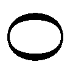
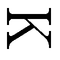

| Dr.ルナの不思議なカルテ (PHP文芸文庫) | |
| 西山 繭子 | |
| 株式会社ＰＨＰ研究所 (2013) | |

Ｄｒ． ルナの不思議なカルテ
西山繭子
「Ｄｒ． ルナの不思議なカルテ」◎目次
装丁──高柳雅人
装画──平沢下戸
Ｄｒ． ルナの不思議なカルテ
Karte No.1
今日はどんな患者が来るのだろうか。白衣に袖を通しながらルナは窓の外を窺 う。ちょうど目の前を銀杏 の葉がひらひらと舞い落ちていった。古い木枠の窓を開ける。がたがたと音を鳴らし、いつはずれてもおかしくないのだが、ルナが子どもの頃からかろうじてひっついている。
外から細く冷たい風がルナのおでこに突き刺さり、思わず眉をひそめる。
「あらあら和 久 井 先生、こんな寒い日に窓なんて開けて風邪をひいたら大変ですよ。風邪の医者がいる病院なんて誰も寄りつきませんもの」
ルナは小さく「はいはい」と言い、閉ざした窓に引っかけ錠をする。建てつけの悪くなった錠は嫌な金属音を立てながら、何とか穴に収まった。
「保育園でも風邪が流行ってるみたいでね、うちの亮 ちゃんがうつされないか心配なのよ」
この病院の看護師である月 子 は心配そうに右手を頬に当て首を振った。彼女はいつも典型的なおばさんの動きをする。ルナはその仕草が可愛 らしくて好きだ。月子が心配する亮ちゃんというのは、彼女が溺 愛 している孫である。二歳になる男の子で、月子はいつもその子の話ばかりをしている。
「じゃあ亮ちゃんが風邪をひいたら私が注射してあげる」
ぐふふと笑うルナに月子はこれといった反応もなく「じゃ、今日もよろしくお願いします」とパーテーションで仕切られた受付へと消えていった。真っ白なナース服が眩 しくて目に痛い。昨今の看護師さんは動きやすいようにパンツスタイルという人も多いようだが、月子は頑 なに昔のスタイルを守っている。六十歳のおばさん、しかも小太りの彼女のその姿はアニメのキャラクターのようだ。
ルナは「よろしくお願いしまーす」と答え、古い円椅子に腰を下ろした。前院長であるルナの父親も愛用していた黒い革張りの円椅子。
ルナはファイルから数日前の患者のカルテを取り出すと、それに目を通すことなく足元にあるシュレッダーに呑み込ませた。しゃりしゃりと音を立てながらカルテがきざみ海苔のようになっていく。普通の病院であれば、カルテを大切に保管しその患者が快方に向かっているかを案ずるのだろう。しかしここでは、治療後のことなど気にすることではない。なぜならこの病院の治療は、患者を注射一本で一〇〇％完治させるからだ。普通だったら奇跡のような話であり、病院は長蛇の列、世界各国から難病を抱えた人が集まってくるだろう。しかし実際の病院はいつもひっそりとしている。しかたがない、ここに来る患者は皆、ひっそりと病を治したい者ばかりなのだから......。
眉間に皺 を寄せナンバープレイスと格闘しているルナの耳に、カランコロンというドア鈴の音が飛び込んできた。月子の提案でつけられた鈴に、ルナは「喫茶店みたいでおかしいよ」と言ったのだが彼女は「アルプスにいるみたいで素敵じゃないですか」と譲らなかった。本当は月子の居眠り対策だというのは百も承知だ。
パーテーション越しに不安気なか弱い声が聞こえた。どうやら今日の患者は女性のようだ。ナンバープレイスを引き出しに押し込み、自分の指先で口角を何度か上げた。医者たるもの、患者に不安を感じさせてはいけない。ルナはすっと背筋を伸ばし、凜 とした背中で患者との対面を待った。
「和久井先生、お願いします」
月子の声にルナはくるりと椅子を反転させ「こんにちは」とにっこり微笑んだ。ルナの前に立ったこの日の患者は、平凡な二十代の女性だった。そこそこに流行を押さえている服装、しかし色使いが何とも地味で華やかさというものはない。その女性はうつむきながら「こ、こんにちは」と蚊が鳴くような声で言った。すると途端にその顔はみるみると赤くなっていった。
ルナが「どうぞ」と椅子に座るよう促すと、「は、はい」とさらに顔を赤らめ、ちらりとルナの顔を窺った。そして目が合うと、ビクッと体を強 張 らせ横を向いてしまった。ルナは月子に渡された問診票に目を通す。
「緊張なさらないで下さい。当病院の院長の和久井です。えーっと、篠 田 茜 さん、ですね。まずはお話を伺いましょうか」
茜は上 目 遣 いでルナを見ると大きく深呼吸をした。
「私......、あの極度のあがり症で......、だから、あの今も」
「あがってるんですか？」
茜は真っ赤な顔でこくりと頷き、震える声で話し始めた。
「色んな克服法を試したんですけど、駄目なんです。カウンセリングにも通ったし、あがり症に良いっていうお茶を飲んだり、あ、犬との会話から始めてみるって方法も試しました。やれることは全部やったのに......」
ルナはふむふむと問診票に『カウンセリング、お茶、犬』と書き込んだ。役に立つものではないが、診察しているという体 は大事である。
「でも治らないんです！ 何をしても人前であがってしまうんです！」
茜は涙を浮かべながら叫んだ。大きな声だとよく通ることにルナは少し驚く。ルナはティッシュを一枚彼女に渡すと、「大丈夫ですよ」となだめるようにそっと自分の手を彼女の膝の上に載せた。心の中では、何が大丈夫なんだ？ と自問している。
「月子さん、準備してください」
自分のささくれを険しい顔で見ていた月子は「はい」と指先を気にしたまま別室に消えていった。
「篠田さん、今から少しだけあなたの記憶を見せていただきますので、こちらにお願いします」
茜の顔に不安の色が浮かんだ。そう、患者はいつもこの言葉を聞くと同じ表情になる。記憶を見られるというのは大概の人間にとって怖 いことらしい。ルナは茜の緊張をほぐすため、にっこりと笑い彼女を促した。
茜は躊 躇 しつつ、ルナの後について別室に移動する。
「このベッドに横になってください。レントゲンみたいなものですけど多少だったら動いても構いません。ただ一つ、自分で記憶を脚色しようとしないでください。たまにいるんですけどね、正確なデータが見られませんから、リラックスして横になっていてください」
茜は胸に手を当てながら小さく頷いた。ルナは人が見たらレントゲンだと思うであろう装置、「のぞき２号」を茜の頭部にセットした。本当は「脳内記憶断片覗見装置」という正式名称があるのだが、ルナと月子は「のぞき２号」と呼んでいる。２号というからには１号も存在した。幼い頃、見た記憶はあるのだが洗濯機だと思い込んでいた。そんな形をしていた。
「じゃあ始めますね」
ルナが別室の扉を閉める。診察室では月子が天井に巻き上げられた大型のスクリーンを引っ張り出していた。背伸びをして腕を伸ばした月子のスカートの裾 がいっそう短くなった。ルナはカーテンを閉め、電気を消す。昼間の診察室が途端に闇に包まれる。
「あがり症ねえ、私も小学校の合唱コンクールの時は自分でそうだって思ってたけど」
月子が肩をすくめて笑った。ルナは「治って良かったね」とわざとらしく笑顔を作り、リモコンの再生ボタンを押した。
人の記憶を見る時、ルナの心にはいつも警鐘が鳴り響く。気をつけろ、でも目をそらすなと。人の記憶は、時に悲しくひどく残酷なものがある。そんな時でも己の感情に流されてはいけない。ルナはふっと小さく息を吐くとスクリーンに目を向けた。真っ黒いスクリーンに白い文字が浮かび上がる。
《篠田茜 27 歳》
会議室のような小さな部屋。カジュアルな出で立ちの四人の男が値踏みをするようにこちらを見ている。それから逃げるように映像が茜の膝に移った。スクリーンに映し出される記憶は患者本人、つまり茜の目が見たものであり、その目線で語られる。たまに酔いそうになる時がある。
「会社の面接かしら？ それにしても随分ラフな皆さんだこと」
月子は記憶を見るのが好きである。ワイドショーやドラマよりもずっと面白いと言う。一人の男が口を開いた。
「じゃあ次、篠田さん、お願いします」
茜が立ち上がり、横を向いた。一人の女がスクリーンに現れる。彼女は「よろしくお願いします」と笑顔を浮かべ、茜もそれに答える。
「よーい、スタート」
パンッと手を叩 く音が聞こえると同時に目の前の女の顔が豹変した。
「あんたって最低ね！」
茜が一歩たじろぎ目線がゆらゆらと泳ぐ。「ち、ち、違うの......、あれは彼が勝手にそうしたことで......」
茜とは対照的に怒り狂った女はどんどんと迫ってくる。唾 を飛ばしながら、こちらを指差し、鬼の形 相 でまくしたてる。茜の記憶とはいえ、見ている方は良い気分ではない。女と茜のやりとりが続く。茜の声は小さく、震えていて女の勢いに呑み込まれる一方だ。パンッと再び手を叩く音が聞こえ、女は「ありがとうございました」とにっこり笑顔になった。男の一人が苦笑いを浮かべながら口を開く。
「篠田さん......、顔が真っ赤だけど大丈夫？」
他の男たちもくすくすと笑いながら茜を見ている。
「すみません......私、緊張すると顔が赤くなってしまうんです」
茜の言葉に別の男がパイプ椅子にふんぞり返りながら言った。
「芝居するたびに赤くなってたら、あなた役者なんてできないでしょ。赤鬼の役があればいいけど」
男の嘲 笑 に茜がうつむいた。涙だろうか？ 映像はぼんやりと霞 み、薄汚れたリノリウムの床を映したままフェードアウトした。
「嫌な男ね。あれは絶対にモテないわよ。それにしても、あがり症の役者さんなんて、これは致命的だわね。どうします？」
月子がカーテンを開け診察室に光を戻す。ルナは眩しさに一瞬目をつぶり、小さくため息をついた。
「どうするもなにも患者さんが希望している限り、治療は断らない。それがうちの病院のモットーでしょ」
月子は肩をすくめて「お父様のでしょ」とつぶやいた。その言葉には答えずルナは天井を見て、ぶつぶつと何かをつぶやいては指を折った。そして「よし」と頷くと、いくつかの番号をメモに書き出し、それを月子に渡した。
「２番、28 番、34 番、６番、59 番......、あら、今日のレシピは意外と簡単なんですね。でもいつも言ってますけど番号順に書いてくださいね」
月子が診察室の片隅にある古い型の冷蔵庫に手を伸ばす。そろそろ新しいものに買い替えようかと考えているのだが、最近の冷蔵庫はやたらと機能的で、この場所には無駄に思えてしまう。月子が冷蔵庫に並べられた小さな茶色い小瓶を取り出していく。番号通り、順序よく並べられた小瓶たち。
月子はこれらの配合をレシピと言う。そっちの方が可愛らしいからという理由だ。ルナは並べられた小瓶の中から少しずつ液体をスポイトで吸い上げては一つの透明の小瓶に移していく。一滴一滴が混ざるごとに、それは驚くべき色の変化を見せる。
完成したワクチンは先ほどの茜の顔のように真っ赤な色をしていた。これを彼女の体内に注入する。そして彼女は生まれ変わる。
ルナが治すもの、それは患者の心に潜 む病なのだ。
平日の昼間ということもあり、電車内は空 いていた。緊張から解き放たれた茜は、空いている席に腰を下ろすと、先ほど注射した左肩にそっと触れた。注射した後の痛みはしっかり残っているのだが、それで何かが変わったのかはわからない。茜は不安になりながら鞄 の中の携帯電話を取り出しメールを打つ。「今日、夕飯は？」送信されたことを確認し、携帯を鞄に戻した。
目の前の席には若い母親と小さな女の子が座っていた。目を閉じている母親の横で娘は携帯ゲームに興じていた。この子ぐらいの頃だったろうか、あの感動を味わったのは。
小学三年生の頃、学芸会で茜は「やまびこ６」という役をもらった。その頃は怖いものなど何もなかった。少しだけどきどきしながらも、たった一つの台詞 を自分の限界いっぱいの大きな声で叫んだ。
「やまびこと人間は友達にはなれないの！」
体育館に茜の声が響いた。やまびこがいるのではないかと疑うほどに反響する声。しかも客席では、その茜の言葉に心を動かされハンカチで目頭を押さえている父兄の姿が見えた。茜の心臓がどくどくと音を立てた。自分のお芝居に人が泣いた！ 劇が終わってから並んだ舞台の上に拍手が波のように押し寄せ茜を包んだ。茜の顔は喜びに高揚し、客席に深く頭を下げる。この出来事を境に茜の将来の夢が決まった。
茜は親子の向こうに広がる風景をぼんやりと眺めた。高い高い秋の空。小さな雲が電車を追いかけてくる。そのスピードは速いけれど追い越されることはない。自分が今までたくさん追い越されてきたことを思い出し茜は苦いため息をついた。
中学、高校は演劇部がない学校だったために小遣いを貯めてはたくさんの戯曲本を買い、一人台詞を読むことに没頭した。台詞はすんなりと頭に入り、感情を込めて吐き出すことができた。六畳の小さな部屋で、自分は才能があるのだと信じていた。そして大学に入り、念願の演劇サークルに入った。期待に胸を膨らませ、夢への一歩を踏み出した......、そう思っていたのに、それはいともたやすく打ち砕かれ、それと同時に茜の苦悩の時代が始まった。自分の部屋ではあれほどうまくできたことが、人前だとできない。戸惑う茜に、演劇サークルの部長は「篠田はあがり症なんだな」と言い、それからサークル内では篠田茜＝あがり症の図式ができてしまった。人にあがり症だと言われれば言われるほど、それは茜の頭にすり込まれていった。どんなに拭 っても取れないインクで体全体に。そのうち芝居だけではなく、他人と話すことにすら恐怖を覚えるようになった。道に迷っても人に聞くことができない、デパートで店員に話しかけられると逃げるようにその場を去ってしまう。しかし、そんな状態に陥っても茜は諦めることができなかった。二十七歳になった今も、アルバイトを続けながら小さな芸能事務所に所属してオーディションを受け続けている。しかし、もちろん役にありつけることなどなかった。自分は芝居の才能はある。ただあがり症なだけなのだ。それさえ治れば、それさえ治れば......。
「すみません、この電車って高円寺に止まるわよね？」
車内の路線図を見ていたおばさんが急に茜に話しかけてきた。茜は突然のことに驚きながらも「はい、止まりますよ。私も高円寺なんで」と笑顔で頷いた。おばさんにお礼を言われてから茜ははっと思い出したように鞄から鏡を取り出し、自分の顔をのぞき込んだ。そこには赤鬼のような顔をした自分はいなかった。
台所で茜は鼻歌交じりで夕飯の支度をしていた。あがり症が消え去り生まれ変わった自分。あまりの喜びに少しだけ庖丁を持つ手が震えてしまう。昼間、病院で医者に言われた言葉を思い出す。
「いいですか？ このワクチンはあがり症を完全に治します。でも、それがあなたにとって絶対的に良いことだという保証は私にはできません。それでも良ければ処方します」
茜は迷わずワクチンをお願いした。どこに迷う必要があるだろうか？ これでやっと夢を叶えることができる。手のひらに載せた豆腐を慎重に切っていると玄関の扉が開いた。
「ただいま」
一緒に暮らす恋人、孝 が疲れた表情を浮かべながら帰ってきた。肩にかけた荷物もそのままに孝は冷蔵庫を開けて缶ビールを取り出す。
「まじでテレビの人間は話にならなくて駄目だわ。あいつら本当、芝居ってもんを何もわかってねえからな」
最近の孝は愚痴ばかりだ。同じ演劇サークルだった孝は、自分で立ち上げた劇団をやりつつ最近は外部から脚本を頼まれることも多くなった。今はテレビの単発ドラマの脚本を書いていて、その打ち合わせから戻ってきて不機嫌の真っ只中だ。
「しょうがないよ、テレビの人たちだもん」
茜はなだめるように言いながら、豆腐を味噌汁の中に落とした。鍋の中の味噌汁が大きく揺れる。孝に合わせるようにテレビを馬鹿にはしたものの、内心はいつかテレビで活躍できる女優になりたいと茜は願っている。売れっ子の脚本家と女優、誰もが羨 む二人。彼の作品で主演をつとめる自分。どこかの授賞式で二人をたくさんのフラッシュが包む。茜が妄想する孝との未来。
「すぐできるからね」
孝が缶ビールをすすりながら不思議そうな顔をして茜を見つめた。
「何かいいことあった？」
茜は「別に」と言いながら、冷蔵庫から真っ赤なトマトを取り出した。そして昨日までの自分の顔みたいなそのトマトに軽やかに庖丁を入れた。
夜の風は冷たい。いつの間にこんなに寒くなったのだろうと思いながら、ルナは細く急な階段を上がっていく。上りきったところにある" ｏｐｅｎ" という札のかかった扉。重厚な見た目に反して、手ごたえのない軽いその扉を開けると、暖かいエアコンの風と優しい音楽がルナを包んだ。
「いらっしゃいませ。おう、ワクちん」
小さなバー『アポロ』のカウンターの中で本を読んでいた朔 が顔を上げた。朔はルナの幼馴染みである。
「もう、そのあだ名やめてよね」
「何でだよ、和久井ルナは昔も今もワクちんだろ。ビール？」
ルナが頷くのを見ることなく、朔は棚からビールグラスを取り出した。他に客はいない。ルナは朔がカウンターに置いた本に手を伸ばす。『美味しいカクテル百連発！』というセンスのないタイトルに、どうしようもない装丁の本だった。
「百連発されてもねえ......」
色とりどりのカクテルの写真をルナが眺めていると、朔は「覚えて損はないだろ」と口を尖らせた。目の前に置かれたビールを口に運ぶ。冷えたビールが空腹の胃に染み渡る。
「今日は忙しかった？」
朔はルナの病院の実態を知っている数少ない一人だ。どんな患者が来たのかとすぐに聞きたがるが守秘義務があるから、と教えることはない。ルナは話題をかえた。
「ねえ、朔って小さい頃、何になりたかった？」
煙草 の火をつけながら朔は考えている。朔が煙草を吸い始めたのは高校二年生の夏だった。いけないことだと思ったので、朔の母親に言いつけたら、朔はしばらくルナと口をきいてくれなかった。
「最初が野球選手で、その後は宇宙飛行士。あと、建築家と弁護士ってのもあったな」
「夢がぶれすぎでしょ」
ルナは苦笑してグラスを傾けた。
「夢はいっぱいあった方がいいんだよ。だって一つだったら、怖くて諦められないじゃん。夢がなくなっちゃうんだぜ。夢のない人生は虚しい」
何気ない朔の言葉にルナは篠田茜の真っ赤な顔を思い浮かべた。今日のワクチンは彼女の人生をどう変えていくのだろう？
茜は胸を高鳴らせながら、随分長い間それを見ていた。テーブルの真ん中に置かれた厚みのあるそれは、篠田茜という名前が入った初めての台本。
ワクチンを打ってから初めてのオーディションはテレビの昼ドラマだった。しかもレギュラーである。直前に渡された台詞の書かれた紙、誰もがそれを見ながら芝居をする中、茜は僅 かな待ち時間で完璧に台詞を覚え役を演じきった。たくさんの戯曲本で訓練した努力がやっと実った気がした。やはり全ては、あがり症のせいだったのだ。私の輝かしい道を長いこと阻 んでいた病。茜は台本を愛おしそうに抱きしめた。
襖 が開き、寝起きの孝が出てきた。最近の彼は昼夜逆転の生活で、いつも夜中に脚本の執筆をしている。
「ねえ、見てこれ！ 私の名前が入ってるの！」
孝は目をこすりながら、面倒くさそうに「ああ、すごいね」と言った。茜はコップに水を注ぎ、テーブルの上に置いた。孝は何も言わずにそれを飲み干す。そこに水が出てくるのが当たり前であるかのように。
「ドラマって制作発表とかもあるじゃない？ 私も出るのかな？ ああ、でもそしたら洋服買わなきゃいけないや」
何も言わずに煙草に火をつける孝。煙が目に入ったようで顔をしかめた。茜は台所の換気扇をつける。孝はふーっと煙を天井に吐き出した。床に置いてあった灰皿をテーブルの上に載せて、孝が灰を落とす。僅かな灰がひらひらとこぼれ、茜の台本の上に落ちた。
「何か......、機嫌悪い？」
孝は「別に」とさも不機嫌そうに言い、テレビをつけた。イケメンのアイドルが主役のドラマ、彼の棒読みの台詞が部屋の空気をさらに凍りつかせる。
いよいよ明日に迫ったクランク・インを前に、茜は喜びを隠しきれず饒 舌 だった。
「リハーサル室なのに、こんなに広いのよ、ほら見て。助監督さんが段取りよく仕切ってくれて、やっぱり生の現場って違うよね」
茜は撮った写メを孝に見せた。孝は「ふーん」と興味なさそうにテレビに目を向ける。茜はお構いなしに話し続けた。誰でも知っている有名な強 面 の共演者が実は甘いものが大好きなこと、アドリブで面白いことを言われて笑いをこらえるのが大変だったこと、テレビ局で国民的アイドルとすれ違ったこと。その間孝は、ずっと素っ気ない相槌をうっていた。
「ああ、もうこんな時間。明日は五時起きでクランク・インだから早く寝ないと、お肌に悪いや。ハイビジョンはどんな粗も映しちゃうものね」
立ち上がった茜の背中に「お前さ」と低い声がぶつかった。振り返ると孝が冷たい目で茜を見ている。
「何かみっともないよ」
孝の言葉に茜の顔が歪む。「俺はさ、お前と違うから。演劇側の人間だから」そう早口で言うと孝は立ち上がりコートを掴 んだ。
「ドラマだってちゃんとお芝居してるよ」
茜は取り繕った笑みを浮かべながら孝の前に立ちはだかる。孝はわざとらしく大きなため息をつくと、ふっと笑った。
「へえー、でもお前......、芝居うまくないじゃん。何でお前なんかが選ばれたんだろうな？」
孝が口の端をひくつかせながら茜を見据えている。
茜は怒りで自分の体温が上昇していくのがわかった。私がどんなに頑張ろうと、孝は自分が優位であり続けたいのだ。つけっぱなしのテレビからは「乾杯！」という楽しそうなビールのＣＭが流れている。そのかけ声とは真逆のトーンで茜がつぶやいた。
「......嫉妬してるんでしょ？」
孝の顔が怒りと恥ずかしさにみるみる赤くなっていく。茜は孝の両腕を掴んだ。
「そうでしょ？ 私の仕事がうまくいってるから嫉妬してるんでしょ！ みっともないのはどっちよ？」
孝は茜から顔をそらし下唇を噛んでいた。いつも立場が上だった孝に対してこんなことを言える日が来るなんてと、茜は怒りながらも悦に入っている自分に気がついた。自分は怒りの感情をぶつける芝居もこんなに上手にできるのだ。次の台詞は？ 孝に浴びせる罵声はどんな台詞？ 茜が口を開こうとしたその時だった。
「うるせーな！」
掴んでいる茜の腕を、声を荒らげた孝が力いっぱい振りほどいた。その強い力に体全体が押し流され、茜はバランスを崩す。そして、はっと息を呑んだその瞬間、目の前にはカラーボックスが鋭利な刃物のように彼女を待ち構えていた。茜の目にはスローモーションのように映る。こんなにゆっくりなのに、どうして......。避けることもできず、茜は振りほどかれた力のままカラーボックスに顔面から倒れこんだ。茜が少女だった頃、夢を託したたくさんの戯曲本が並べられたカラーボックス。それがどんっという鈍い音と共に僅かに揺れた。
テレビからは大袈裟な笑い声が聞こえてくる。誰かが私を笑っているの？ 茜は何が起きたのかわからなかった。ただ右目のすぐ下、頬骨が感じたことのない熱を帯びている。添えた手のひらがじんわりと生温かくなった。
「あ、茜......？」
震える孝の声が頭上からふり注ぐ。茜はゆっくりと押さえていた手をはずし、顔を上げた。ぼんやりと見える部屋の奥に置かれた鏡に誰かが映っている。
あれは誰？ 私？ あがり症は治ったはずなのに、どうして顔が赤いの？
玄関の扉を開けると朝の光が差し込むと同時に冷たい風が通り抜け、ルナはその寒さに思わず出勤するのをやめようかと思った。しかし病院は目と鼻の先。そもそも同じ敷地内にあるのだから、僅かな勇気を出せば良いのだ。体を丸めながら玄関の鍵を閉めていると、月子の声が聞こえた。
「おはようございまーす」
もこもこの茶色いダウンコートを着た月子は山にいたら熊と間違われて撃たれる危険性がある。「おはよう」と言う前にルナの口からは大きなあくびが出た。
「やだ、朝からあくびなんて」
月子がぶんっと右手を前に振った。
「この前借りた海外ドラマのＤＶＤにはまっちゃって、遅くまで見てたんだよね」
あくびの涙を指ではじく。月子はぶつぶつと小言を言いながら病院の玄関の鍵を開けると、ルナの背中に手をやり、先に中へと促した。月子のこういったさりげない優しさにルナはいつもほっとさせられる。
ドアの呼び鈴が小さく余韻を残す中、月子が思い出したように言った。
「ああ、ドラマといえば、前に来た患者さん。お仕事うまくいってるのかしら？ 彼女の記憶を見た限りではあまりお芝居が上手じゃなかったものね。あがり症が治れば大丈夫なんて、そんな簡単な世界じゃないだろうし」
ルナは「そうだね」と答えたが、彼女がどうなったかなど知りたくはなかった。もし不幸な人生を歩んでいたとしたら？
「何とか活躍して戦隊ヒーローのドラマに出て欲しいわあ。そしたら、亮ちゃんに自慢できるもの」
月子は両手を胸に当てにっこり笑った。彼女の幸せのバロメーターは全て孫の亮ちゃん。ルナにはそれが羨ましく思える時がある。
三十歳になった今、ルナは結婚もせずにひたすら人の心の病を治している。病院を継いだのも父親のため。そして、その父親はもういない。自分は誰のために、この病院を続けているのだろうか......。
ルナはおでこをぴしゃりと叩いた。
「さ、今日も頑張ろーっと」
月子は「別に頑張らなくてもいいですよ」と独り言のようにつぶやき、コートを脱いだ。コートの下がすでにナース服だったことにルナはぎょっとしたが、何も言わなかった。
Karte No.2
普通の病院だったら、昼休みに医者は何をしているのだろう？ コンビニに向かう道中、ふとルナはそんなことを考えた。病院の昼休みはやたらと長い。どうしてだ？ 疲れやすい医者が多いとか？ 昼休みにげっそりした顔でベッドに横たわる医者を想像したら、少し面白かった。
風がぴゅーっと音を立てながらルナの髪の毛を激しく揺らし、通り過ぎていった。ルナは背中を丸め、足を速めた。
住宅街の中にあるコンビニなので、昼時といっても弁当を買いに来る人は少ない。つまり品数も少ない。その中でもルナの条件に当てはまるものというと、かなり限定されてくる。その条件とは、米以外。コンビニの弁当のレベルは日々進化しているが、米だけは進化するはずがないとルナは思い込んでいる。迷うことなく明太子パスタを手に取りレジに向かったが、僅かな差で他の客がレジ台の上にガムを置いた。ルナは心の中で舌打ちをする。
「あ、やっぱり違うのにします！」
ピッとバーコードの音がしたと同時に、その男は店員からガムを取り上げた。そしてガムが並ぶ棚の前に立つと、数種類あるガムの前で指先をせわしく動かしながら、どれにしようか迷っている。いらだったルナがじろりと見ると、男は「先にどうぞ」と申し訳なさそうに言った。
明太子パスタが電子レンジに入れられる。空いているコンビニでのこの待ち時間は、とても居心地が悪い。コンビニ業界はもっと強力なレンジを開発するべきだ。ふと男に目をやると、一旦手に取ったガムを「いや、違うな」と再び棚に戻し、まだ迷っている。ルナは男の後ろを通り雑誌コーナーに向かった。そしてぱっと目についたファッション雑誌を手に取り「これもお願いします」とレジに出した。雑誌の代金を店員に渡した瞬間、レンジがピーッと鳴った。男はまだガムを選んでいた。
昼休みは終わったけれど、病院に患者の姿はない。ルナの病院では患者がゼロの日も珍しくないのだが、やはり暇である。先ほどコンビニで買ったファッション雑誌をぱらぱらと眺める。『デキル女vs モテル女・秋のコーディネート』という見出しの特集ページ。なぜデキル女とモテル女を戦わせなければいけないのかと眉をひそめる。自分はどちらにも当てはまらないなあと、同じ顔のようなモデルたちを眺めていた。
「あらあら、また流行るのね、ミニスカート」
暇をもてあました月子が、ルナの傍らにやってきた。
「ああ、そうみたいね」
ミニスカートというのは、もはや流行りなどではなく定番なのだが、ルナは月子に合わせた。
「やっぱり流行りって繰り返すのよね。でも嫌だわ～、こんな短いスカートをはいた彼女を亮ちゃんが連れてきたら、私どうしましょう」
月子は両手を頬に当て首を振った。ファッション雑誌を見ているのに、やはり彼女の話題は孫の亮ちゃんになってしまう。
「じゃあ私みたいな彼女だったら？」
わざとらしい笑顔を作ったルナを月子は「うーん」と真面目な顔で見ると一言、「先生は亮太のタイプじゃないわよ」と微笑んだ。冗談か本気かわからなかったが「ひどーい」とルナは大袈裟に怒ったふりをしてみる。医者と看護師ではあるが、こうしたやりとりをすると親子ごっこをしているみたいでルナは嬉しくなる。
「もう今日は誰も来ないかしらねえ」
月子に言われ時計に目をやると受付終了の四時になろうとしていた。
「そうだね。あーあ、患者がゼロだと飲みに行く気にならないんだよね」
「行かなきゃいいじゃない」
その時、カランコロンと扉につけたドア鈴の音が鳴った。月子は「はーい」と受付に向かい、ルナは医者モードに自分を切り替え背筋を伸ばした。
「こんにちは、当病院の」
患者の顔を見てルナは思わず言葉を止めた。おどおどと椅子に座ったスーツ姿の患者は、昼休みにコンビニでガムを選んでいた男だった。痩身で頼りない雰囲気の男。
「院長の和久井です。今日はどうされました？」
男は小さな声でぶつぶつと「えーっと、ああ、あのですね......、何から話せばいいかな」と言い、爪を噛んだ。ルナはいらいらしている自分を顔に出さないよう、精一杯の微笑みを浮かべる。
「お困りのことをゆっくり話してくださって結構ですよ」
「はい......、あの、そのですね。あ！ ちょっと待ってください」
男が胸ポケットから携帯電話を取り出した。男の手の中で振動しながら携帯がピカピカと光っている。液晶画面に出た相手の名前と睨 めっこし続けていた男が、すがるような表情でルナを見た。
「あの、会社からなんですけど、出た方がいいですかね？」
予想していなかった質問にルナは「は？」と口を丸く開けた。沈黙する二人の間に携帯のバイブ音が唸 り続けている。
「私に聞かれても」
とルナが言いかけたところで携帯が切れた。男はほっとした表情で一言「すみません」と言い、そして、
「僕......、優柔不断なんです」
ルナは問診票に『ゆーじゅーふだん』と平仮名で書き込んだ。漢字で書くよりも早いだろう。
「今日もここに来ようかどうか決められなくて、しばらくこの周りをうろうろしていたんです」
コンビニで会った時間を考えるとゆうに三時間は過ぎている。ルナは『三時間、ガム』とペンを動かす。
「この前だって、あ、この話はした方がいいですか？」
ルナの「ええ、お願いします」という言葉に男は話を続ける。
「航空会社のマイルが貯まっていたので、どこかに遊びに行こうと思っていたんです。それで、どこに行こうか迷っていたら......」
聞き終わらずとも話のオチは読めたが、ルナは興味深いといった面持ちで「で、どうしたんですか？」と男の目を見た。男は恥ずかしそうにルナから視線をはずし、
「マイルの期限が切れちゃいました」
と泣き笑いのような表情を浮かべた。
彼の後ろで月子が「ぐふっ」と吹き出したので、ルナは「準備してください」と少し厳しい声を出した。月子は舌をぺろりと出して、「のぞき２号」が置かれている別室へと消えていった。
《荒井健一 25 歳》
炬 燵 の上に大学のパンフレットが並べられている。これは患者が見た記憶の世界。ルナの目の前にある大型スクリーンには、荒井の記憶が映し出されている。
「ああ、どうしよう。どっちにしよう」
健一の視線が上がり、傍らでテレビを見る一人の男に向けられた。
「親子よね、絶対。鼻の形がそっくりだもの」
月子の言葉に「かな？」と小さく答えるルナ。自分は母親似だったが、耳の形は驚くほど父親に似ていた。気づく人はいなかったけれど。
「まさか両方とも合格すると思わなかったからな、まあお前が行きたい方を選べばいいさ」
父親は、息子の合格を喜び、誇らしげに笑っている。
「行きたい方っていってもさ、どっちもいいんだよ。レベル的には変わらないしなあ。こっちは乗り換え一回で通えるだろ？ でもこっちの方がイメージ的にお洒落な学校だし、ああ、どうしよう。どっちにしよう」
パンフレットを交互に見比べていると、台所からお盆に湯のみを載せたおばさんがやってきた。
「ああ、やっぱり男の子は母親に似るんだわね。こっちの方が似てるもの。うちの亮ちゃんも娘にそっくり」
月子がふむふむと頷いた。
「まったく、あんたいつまで悩んでるのよ。男だったらすぱっと決めなさいな」
母親がパンフレットの脇にある一枚の紙に手を伸ばす。
「こうなったらあみだで決めるしかないかな」
そう笑う父親の横でふと顔を曇らせた母親。紙を持つ手が震えている。
「どうしたの？」
健一がのんびりとした声で聞くと、母親は大きく首を振りながら無言で手にした紙を健一の目の前につきつけた。記憶が映されている大型スクリーンいっぱいに、その紙が広がる。そして一つの文字が大きくズームアップされた。
『入学金支払い期限』
健一の動揺が視線に表れ、文字が大きく揺れたところで映像は終わった。
悲劇とも喜劇ともとれる健一の記憶に「こりゃ致命的だわ」と月子は呆れた声を出した。
「優柔不断な男って、私は駄目だわ。頼りないじゃない。先生はどう？」
ルナは「付き合ったことがないから、わからない」と言いながらメモに数字を書き出す。優柔不断の患者は今まで何人も治療をしてきた。ルナの記憶では全てが男性患者だった。女性の方が決断力が勝っているのだろうか？ それとも女性は優柔不断でも困らないのだろうか？ メモを月子に渡した。月子がそのメモを見ずに、
「さー、苺 にロック」
とわけのわからぬことをつぶやいた。怪訝な顔でルナが月子を見ると、彼女はメモに目をやり「当たった」と嬉しそうに言った。冷蔵庫から小瓶を取り出す月子の背中にルナが聞く。
「今の何？」
「ほら、優柔不断の患者さんは何人も診ているから番号も覚えてるのよ。いい国つくろう鎌倉幕府の一一九二年みたいに語呂だと覚えやすいでしょ？ ３番、15 番、26 番だから『さー、苺にロック』なの。先生も使っていいわよ」
確かにあまりにも変な語呂なので忘れることはなさそうだ。ルナは月子が並べた小瓶の中身をスポイトで吸い取り、別の小瓶に配合していく。３番に15 番が注入されると、その液体は不吉なほどに暗い深緑色になったが、26 番が加わると甘そうなペパーミント色になった。ルナは小瓶に鼻を近づけてみたが、瓶の縁からは何の香りも漂ってこなかった。
健一が会社に戻ると最も苦手とする上司の憩 井 が冷ややかな顔で、健一を手招いた。まったくそぐわない名字の嫌味な上司。憩井が薄くなった頭髪をぼりぼりと掻きながら臭い息を撒き散らす。
「荒井、お前は何のために携帯電話を持ってるんだ？ 出ないんだったら意味ないだろ。あん？」
語尾にいつも「あん？」という口癖がつく。健一は不快感まる出しの顔を見せぬよう「すみません」と深く頭を下げた。「お前のことだから電話に出るか出ないかも決められなかったんだろ？ ああ、電話だ。どうしよう、出ようかな、どっちにしよう。そんなとこだろ。あん？」
社内にいる数人の社員がくすくすと笑って健一を見た。
「違います。新規の営業中で出られなかっただけです」
「ほう。で、契約は取れたのか。あん？」
健一は真っ直ぐに憩井を見た。
「今日は無理でしたけど、感触は良かったんでまた行ってみます」
憩井は「何度も聞いてる台詞だなあ」と首を回しながら、健一にしっしと手を振った。
健一が勤めているのはカラオケ機材の会社であり、彼の部署は営業二課。主にカラオケ機材を取り付けてくれる店と契約することが仕事ではあるが、契約した店とはその後のアフターケアなども任されるので、やらなければいけないことは多い。これまで次から次へと来るクレームへの対応時に、優先順位を即座に決められない性格上、げんなりするほどの罵声を浴び、時には契約を解除されたこともあった。壁に貼られた営業成績表の棒グラフに目を向ける。まったく伸びることのない健一の棒。あの医者の言葉が健一の頭をよぎる。
「優柔不断は治りますが、それがあなたにとって最善だとは言いきれませんよ。それでも治療しますか？」
良かったのだ、あの時に頷いて。確かにそこでも自分は「治療した方がいいと思いますか？」と訊ねた。しかし呆れた様子で「では、やめましょう」と言われた反動で「やります、やります」と思わず口が動いてしまった。自分はもう優柔不断な人間ではない。決断力を持った男なのだ。数件のメールをチェックすると健一は夜の営業へと出陣するため、気合の一服をしに喫煙コーナーへと向かった。
繁華街の営業はほとんどが夜である。窓の外に目を向けると、日が短くなったこの季節、六時でも外は闇につつまれていた。そのため自分の顔がはっきりとガラスに映し出される。健一は顔の向きを変えながらじっくり自分を観察する。昨日までと何ら変わりのない自分がそこにいた。本当に治ったのだろうか？ 一抹の不安を感じていると、そこに同僚の木 ノ 内 がやってきた。
「お疲れ」
木ノ内は同僚の中でも一、二を争う営業成績で上司にも、女子社員にも気に入られている羨ましい男だ。彼は煙草をやけに格好つけた仕草で一口吸うと、
「お前、明日って暇だろ？」
と健一の予定を勝手に決めつけながら言った。確かに何の予定もなかったので、健一は頷いた。
「合コンなんだけど他の奴にドタキャンされてさ、ほら金曜の夜に予定がない奴なんてなかなかいないだろ？ だからお前でいいよ」
木ノ内の言い方には腹が立ったが、正直合コンには行きたかった。
「ああ、行くよ」
と答えた健一を木ノ内は意外そうに見た。そして「即決だな」と苦笑いを浮かべる。その言葉に健一の心臓が音を立てた。まだ吸える煙草を灰皿にねじ消し、喫煙コーナーを後にする。
即決？ 自分は合コンに行きたかったから迷わずに答えられただけではないだろうか。廊下に設置された自動販売機の前に立ち止まり、ポケットの小銭をまさぐる。注射一本で瞬時に優柔不断が治るなんて、本当にそんなことがありえるのだろうか。チャリンと自動販売機に小銭が音を立てて呑み込まれ、ボタンが一斉に光った。あの医者にそんなことができるのだろうか。取り出し口からごとりとジュースが落ちる音がした瞬間、健一ははっとなった。無意識にボタンを押した自分の人差し指をじっと見る。即座にボタンを選んだ指先。
今までの健一から考えると、それは奇跡的な決断力だった。
やはり患者が来た日はお酒が美味しく飲めると思いながらルナは一杯目のビールを飲み干した。
「次もビール？」
カウンターの中にいる朔の言葉に首を振って、ルナは並んだボトルを見渡した。朔も勉強していることだし、たまにはカクテルでも飲んでみよう。ジン、ウォッカ、ラム、チンザノ......。たくさんのボトルが行儀良く並んでいる。几帳面な朔らしい。
「えーっとね、ウォッカトニック......、じゃなくてブルドッグで」
朔がウォッカの瓶を出しながら「優柔不断だねえ」と笑った。
「違うわよ、ちょっと迷っただけ。すぐにブルドッグに決めたもの」
ルナは口を尖らせる。
「いいじゃん、女は優柔不断なぐらいの方が可愛いもんだよ」
朔はメジャーカップを動かし、慎重にウォッカの量を量っている。「別にいいもん、私は」と言いながらカウンターの隅に置かれたオブジェの小さなチェスセットを手に取る。今さら可愛げなんてあっても、どうにもならないわよと思いながらナイトの駒を動かす。馬の首だけのこの駒はどこか不気味だ。
「ワクちん、チェスとか弱そうだな」
朔がブルドッグをコースターに載せた。氷がまだ回っている。
「ルールを知らないからできないけど、何で弱いと思うの？」
「だって昔オセロやった時、いつも負けてたじゃん。何も考えないでぽんぽん置いてくからさ」
グラスに口をつけるとグレープフルーツの爽やかな香りが鼻をくすぐったが、一口飲むと胃がウォッカで熱くなった。ルナは朔に見えないカウンター下で胃をさすりながら反論する。
「朔が遅いからいらいらするんだもん。朔こそ優柔不断なんじゃない？」
朔がビショップの駒を動かしながら「違うよ」と笑った。
「熟考と優柔不断は、まったく別物だろ」
その言葉に今日の患者、荒井健一の顔が頭をよぎる。彼の場合は明らかに熟考とは、かけ離れていた。朔がぽんぽんとルナの駒まで動かしていく。
「チェックメイト」
そう言って嬉しそうに朔は笑っていたが、チェスを知らないルナは何のことやらさっぱりわからなかった。
健一はにんまりしながら壁に貼られた営業成績を眺めていた。ここ数カ月で飛躍的に伸びた彼の棒グラフ。今まで躊 躇 していた新規の店にも、迷わず飛び込めるようになり、その自信のおかげか面白いほどに営業がうまくいくようになった。
「荒井、お前人が変わったみたいだな。変な薬でもやってんじゃないのか。あん？」
上司の憩井が馴れ馴れしく健一の肩に手を回してきた。健一はすっとそれをはずすように体を反転させて、
「やってませんよ。良い薬しか」
と笑った。憩井の顔に一瞬、戸惑いが浮かんだが「まあ、この調子でやってくれよ」と拳をつくって健一の胸を叩いた。さりげなくそこを手ではらいながら、木ノ内のデスクに向かう。
「木ノ内、悪いんだけど俺、担当の店を全部回りきれなくてさ、何軒かサポートしてもらってもいいかな？」
木ノ内はおもむろに不機嫌を顔に浮かべながら「ああ」と答えた。リストを木ノ内の前に広げ「ここと、ここと......」と指差していると木ノ内が、
「おい、もっと考えて決めろよ。お前が行かなきゃ駄目な店だってあるだろ？」
と健一を制した。健一はわざとらしくため息をつき「あのな」と説教するかのような口調で続けた。
「仕事ってのはな、瞬発力が大事なんだよ。考えてる時間があったら動く。基本だろ？」
木ノ内は返事をすることなく地図を開き、健一に指示された店の場所を確認し始めた。健一はにんまりと「よろしくな」と木ノ内の肩を叩き、軽い足取りで会社を後にした。
まだ十一月だというのに街は完全にクリスマスの色をしていた。健一は青色発光ダイオードのイルミネーションの中に、首を伸ばしてきょろきょろと自分を探す真 衣 の姿を見つけた。
治療を受けた翌日に人数合わせで呼ばれた合コンで健一は真衣と出会った。その時のことを思い出すと健一は何とも優雅な気分になる。やたらと女の子に気を遣う男たちの中、即断即決の精神を貫いた。オーダーしたいものを即座に選ぶ、二次会のカラオケでは迷わずに選曲。一番可愛かった真衣もそんな健一に好意を見せた。ちまたでは草食系男子が人気だなんて言っているけど、やはり女は男らしい男が好きなのだと健一は思った。
「何食べたい？」
一応の社交辞令として真衣に聞く。
「何でもいいよ」
笑顔を見せる真衣に「じゃあ寒いし、おでんにするか」と言うと彼女は「うーん」と首を傾げた。何でも良くないじゃないかよと健一はいらっとしながら「じゃあイタリアンは？」と聞いた。
「あ......、今日のランチ、イタリアンだったんだよね」
真衣が気まずそうに笑い、健一はわざとらしく大きく息を吐いた。
「だったら何でもいいとか言わないでよ。俺、優柔不断な奴って一緒にいていらいらするんだよね」
真衣の顔が曇る。結局二人はチェーン店の居酒屋に入ることにした。真衣の意見など関係なしに、あれこれとオーダーをする健一。真衣の話の途中で「それって面白いの？」と結論を急ぐ健一。それでも真衣は取り繕うように会話を合わせた。まったくもって自分というものがない女だ。健一はレモンサワーを飲みながら、ほんのり赤くなった真衣の顔を見た。
「あのさ、やっぱり俺たち合わないわ」
即断即決。呆然とする真衣を無視して健一は伝票を手に立ち上がった。
健一はかじかんだ両手に息を吐きかけながら繁華街を歩いていた。今日もどこか新規の契約を取ってみせるぞと無数の看板を眺めながら、乗り込む店を探す。すると明らかに新しい看板が目に飛び込んできた。この不景気で店はめまぐるしく移り変わっていく。スナック『バチカン』。最低のネーミングだが、とりあえず、ここを攻めてみるか。健一は大きく頷いた。
「こんばんは～」
営業スマイルで店の扉を開けるとカウンターの半分ほどが埋まっていたことに少々驚きつつ、これはチャンスだと思った。当たり前のことだが、すぐに契約に結びつくことなど皆無であり、店主は大概難色を示す。そこで強力な味方となってくれるのは、ほろ酔いの客なのだ。自分の営業トークを横で聞いていた客が「いいね、カラオケ」と言うと店主も少しは考える。健一は店のママとおぼしき中年女性に名刺を渡すと、マニュアル通りの営業トークを口にした。
「でも、うちはカラオケはいらないのよ」
品の良いママが笑顔でかわす。
「そうですか......、残念です。じゃあ」
そう言うと健一は空いている椅子に腰を下ろした。
「今日はもう仕事終わりなんで、せっかくなんで飲んでいっていいですか？」
店主と仲良くなることも技の一つだ。そんな健一にママは「お客様なら大歓迎よ」とにっこりと笑い、おしぼりを広げた。ママは数カ月前まで銀座のクラブのママだったそうだ。しかし不況のあおりで経営が行き詰まり、そこでクラブをたたみ、この小さなスナックを始めたらしい。来ている客は、その時の客というわけかと健一は納得がいった。
「いいねえ、若い人は」
健一がハイボールで喉を潤していると、隣の男がぽつりとつぶやいた。見たところさほど歳にも見えないが、表情はやけに疲れていた。
「そんなことないですよ、若い時は若いなりに大変なこともあるじゃないですか」
そう言う健一に「そうかもしれないね」と男は悲しげに笑った。
ママの会話の巧みさからか、居心地の良さに健一は次々とハイボールをおかわりし、随分といい気分になっていた。ママも「カラオケ入れちゃおうかしら」などと言うものだから、ますます酒がすすんでしまう。しかし、隣の男が時折ぼそっと口にする後ろ向きな人生観にはいささか面食らっていた。
「生きるっていうのは何だろうね」
男の言葉に健一はグラスを乱暴に置く。コースターからはずれて斜めになったグラスをママがさりげなく直した。
「生きるってのは、生きてるってことでしょ」
やや呂律の回らない調子で健一が言う。何も言わない男に健一は言葉を続けた。
「生きるべきか死ぬべきか、それが問題だって『ロミオとジュリエット』でしたっけ？ あんななよなよした男は駄目ですね。生きるなら、生きる。死ぬなら、死ぬ。男だったらすぱっと決断しないと」
「荒井ちゃん、それ『ハムレット』よ」
数時間で健一をそう親しく呼ぶようになったママが笑った。「でしたっけ」と健一はおどけた顔をした。この店の契約も何とかなりそうだ。健一は「じゃあ最後にもう一杯」と言ってグラスを空にした。
朝の通勤電車の中、健一は携帯電話で株価のチェックをしていた。前から興味はあったが、性格上なかなか踏み込むことができなかった。しかし今の決断力をもってすれば怖いものなど何もないように思え、数週間前から始めたのだった。株で儲けたらさっさとあんな会社はやめてやる。気が大きくなった健一はそんなことさえ考えていた。
電車が徐行してガクンと揺れた。バランスを崩した隣のサラリーマンの新聞が健一の顔にぱさりと当たった。
「失礼」
その言葉に健一は「いえ」と頷いたが、次の瞬間にはっと息を呑んだ。サラリーマンが読んでいる新聞に健一の知っている顔が載っていたのだ。モノクロの写真は、じっと健一の方を真っ直ぐに見ている。そして見出しには、
『作家・園 田 清 一 自殺』
と書かれていた。それは数日前、スナックで出会ったあの男だった。健一の動 悸 が速くなる。あの時、自分が彼に対して言った言葉を思い出し、喉の奥に何かがこみあげてくる感覚がした。口に手を当て呼吸を整えながら、もう一度新聞に目を向けた。男は健一を責めるような目でじっと見ていた。その目は、まるで、
「お前が後押ししたんだぞ」
と訴えているかのようだった。
「おはようございます」
病院の扉を開けたルナの姿を月子は珍しそうな顔で見た。
「何？ どうしたの？」
月子は「いや、スカートが」と言って指差した。グレーのツイードのミニスカート。デパートで見かけ、たまには挑戦してみるかと買ったものだ。
「変かな？ 着替えてこようかな」
「いえいえ、変じゃないわよ。たまにはそういう女らしい格好もしないと、本当に駄目になっちゃうもの」
月子の言葉がひっかかる。本当に駄目になっちゃう？ ということは今もぎりぎり駄目だということだろうか。
「やっぱり着替えてこようかな。だってミニスカートの女の子は亮ちゃんの彼女にはなれないんでしょ？」
亮ちゃんの話題に月子の顔がぱっと明るくなった。
「亮ちゃんったら保育園でもてるみたいなのよ、二人の女の子に言い寄られちゃって。だからいつも三人で遊んでるんですって」
月子は指を三本立てると、まるでピースサインをする子どものように嬉しそうに笑った。
「それって......、優柔不断ってやつじゃないの？」
ルナの言葉に月子はぶんっと手首を振ると得意気に言った。
「女の子を傷つけたくないっていう優しさに決まってるでしょ。さ、お茶でもいれますか」
月子はミニスカートのナース服をひるがえし、給湯室に消えていった。優柔不断も人それぞれの捉え方によって、随分と形を変えるものなのだなとルナは思う。
「先生、緑茶とほうじ......」
「ほうじ茶」
ルナは月子の言葉を遮 って答えた。やっぱり私は即断即決の可愛げのない女なんだわ。しかし、そう思いながらも頭の片隅では、やっぱり着替えてこようかしらと悩むルナだった。
Karte No.3
月子が二個目の『萩の月』に手を伸ばす。
「前から思ってたんだけど、この『萩の月』って、名前は思いっきり和菓子なのに食べると、どこか洋菓子っぽいじゃない？ 先生もそう思わない？」
ルナは美味しければどちらでもいいのだが「そうだね」ともごもご口を動かした。
「まあ亮ちゃんからのお土産だから何でも嬉しいんだけど」
二歳の孫にお土産が買えるはずもないのだが、ルナは再び「そうだね」と相槌をうち、ブラックコーヒーでまだ口に残っている『萩の月』を流し込んだ。
「洋菓子かも」
ルナの言葉に『萩の月』で両頬を膨らませた月子が指を鳴らそうとしたが、実際はぱすっというこすれた音しか出なかった。
「これってコーヒーと合うんだね。だから洋菓子かもって思ったの。てか月子さん、そろそろ午後の診療始まるから準備しましょうよ」
月子は「あら、もうそんな時間？」と緑茶をすすり、時計に目を向けた。
「でも患者さんが来る気配がないじゃない」
「そんなのいつものことでしょ」
ルナはマグカップをお盆に載せる。月子は緑茶で歯につまった『萩の月』を流すように、ぶくぶくと頬を動かしてから飲み込んだ。ルナは自分が月子ほどの歳になっても、こういうことはしないようにとそっと心に誓う。
「違うのよ先生、今日はね本当に気配を感じないのよ。私、何年この病院にいると思ってるの？ 今日はゼロよ、ゼロ・デー」
患者がいない日を何かのキャンペーンみたいなネーミングで言われ、口を尖らすルナ。
「あら、ごめんなさいね。もう先生ってすぐ顔に出るんだから。本当に正直だわ」
と月子がぱたぱたと手を動かしながら笑ったその時、ドア鈴の音が鳴り、二人は思わず顔を見合せた。
「月子さんは嘘つきだ～」
からかうように指をさすと、月子はお盆を持ってすっと立ち上がり、
「いいえ、勘が当たらなかっただけです。あら、でもまだ三分前よ。せっかちな患者だこと」
と困ったように首を振った。
月子に待合室でしっかり三分間待たされた患者が診察室へと入ってきた。
「こんにちは、院長の和久井です。えーっと、山 崎 ......」
「サキです。ザキじゃなくて、ヤマサキ。間違われるの嫌なんですよ」
がっしりとした体格から放たれる野太い声で男が言った。
「ああ、失礼しました。山 崎 さんですね。今日はどうされましたか？」
山崎がぐっと前のめりで近づいてきたのでルナは思わず身をそらす。
「僕......、嘘がつけないんです」
瞬きもせずにこちらをじっと見る山崎にルナはややうわずった声で答える。
「そ、それは......良いことじゃないでしょうか」
山崎は厳しい表情を浮かべながら首を振った。
「困っているから、ここに座っているんですよ。嘘をついてはいけないと教わってきたけれど、じゃあまるで嘘をつかないで生きろと言われたら、先生あなたどうします？ 困るでしょ？」
両手を広げながら山崎が同意を求めてくる。
「まあ、それはそうですけど......」
「僕は今まで正直なことで損しかしていないんです。正直者が馬鹿を見るという、そのままの人生だったんです。適当に嘘をつく奴ばかりが良い思いをしている。もう僕は耐えられないんですよ！」
声がどんどん大きくなる山崎に頷きながらルナはカルテに『正直者』『嘘つき』と並べて書いた。この二つの言葉の間にはどんな記号が入るのだろう。
「わかりました。ではあちらの部屋に移動していただけますか？ 山崎さんの記憶を少し見させていただきます。月子さん、お願いします」
ルナの言葉に山崎の顔が曇った。
「記憶を見るって......」
患者は誰しもがそうだ。自分の記憶を見られることに怯える。威勢の良かった山崎が口ごもる。そして、
「それは痛くはないですか？」
と意外な言葉を吐き、ルナは思わず「はい？」と聞き返した。
「僕は痛いのと暑いのがめっぽう駄目な人間なので。あ、あと汚いのも」
ルナは苦笑いを浮かべ「大丈夫ですよ、痛くも暑くも汚くもありません」と山崎を別室に促した。
怪訝そうに「脳内記憶断片覗見装置」を見る山崎に月子が声をかける。
「それね、私と先生は『のぞき２号』って呼んでるんですよ」
山崎は露骨に嫌な顔をして「悪趣味な名前ですね」と言いながらベッドに腰を下ろした。
「レントゲンみたいなものですから楽になって横たわっていれば、すぐ終わりますよ。あ、でも記憶を脚色しようとしないでくださいね。ちゃんとしたデータが見られないから」
「僕は嘘をつけずに困って、ここに来たんですよ。そんなことができるわけないでしょ」
山崎の怒ったような口ぶりに月子は「あらあら、失礼しました」とにっこり笑った。
「じゃあ、始めますからね。リラックスして。ああ、そうだわ。山崎さん......」
《山崎宏樹 32 歳》
ルナの目の前の大きなスクリーンに山崎の記憶が映し出される。そこにはこちらを見下ろすように厳しい顔の女性が立っている。その後ろには大きな黒板。映し出される記憶は患者の視線で語られる。目線の高さからいって、どうやら小学生の頃の記憶のようだ。
「本当のことを言えば、もう先生は怒りません。だから言いなさい」
その言葉に女教師の傍らにいた少女が顔を覆いながら肩を震わせた。教師が少女に声をかけなだめる。
「あなたたちがやったんでしょ？」
教師が指差したその先には壁に貼られた少女の自画像。その目には画鋲が刺され、何とも滑稽なものになっていた。
少年・山崎の視線が横に向けられる。ふてくされた顔の少年が三人。皆口々に「俺らじゃねえよ」「違うもん」「もともと刺さってました」などと言っている。
「あらー、この患者さんって小学生の頃から大きかったのね。ほら、みんなと頭一つ違うもの。亮ちゃんも大きくなるといいんだけど」
ルナはじっとスクリーンを見つめる。自分が少女時代にクラスの男子にからかわれたことをふと思い出す。朝、学校に行くと黒板全面に幼馴染みの朔との相合傘が描かれていた。あの時、無言で落書きを消したが、ぐっと涙をこらえていた。思い出しただけで鼻の奥がつんとする。
「正直に言いなさい！ 山崎くん、どうなの？」
裏返った教師の声で、再び山崎の記憶の世界に戻るルナ。その声にかきたてられたように少女は声をあげて泣き始めた。そして、
「僕はやってません。教室に入ったら、ひろしくんと西やんが画鋲を刺してました。それをこうたろうが見てました。だよね？」
同意を求めるように視線が他の少年たちに向けられた。スクリーンいっぱいにあんぐりと口を開けた少年三人が映し出され、映像は終わった。
「正義感があっていいじゃない、ねえ？」
月子がスクリーンをしゅるしゅるとしまいながら言った。
「まあ、でも患者の要望だからねえ」
とルナはメモにレシピを書き出す。三つ目の数字を書いて、はっとなり横線でそれを消す。危うく「嘘つき」を治すレシピになってしまうところだった。レシピからすると正直者と嘘つきは紙一重。まったく相反するものなのに不思議なレシピだ。メモを月子に渡す。
「５番、17 番、２......４ね？ 24 番、31 番。間違えたら大変よ、先生」
月子がメモに書かれた番号の小瓶を冷蔵庫から取り出す。そして、それらを混ぜたものを注射器に入れる。これを山崎の体内に注入すれば、治療は終了。言葉はおかしいが彼の中の正直は完治する。
山崎が自宅で唐揚げ弁当を食べていると携帯電話が鳴った。液晶画面を見ると実家からだった。面倒くさいなと鳴り響く携帯を見つめていたが五コール目が鳴ったところで通話ボタンを押した。
「もしもし」
「ああ、やっと繋がった。何度電話しても出ないから心配してたのよ。元気なの？」
早口の母親の言葉に「ああ」とつぶやく。
「部署が異動になってから仕事が忙しくてさ、大変なんだよ。前はスポーツ雑誌だっただろ？ それが今は書籍だから。え？ だから書籍だって。普通の本だよ、小説とか」
電話の向こうで母親が「あら、大変ね」と感嘆の声をあげた。どんなものかもわかっていないくせに、雑誌よりも書籍の方が高尚な仕事だと思っているのだろう。
「大丈夫だよ、元気だから。え、誰だって？ ああ、まだ会ったことないな。まあ、そのうち仕事をするかもしれないけど」
まったく縁もなさそうな有名作家の名前を挙げられて面食らったが、山崎はそう答えた。しかし実際、山崎が勤める出版社の書籍部は寒々しい空気が流れている。ここ数年の会社の方針、それは「本なんて売れねえ」なのだ。そのため書籍部は縮小を余儀なくされた。そんな部署に山崎は異動になった。
スポーツ雑誌の編集部にいた頃、引退したプロ野球選手と彼に憧れていたイケメンアイドルの対談の現場に山崎は行った。女みたいに痩せ細り、うっとうしい前髪をしたアイドルはホストのようにしか見えなかったが、女子中高生に絶大な人気を誇っていて、その時も現場には元プロ野球選手の娘までもが遊びに来ていた。中学一年生というその娘は、父親譲りの立派な体格ですぐにでも砲丸を持たせたい、そんな少女だった。そんな彼女を紹介され、隣にいたカメラマンが、
「いやー、可愛いですねえ。なあ？」
と同意を求めてきた。山崎は「え？」と思わず体を強張らせ、いま一度目の前の少女を見つめた。何を食べたらこんなに大きくなるのだろうか。
「あ、はい。やっぱりお父様に似て迫力がありますね」
山崎にとっては正直な感想であり、また褒め言葉でもあった。しかし少女は苦虫を噛み潰したような顔で山崎を睨みつけた。
もちろん異動になったのはそれだけが理由ではない。正直者ゆえに数々の失敗を繰り返してきた。歳を重ねれば重ねるほどに嘘の重要性が増し、自分の正直さを恨んだ。
電話の向こうでは母親が弟嫁の愚痴を話し続けている。
「あのさ、悪いんだけど、今も仕事中なんだよ。読まなきゃいけない原稿が山積みで」
そう言いながら、傍らにあった紙の束に手を伸ばした。それを聞いて、母親は早口で詫びると慌ただしく電話を切った。
しばらく呆然と携帯電話を眺めていた山崎は、ふと何かがはじけたように「ははっ」と声を出して笑った。仕事が忙しい？ 時計に目をやるとまだ夜八時前だ。有名作家と仕事？ 街ですれ違うことぐらいはあるかもしれない。読まなきゃいけない原稿？ 手にした紙の束を乱暴に投げ捨てる。新聞の折り込み広告が床に広がった。
俺はなんて嘘つきなんだ。
ルナが『アポロ』の扉を開けると会社帰りであろうカップルが座っていた。
「いらっしゃいませ」
カウンターの中で朔がいつもより気取った雰囲気で言った。
「えっとビール......ください」
他の客がいるので、朔と話すことができない。手持ち無沙汰で携帯電話を見ると、メールが一件入っていた。受信箱を開く。ここ半年行っていないホットヨガスタジオからのダイレクトメールだった。『太りやすい冬こそホットヨガ！』ルナは携帯を閉じた。
二杯目のビールの後、ホットワインを頼んだ。『太りやすい冬こそホットワイン！』そんなキャッチフレーズを思い浮かべるルナの鼻をシナモンの香りが柔らかくくすぐる。
先ほどまでいたカップルは甘い会話を繰り広げたのち、絶対にどちらかの家かラブホテルにでも行くのであろうテンションで店を後にしていた。
「ねえ、今までについた一番ひどい嘘って何？」
「何だよ、いきなり」
朔が怪訝な顔をする。
「別に深い意味はないけどさ、ただ人間誰しも嘘ぐらいついたことあるでしょ？」
「そりゃあるけど、今ここで言ったら完璧な嘘じゃなくなるじゃん。誰かには嘘で、ワクちんには嘘じゃない、だから言わない」
ルナは「哲学的でわかんない」と首を振った。「どこがだよ」と朔は笑い、煙草に火をつけた。天井のライトに照らされて、煙がゆらめく。
「私はね、病院を継ぎたいって言ったことかな」
ルナはシナモンスティックを回しながら言った。赤いホットワインが渦を巻く。そう言ったあの時のルナの心の中もこんな風にぐるぐると回っていたのだと思う。朔は何も言わずに煙草の煙を見つめている。少し不安になってルナは言葉を探す。
「まあ、もっとひどい嘘は朔には言えないけどね。私、こう見えてもけっこう悪女なのよ」
わざとらしくウィンクをしたルナに朔はぼそっと「ワクちんは本当に嘘とウィンクが下手だな」と言って笑った。
「おい山崎、来週、西 園 寺 先生のところに伺うからお前も一緒に来い」
デスクで仕事をしていると上司の及 川 に声をかけられた。西園寺薫 、その昔有名な賞も取っている大御所の作家である。女みたいな名前だが七十歳近いじいさんで山崎の会社とは古くからの付き合いで、また悩みの種でもあると聞いている。彼が得意とする任侠ものの小説は、いつも設定は違えど話は同じような結末ばかりでファンだった人間も離れていくばかり。本を出しても売れる見込みがない。惰性で出版し続けているだけだ。そのくせ作家としての振る舞いは大御所よろしく、編集者に「取材旅行に連れていけ」「銀座に飲みに行くぞ」と会社の金にたかりまくっている。
「わかりました。そんな大作家先生のところに連れていっていただけるなんて光栄です。僕、大ファンなんですよ」
山崎は今まで一冊も彼の本を読んだことはないが及川にそう答えた。自分の嘘の上手さに思わずにやけてしまう。
目の前で葉巻を吸う西園寺薫は、俺は大作家だぞといわんばかりの横柄なじいさんだった。彼の仕事部屋には今にも崩れそうな本の山がいくつも連なっている。埃の雪がかぶるその連峰を見ただけで山崎はくしゃみが出そうになる。
「今度、うちの書籍に異動になった山崎です。先生の大ファンで書籍に異動を希望していたぐらいなんですよ。な、山崎」
訪問前に、山崎がついた嘘に及川がさらに嘘をかぶせる。慌てて一冊を読んだだけだったので、本について突っ込まれたら嫌だなとじとっとした嫌な汗が出た。
「そうなんです。だから今日は本当に嬉しくて。先生の本では『暗闇の暴虐斬り』が一番好きです。男らしいのに繊細さと憂いがあるあの主人公、男が惚れる男ですよね」
山崎は先手必勝と、自ら先に感想を述べた。本当はつまらない本だと流し読みをしていたのだが。その言葉に西園寺は満足そうに「ふむ」と頷いた。
「必要なことがあれば、この山崎が何でもいたしますので何なりとおっしゃってください」
及川が山崎の背中を大きく叩いた。叩けばぼろが出るなんて言うけれど、今の山崎からは嘘しか出てこないだろう。
それから山崎はやれ資料を集めてこい、やれ飲みに行くぞと西園寺に呼び出されるようになった。自分が使う資料ぐらい自分で集めろよと思ったが、この時代でもインターネットを使わない、いや使えない西園寺は山崎をこき使う。飲みに行ったら行ったで西園寺は何度も自分が賞を取った自慢話ばかりをする。あまりにも頻繁にするものだから、このじいさん、ボケてんじゃねえのかと山崎は思った。しかし昔の山崎であれば間違いなく「その話は前にも聞きました」と言っていただろうが、今では同じ話に毎回感嘆の声をあげる。そして変わりばえのしない物語に「斬新です」と賞賛の声をあげる。そのたびに西園寺は「君はいい編集者になる」と満足気に言った。嘘をつくということは人間関係を円滑にさせるものだと、山崎は生まれ変わった自分に満足していた。
山崎はデスクで西園寺に頼まれた資料の検索をしていた。最近、新宿で起きた中国マフィアの抗争のニュースを片っ端から調べろと言われた。調べたところで、あのじいさんが目新しい話なんて書けるわけがないと思いながらもマウスを動かす。
「あの山崎さん、ちょっといいですか？」
同僚の女性社員に声をかけられた。彼女は言いづらそうに下唇をなめた。そして、
「この前、茂木 野 アリスさんからお話がありまして」
茂木野アリス、山崎が担当しているコラムニストである。『不思議の国のアリス』からとった趣味の悪いペンネームで、アラフォーでも女はいつまでも少女なのですとおかしなことを書く女だ。しかし山崎は原稿を読むたびに素晴らしいと大袈裟に褒める。
「山崎さんは自分の原稿をちゃんと読んでるのかと少々お怒りでした。あ、少々ですよ、本当に」
同僚がフォローするように両手を揺らす。山崎が「どういうこと？」と聞くと、
「何を読んでも素晴らしいとしか言わない。もっと辛 辣 な意見を聞きたいと」
と言われ、山崎は眉間に皺を寄せた。盛り上げるために「良い嘘」をついてやってるっていうのに、面倒な女だ。
「本当に素晴らしいからそう言ってるだけなんですけどね、でもわかりました。今度からは気をつけます。でもやっぱり女性の気持ちはわからないことが多いなあ。今度、アドバイスでも聞かせてくださいよ」
山崎の言葉に同僚は顔を赤くして頷いた。女性社員の中でも群を抜いて容姿がかんばしくない彼女を見つめながら山崎は心の中で、お前のアドバイスなんていらないよと舌を出した。
とある雨の夜、山崎は青山のバーで女と飲んでいた。大学時代の友人である彼女はサークルで一緒に行った斑 尾 高原の話を懐かしそうに話している。
「あの時ってヤンマーはユキちゃんのことが好きだったんだよね？」
ヤンマーこと山崎はユキちゃんの顔を思い出してみるが、違う誰かの顔とだぶってうまくいかない。ロックグラスを傾けると丸い氷がグラスを鳴らした。
「あれはフェイクだよ、だって俺はずっとお前のファンだったんだから」
ファン、これは嘘ではない。彼女はサークルではすぐにやらせてくれる女で有名だった。
「嘘ばっかり」
「俺は嘘なんてつかないよ」
山崎は笑いながら嘘をついた。今夜もあわよくばと思っているので、先ほどから彼女のオチのない話に付き合っている。
「男って嘘つきばっかりだもん。元彼にも散々嘘つかれて、それで別れたの」
「そうじゃない男もいるよ。もう一杯飲めば？」
嘘をつかない、いやつけない男。過去の自分を消すように残りの酒を山崎は飲み干した。
山崎は酒臭いため息をついて吊り革を握り直した。結局やれなかった彼女と別れ、ひどく混んでいる終電に揺られていた。窓には打ちつけられた雨が不規則な線を描いて流れている。だいぶ酔った山崎はそれをぼーっと見ていた。二本の路線が乗り入れる駅でさらに多くの人が車内に流れ込んできた。山崎が持つ会社の紙袋が人の圧につぶされそうになる。昼間に西園寺から渡された原稿が入った紙袋を自分の体に引き戻す。
次の駅で運良く目の前の席が空いた。端の席だったので、山崎は腰を下ろすと手すりに傘をかけた。そして腕を組んで目をつぶり、頭を手すりにもたげた。
家の最寄り駅のアナウンスにはっとなり慌てて電車を飛び降りる。危なかったと胸を撫でおろした瞬間、車内に傘を忘れたことに気がつき、雨が降りやまぬ空を山崎は恨めしそうに見つめた。
翌朝、自分の部屋で山崎はひどく狼狽し、せわしく煙草を吸っていた。時計を見るともう家を出なくてはいけない時間はとっくに過ぎている。山崎は「ああ」と声をあげて頭を掻きむしった。ああ、どうすればいいんだ俺は。まだ吸える煙草を乱暴にもみ消し、新しい煙草に火をつける。
昨夜のことを思い返す。ひどく酔っていたのに、今となっては酒臭い息までもが鮮明に思い出される。押しつぶされそうになった紙袋を山崎は網棚に載せた。次の駅で座った時にどうして紙袋を自分の膝に載せなかったのか、山崎はテーブルを拳で叩いた。先ほど電話した忘れ物センターでは「届いてないですね」といやに明るい声で言われた。しかも、そいつは「傘だったらかなり届いてますけど」とも言った。
山崎は携帯電話を手に取る。指先が震えてうまくボタンが押せない。耳元で呼び出し音が響き、心臓がばくばくと鳴った。四度目の呼び出し音がぷつりと切れ「もしもし」という相手の声に山崎の背筋が伸びた。
「あ、おはようございます。あの、ちょっと大変なことが起きまして、詳しいことは会社で話します」
電話の向こうで及川が迷惑そうに何かを言ったが、山崎の耳には届かなかった。俺は嘘をつき通さなくてはいけない。
「これはひどいね」
中年の警察官がひっくり返された山崎の部屋をぐるりと見回す。
「駅まで行ったところで忘れ物に気づいたんです。それで戻ってきたらこの有り様ですよ」
山崎はため息交じりに言った。空き巣の被害に遭った男を自分はうまく演じられているだろうか。
「もう少ししたら鑑識も来るから」
「鑑識まで？」
山崎が動揺する。そんな大がかりにされたら嘘がばれてしまうのではないだろうか。
「こうぱっと見て何か盗まれたものってわかるかな？」
警察官はのんびりとした様子で手帳を開いた。それを見て山崎は安心する。この警察官だったら嘘に気づくことはないだろう。
「えっとオメガの時計と、あと......」
警察官が「オメガ」とつぶやきながら手帳に書き込む。
「実は大切な原稿が」
山崎の言葉に警察官が手を止めた。
「おかしな話ですよね。原稿なんて盗んでどうするんでしょう。あ、でも西園寺薫先生直筆の原稿だからいくらかにはなるんですかね？」
警察官は山崎の話に手帳から顔をあげると、山崎のことをじっと見つめた。山崎は焦って言葉を続ける。
「あ、あと棚の上にあった五百円玉貯金の瓶も盗まれました。けっこう貯まってたから五万円分ぐらいはあったかな」
警察官の視線に山崎はごくりと唾を呑んだ。先ほどとは別人のような鋭い目をしている。
「......本当ですよ、嘘じゃないです」
心なし震えている山崎の声に警察官は笑いながら言った。
「誰も嘘だなんて言ってないでしょう。一緒に犯人見つけたいねえ」
しかしその目は笑っていない。とても冷ややかでどんな嘘も見透かしてしまいそうな恐ろしい目をしていた──。
病院の扉を開けると月子が受付で頬杖をついて浮かない顔をしていた。外の冷たい風が閉ざした扉を揺らす。
「どうしたの？」
コートのボタンをはずしながらルナが聞くと、月子は悲しそうに話し始めた。
「亮ちゃんが私に嘘をついたのよ。床にこぼしたジュースを見て、私が駄目でしょって言ったら、首を振りながら『ない、ない』って自分がやったんじゃないみたいな顔したの。何だか悲しくなっちゃって」
月子ががっくりとうなだれた。
「そんな、子どもなんだからしょうがないじゃない」
「そうかもしれないけど......、やっぱり嘘をつくような子にはなって欲しくないわ。ああ、そういえば前に嘘つきになりたいって来たでっかい男の人いるじゃない？」
だいたいの患者の顔は覚えている。ルナは「いたね」と頷いた。
「あの人、本当に正直だったわ。『のぞき２号』をセットした時に、どれくらい正直なのかしらってふと思って聞いたのよ、私」
「何を？」
「先生っていくつに見えますか？ って」
コートの最後のボタンにかけたルナの手が止まる。月子はごまかすように受付に置いてある医療関係のチラシの束を手に取り、とんとんと整え始めた。ルナは月子の正面に歩み寄り、ゆっくりと聞いた。
「いくつに見えるって？」
「だからー、正直者だって思う年齢よ」
にっこりと笑う月子の前でルナはがっくりと肩を落とした。
Karte No.4
新聞を読んでいる時の月子の顔はおじさんのようだ。目を細めて口をへの字に曲げている。「まあ」「へえ」「あら」と短い感想を述べては、人差し指をぺろりとなめてページをめくる。
ルナはクイックルワイパーで待合室の床を掃除しながら、そんな月子を見ていた。私は掃除をしてますよとアピールするために月子の前を何度も往復する。しかし月子は「まったくどいつもこいつも」と首を振って世間を嘆いていた。そして再びページをめくると、
「あらやだ、クリスマスだっていうのに物騒だわ」
と両手を頬に当てた。その記事を読むために老眼の月子はぐっと背筋を伸ばして、受付台の上に広げた新聞から距離をとる。次の瞬間、月子は「え？」と大きな声をあげた。その声に反応して振り返る。目が合った月子は新聞をばさりと閉じた。それは月子とは思えぬ機敏な動きだった。
「何でもないです」
月子は明らかに動揺しながら小刻みに首を振った。頬のたるみがぷるぷると揺れる。「何でもなくないでしょ」とルナは新聞に手を伸ばす。しかし月子が両手で新聞をしっかりと押さえつけている。
「本当に何でもないですから」
「何でもないんだったら見せてよ」
ルナが指先に力を入れたために新聞の端がびりりと破れた。月子が大きくため息をつきながら、押さえていた手を離す。
新聞を手に取り社会面を広げる。『論文に虚偽記載』『ミネアポリスで乱射事件』ぐるりと紙面を見渡すと真ん中あたりにある四角いモノクロ写真に目が留まった。見覚えのある女性の顔にルナは息を呑んだ。
『ボランティア女子大生絞殺──』
脇に挟んでいたクイックルワイパーが床に倒れて、かたんという音を立てた。
『アポロ』のカウンターでルナはぬるくなってしまったビールを口に運ぶ。三つ席を空けて一人の男が楽しそうに朔と話をしている。聞き耳を立てているつもりはないが、自然と耳に飛び込んでくる会話。
「うちの息子たちはさ、兄弟で本当に正反対なんだよ。上の子はすごく人見知りするんだけど、下の子は誰に対しても愛想が良くてね、誘拐されるんじゃないかってぐらい人懐っこいんだよね。どっちがいいかなんて、わからないけど、誰に似たんだろうな」
人見知りという言葉に反応したルナが男をちらりと見ると目が合った。思わず視線をそらす。
「ははは、あなたは人見知りタイプだね」
男が人懐っこい笑顔を浮かべた。ルナは小さな声で、
「そうかもしれませんね」
と言って財布から千円札を二枚取り出し、カウンターに置いた。朔が「ありがとうございました」とお釣りをルナの手のひらに載せる。温まった手にひんやりと冷たい百円玉。
店の扉を閉め、急な階段を下りる。いつも緊張する急な階段。無事に下りきるとルナは大きく息を吐いた。真っ白な息に寒さが増す。
歩き出したその時、後ろから朔の声がした。
「忘れ物」
振り返ると朔が階段を軽やかな足取りで下りてくるところだった。朔の手にはルナの手袋。
「ああ、ありがとう」
渡された手袋をはめていると朔が「何かあった？」とルナの顔をのぞきこんできた。
「元気ないじゃん」
朔の言葉にルナは「そう？」と言いながらも、何をどうこの人に伝えたいのかと頭の中で考えた。朔の手がルナの腕に添えられ、道の端へとルナの体を寄せる。一台のワゴン車が道の細さにそぐわないスピードでルナの横を駆け抜けていった。遠のくエンジン音に重ねるようにルナは小さな声でつぶやいた。
「もしね、自分のせいで人がすごく不幸になったら、どうする？」
朔は腕を組んで宙を見上げた。ルナは言葉を続ける。
「例えば、自分のせいで人が死んだとか」
ルナは自分の声が震えているのがわかった。朔には寒さのせいだと思って欲しい。朔は真剣な眼差しでルナを見た。そして──、
「ないよ」
とはっきりとした口調で言った。数メートル先で忘年会帰りらしい若者の集団が大きな笑い声をあげた。冷たい空気に笑い声が響く。
「でも、実際に......」
「ワクちんのせいじゃないよ」
ルナの言葉を朔が遮った。朔はじっとルナの目を見つめながら大きく頷いた。そして「大丈夫」と言ってルナの肩を少し強く叩いた。ルナはこくりと頷き「おやすみ」と叩かれた肩をそっとさすった。本当は「ありがとう」と言いたかったけれど、口から出た言葉は違うものだった。
クリスマス・ソングが流れる狭い部室では数人の学生が、もくもくと作業をしている。東京に来て初めて迎えるクリスマスだというのに、自分はどうしてこんなことをしているのだろうと寛 子 は画用紙に描かれたトナカイの鼻を乱暴に塗りつぶした。
「寛子ちゃんは絵がうまいから助かるよ」
サークルの部長、井口が笑った。彼はサンタクロースに扮するための綿のひげをつけている。もう何年も使っているのか、その綿は薄汚れていて固くなっているようだった。
「ありがとうございます」
と小さな声で言うと寛子はトナカイとサンタが飛んでいる夜空の星を描くため黄色のクレヨンを手に取った。大きめの星をバランス良く空にちりばめる。寛子の田舎である山形の空には、こんな風にたくさんの星が輝いていた。でもそれを綺麗だと思ったことはない。こんなに星が見えてしまうような田舎から早く逃げ出したい。ずっとそう願っていた。
東京へ向かう新幹線の駅のホームで母親が言った。
「東京は変な人が多いどれ、あんた気をつけなさいよ。まあ、あんたの性格から言って、そだな人たちについていがねえと思うけどよ。人見知りぐらいの方がちょうどいいんだどれ」
寛子は一応頷きながらも、東京で私は生まれ変わるんだと振り返ることもなく新幹線に乗り込んだ。新幹線が大宮を過ぎると寛子は窓におでこをくっつけて、ひたすら外を眺めていた。大宮は埼玉県らしいが、新幹線はいつ東京に入るのだろう。僅かな隙間も見せず建ち並ぶ建物をじっと見ていた。すると窓に『板橋区立』と屋上のフェンスに書かれた建物が現れ、そしてすぐに消えていった。それが中学校なのか小学校なのかはわからなかったが、寛子は満足気に椅子の背もたれに体を預け、目をつぶった。今日から私の人生は輝かしいものになる。
寛子は必要以上に濃くクレヨンを塗りたくった。星の上で黄色い蝋が何層にも重なる。
「この曲、知ってる？」
井口が宙を指差してくるくると回した。寛子は「いえ」と首を振った。
「Band Aid の" Do They Know It's Christmas?" チャリティーで作った曲なんだ」
嬉しそうに言う井口を見て想像する。「脳内メーカー」でこの人の頭の中を見たら、きっと善という文字だけが並んでいるのだ。
「あ、あのさ寛子ちゃん、当日さ、パーティーが終わったら、その......、ご飯でも食べに行かない？」
井口がどぎまぎと目を泳がせながら言った。くたくたになった赤いサンタの帽子を恥ずかしそうにもんでいる。その姿に寛子は腹が立ち、そして悲しくなった。何でこんな男に私は誘われているんだ。パーティー？ 普通に慰問って言えばいいじゃない。しかし寛子は「はい」と、か細い声で答えると、他の絵に取りかかった。
ルナが雑誌の『クリスマス・プレゼント 彼へのおねだりランキング』というどうしようもない特集を読んでいると、待合室から月子の「先生」と呼ぶ声がした。スリッパをパタパタと鳴らしながら、待合室に出る。
「これ、どうかしら？ 昨日、亮ちゃんのおもちゃを買おうと思って百均に行ったら、売ってたのよ」
月子が自慢気に手を広げ「じゃーん」と効果音までつけて、入り口の扉を見せた。そこのガラス部分に『Merry Xmas』という文字が貼ってあった。スペース配分がうまくできなかったのか『mas』だけがやたらと詰まっている。近寄って触れるとスポンジのような素材をしていた。ルナは指でつつきながら「これって、綺麗に取れるよね？」と聞くと月子は「大丈夫」と親指を立てた。自然じゃないそのリアクションに思わず笑ってしまう。
「先生、クリスマスはどうするの？ 何もなかったらうちに来ます？ 亮ちゃんにも会えるし」
ルナは「これでも予定あるのよ」と笑った。もちろん予定などないが、クリスマスだからといってはしゃぐ年齢でもない。『アポロ』で飲むか、家でテレビを見ながらワインを飲むか、他の三六四日と変わることはない。
幼い頃は、毎年、父が本物のもみの木をどこからともなく家へと運び入れていた。だからといって盛大なパーティーをするわけでもなく、ただ大きなもみの木を眺めて「よし」と納得している父の姿があった。飾りつけをしたいとルナが言っても「それじゃあ、ただのつまらないクリスマス・ツリーになってしまう」と頑なにてっぺんの星しかつけない、変わり者の父だった。
診察室のドアを開けながら、もう一度ガラスに貼られた文字を見た。そして「あ」と何かに気づいた。
「ねえ月子さん、こういう文字って外から見た時に『Merry Xmas』ってなるように貼るんじゃないの？」
月子は頬に手を当ててじっと文字を見た。そして「私が見たいから、いいのよ」と二回頷いた。次の瞬間、そのガラスの向こうに一人の女性が現れた。向こうからは読めない『Merry Xmas』の文字を難しい顔で見ている。ほら、やっぱり。女性と目が合った。彼女は驚いて体をびくりと揺らし、慌てた様子で去っていった。
「あら、帰っちゃった」
残念そうな月子を無視してルナは扉に近づく。外を見ると、彼女がもじもじとこちらを窺っている。ルナが扉を開けると凍りつくような外の冷たい空気が流れこんできた。
「患者さんですか？」
彼女がこくりと頷く。ルナは扉をさらに大きく開けて「どうぞ」と促した。足元がスリッパのままだということに気づき、ルナは外に出した足を中に引っ込めた。
「人見知りですか......」
カルテに書き込みながらルナは寛子の言葉を待つ。大概の患者は、自分がどれだけ困っているか切羽つまった様子で訴えてくる。しかし寛子は黙ったままだ。
「では長 瀬 さん、例えば、こんなことで困ったとか、聞かせてもらえますか？」
寛子はうつむいたままだ。静まり返る診察室。寛子の傍らに立つ月子が首を傾 げながらルナに目配せを送る。
「些 細 なことでもいいんで、何かないですかね？」
ルナの言葉に寛子が唇を動かす。しかし、それはなかなか声にならない。辛抱強く待っていると「今もです」と彼女が言った。
「今というのは？」
「だから、今です。今、先生ともお話ができないぐらいの人見知りなんです。だって先生とは初対面だから......」
寛子は自分の膝のあたりを見ながら苦しそうに言った。今度はルナが月子に目配せを送る。月子が「のぞき２号」が置かれる別室へと消えていく。
「では、今から記憶を少しだけのぞかせてもらいますのであちらに移動していただけますか？ 相手は機械ですから人見知りでも大丈夫ですよ」
ルナは緊張をほぐすためにそう微笑んだのだが、寛子は顔を歪めた。ルナの心がちくりと痛む。いつも患者と接する時は細心の注意を払っているつもりだが、それでも失敗をする時がある。その度に、あるかどうかもわからない医者としての自信が減っていくようだった。
《長瀬寛子 19 歳》
桜の花びらが舞っている。大勢の若者が賑わいを見せ、次から次へとこちらをのぞきこみながらサークルの勧誘をしている。しかし、その度に映像は彼らの顔から視線をそらすように足元を映し出す。
「羨ましいわ。ほら、私は大学に行ってないから、こういうキャンパス・ライフっていうの？ 今でも憧れちゃうわ」
月子がうっとりとした顔でスクリーンを見つめている。ルナのキャンパス・ライフは医大での勉強と実習漬けの毎日。人生で一番、苦難の多かった時期のように思う。だからルナにとっても、普通のキャンパス・ライフというのは憧れの対象だ。期待と不安に胸を膨らませた若者たち。
寛子の手に渡されたビラ。「Jewel Crew」という名前のサークルのようだ。茶髪の男子学生がだらしないしゃべり方で目の前で勧誘をする。
「つーか、うちらのサークルは～、まじで～ヤバいぐらいはっちゃけてる感じで～」
男は始終、前髪をいじり続けている。隣にいたこれまた茶髪の男が「なあ、あの子たち」と男の腕を叩いた。二人が視線を向けた先を寛子も見る。いかにもギャルという女の子が三人歩いていた。男たちは「じゃ、よろしく」と素っ気なく言うとギャル三人に向かって歩いていった。
「本当に女子大生かしら？ ホステスさんみたいねえ」
月子が眉間に皺を寄せた。もらったばかりのビラを大切そうに二つ折りにしている寛子の指先が映し出される。と次の瞬間、映像が揺れ、ビラがはらりと地面に落ちた。それを拾い上げようとする寛子の手よりも先に、他の手がそれに伸びた。
「すみません。もう人が多すぎて」
先ほどの茶髪たちと同じ時代を生きているとは思えぬ地味な出で立ちの男が、ぺこぺこと頭を下げた。
「あ、僕も一応サークルの勧誘をやっていて。でも僕、すごい人見知りするからなかなか声をかけられなくて。あ、だからといってわざとぶつかったんじゃないですよ」
男は慌てた様子で一枚の紙を差し出した。
「私も......、すごく人見知りで......」
その言葉に男は安堵したように笑みを浮かべた。映像はそこで終わった。
「え？ これで終わり？」
月子の言葉にルナも首をひねる。「のぞき２号」の調子が悪いのだろうか。
「何だか素敵な恋の始まりみたいな記憶じゃない。男の子の容姿には難ありだったけど、まったく困った様子もないし」
「月子さん、彼女をこっちに」
再びルナの目の前に座った寛子に、ゆっくりとした口調でルナは話を始めた。
「大学の入学式かしら、その時の記憶を少しだけ見させていただいたのですが」
寛子は信じられないといった面持ちでルナを見た。
「その記憶の中ではあまり困った様子が見受けられなかったもので」
寛子は小さな声で「困ってました」とぼそりとつぶやいた。そして独り言のように、
「本当は違うサークルに入りたかったんです。でも、誰ともうまく話せなくて......。気づいたら、まともに話せる相手が井口さんしかいなかったんです」
とじっと床を見つめながら言葉を並べた。まるで床に話をしているみたいに──。
東急ハンズのエレベーターの中で寛子は病院でのことを思い出していた。
話し終えた後に、少し待合室にと言われ、椅子に座りながら呼ばれるのを待っていた。扉のガラスに目をやると外側からはわからなかった『Merry Xmas』の文字が見えた。クリスマスのことを考えると気が重い。なし崩しに入ってしまったサークル「Heal & Save」はボランティア活動にいそしむ真面目なサークルだ。もちろん良いことをしているのだが、寛子はそんなことをするために東京に出てきたのではない。もっときらびやかで、楽しくて、刺激的で、田舎に取り残された旧友たちが羨望の眼差しで見てくれるような大学生活を送る。それだけが寛子の願いであり、未来への希望だった。
診察室に呼ばれると、一本の注射を打たれた。医者は「人見知りを治すワクチンです」と言い、細い注射針をすっと腕に刺した。
目当ての階でエレベーターの扉が開いた。井口に頼まれた紙テープを探す。クリスマス当日に訪れる児童養護施設でのクリスマス会の準備。夏は老人ホームで盆踊りの会をやった。本当は鵠 沼 の海の家へ行ったり、花火大会でばかみたいに騒いだり、そんなことをしたかったのだが、結局人見知りの寛子に友達ができることはなかった。気づけば周りは「Heal & Save」の仲間だけ。お洒落や流行なんてものにはまったく無関心な仲間たち。
「あの、紙テープってどこにあります？」
寛子は近くにいた店員に声をかけた。店員がすぐさま寛子を誘導する。この膨大な商品の中でよくそんなに覚えているものだと感心しながら、その背中を追う。ふと何かを思い出したかのように足を止めた。そして注射をした右腕をそっとさすりながら小さく笑った。
「やっぱり紙テープいいです」
不思議そうに寛子の様子を窺う店員を置いて彼女はその場から立ち去った。
渋谷の街を歩く足取りが軽い。寛子は無意識に店員に話しかけた自分を今一度思い出しては笑いを噛み殺した。
お盆を手に寛子は学食内をぐるりと見回した。目標を定めると、そこに向かって真っ直ぐに歩いていく。先日、渋谷で買ったブーツがカツカツと女らしい音を立てた。
「ここいいですか？」
寛子の声に派手な女子学生たちのおしゃべりが一瞬やんだ。が、すぐに興味なさそうに「あ、大丈夫っす」と自分たちの世界に戻っていった。寛子はミートソースを口に運びながら、彼女たちの会話に聞き耳を立てる。最近行ったらしいお笑い芸人との合コンの話をしている。寛子でさえ名前を知っている芸能人と女子大生に接点があることに驚きながらも、自分も今後はそういうことがあるのかもしれないとわくわくしながら、パスタをフォークにからませる。彼女たちの会話を聞いているだけで、まるで自分がその一員になったかのように思えてきた。ほのかな幸せに浸っていると聞き覚えのある声で名前を呼ばれた。
「寛子ちゃん、ここいい？」
寛子が了承する前に井口がお盆を置いた。お盆の上ではきつねうどんが湯気を立てている。隣の女の子たちがこちらを嘲笑するように見たのが視界の隅でわかった。当の井口はそんなことには気づかずに、寛子の前にどかりと腰を下ろす。
「さっき考えたんだけどクリスマス・パーティーで椅子取りゲームをやるのは、やっぱり危ないと思うんだよね。ほら、子どもたちが怪我したら大変でしょ？ だから○ × クイズの方が無難かなと思うんだ。ねえ、どう？」
井口がずるずると音を立てながらうどんをすすった。隣からひそひそと囁 くような声が聞こえる。一人が「椅子取りゲーム」と馬鹿にしたように言い、彼女たちの肩が一斉に揺れた。
「去年は僕が本物のサンタクロースだと思った子がいてね、いやー面白かったよ。その子がね......」
井口の口の中でぐちゃぐちゃになったきつねうどんが、しゃべるたびに見え隠れする。寛子は顔をしかめると、井口の話を遮るように「やめます」と言葉を吐き捨てた。
「やめるって......」
「サークルをやめるってことです。もともとボランティアなんて興味なかったですし。だから、もう私に構わないでください」
寛子は真正面から井口を見た。彼は泣きそうな顔で「寛子ちゃん」と言ったが、何も言わぬ寛子を見てうなだれた様子でお盆を持ち立ち上がった。
しばらくその背中を見ていた寛子は、フンと鼻で笑うと隣の女の子たちに顔を向けた。
「キモいでしょ？ あいつ」
寛子は馴れ馴れしくそう言うと、フォークを回し始めた。白いニットにミートソースが飛び跳ねてしまい、舌打ちをする寛子を遠くから井口が寂しそうに見ていた。
人見知りが治れば理想通りの学生生活が送れると思っていた寛子だが、そうたやすいものではなかった。入学からの八カ月間というブランクを埋めるのは困難を極めた。仲間に入りたいと思う女の子グループにさりげなく近寄ってはみるものの、彼女らのガードは固く、よそ者を受けつけてはくれない。言語学の授業を聴きながら、寛子は手帳を開いた。修正液で消されたクリスマスの予定は、未だ真っ白のままだ。
授業が終わり寛子が帰り支度をしていると、「ねえねえ」と舌ったらずなしゃべり方で女の子が声をかけてきた。
「ダメモトで聞いてみるけど、二十五日って暇な人？ 青山のクラブでサークルのイベントがあるんだけど」
女の子はバツの悪そうな顔で一枚のカードを寛子に差し出した。そこには『Jewel Crew Xmas Night』という文字がおどろおどろしい書体で書かれていた。
「思いのほか人が集まってなくてさ、ヤバいんだよね。これ持って行けば入れるからさ、暇だったら来てよ。ゲストで読モとか呼んでるし」
寛子は読モという言葉に反応した。読者モデルと出会えるかもしれない。しかし喜びを悟られないように、素っ気なく「うん、暇だったら」と言ってカードを受け取った。
クリスマス当日、寛子は鏡の前で入念に化粧をしていた。瞼にラメの入ったシャドウをのせる。陰影をつけて少しでも目が大きく見えるように丁寧にブラシを動かす。ラジオからはＪ‐ＷＡＶＥが流れている。六本木ヒルズのスタジオからの生放送。寛子が暮らす沼袋からはだいぶ離れているが、それでも自分は東京の人間なのだという満足感を与えてくれる。今の自分を見たら田舎の友達、いや友達なんかじゃない。自分を馬鹿にしてたあいつらは何と言うだろうか。小さなコミュニティで井の中の蛙よろしくいきがっているみんなが可哀相にさえ思えてくる。あまりにも可哀相で、可哀相で笑いがこみ上げてきてしまう。口元が緩んだ次の瞬間、聞き覚えのある曲が耳に飛び込んできた。思わず手を止めてラジオに目をやる寛子。
四角い小さなコンポから流れてきた曲。それは井口に教えてもらった" Do They Know It's Christmas?" だった。
「寛子ちゃん！」
児童養護施設『ふれあい』の中に入るとサンタに扮した井口が驚きのあまり、大声をあげた。その様子に小さな子どもたちがくすくすと笑う。白いズダ袋を肩に担ぎながら、井口が小走りで近寄ってきた。
「少し時間があったから来ただけです。今日が終わったら、もう何もしませんから」
ぴしゃりと言い放った寛子に井口は「うん、わかった」と寂しそうに頷き、子どもたちの輪の中に戻った。子どもたちに引っ張られ、ぶたれ蹴られても井口サンタは笑っている。そんな井口を見て寛子は胸が痛んだ。
みんなでケーキを食べていると隣にいた小さな女の子が寛子の手をにこにことのぞきこんできた。寛子が「ん？」と笑顔を作ると女の子は、
「お姉ちゃんの爪、きれいね」
とネイルアートをほどこした指先を羨ましそうに見て言った。その無邪気な可愛らしさに鼻の奥がつんとなった。それぞれの事情で施設に預けられている子どもたち。自分は少しでも何かの役に立っているのだろうか。そう考えてはっとした。違う、そうじゃない。私がいるべき場所、いたかった場所はここではないのだ。寛子は慌てて荷物を手にすると井口に「すみません、時間なので」と言い、足早に出入り口へと向かった。
施設から出て空を見上げると、星が一つも見当たらなかった。ああ、やっぱり東京だ。歩き出そうとした瞬間、塀に寄りかかっている少年と目が合った。施設の子だろうか？ 少年は何も見えていないかのような感情のない目をしている。
「ここの子かな？」
少年は何も言わずに再び空を見上げた。星など見えないのに。
「あんな子どもっぽいクリスマス・パーティー、君にはつまらないよね。わかる、わかる」
昔の寛子だったらこんな風に他人に話しかけることなどできなかったが、人見知りじゃなくなった今、彼女の口からはせせらぎのように言葉がとめどなく流れ出す。
「色々さ、大変だと思うけど、でもね頑張ってる人間を神様は絶対に見てると思うんだ。私も昔はすごくいじめられっ子だったの。でも大学でこっちに出てきて、新しい友達もいっぱいできて、今は本当に楽しいよ。あ、彼氏はなかなかできないんだけどね」
おどける寛子を前に少年は無表情のままだ。
「今、中でみんなケーキ食べてるよ。早く行かなきゃなくなっちゃうかも。お姉ちゃんと一緒に戻ろうか？」
少年は「あー」と低い唸り声をあげて髪の毛をかきむしった。そして、
「何なの、お前？ うざいんだけど！」
と地面に言葉を吐き捨てた。寛子は思わずむっとする。
「う、うざいって......、私はただ心配して声をかけてあげただけじゃない。ほら、一緒についていってあげるから中に入ろう」
寛子の言葉に少年はゆっくりと顔を上げた。ひどく表情を歪ませて「あ・げ・た？」と強調して言った。乱れた前髪の向こうに僅かに見える目が光ったような気がして、寛子は後ずさりをした。しかしそれと同時に物凄いスピードで少年が寛子の胸倉を掴んだ。少年とは思えぬ力の強さに寛子は「ひっ」と短い悲鳴をあげる。
「あげた？ あげたって何だよ！ こっちは頼んでねえだろうがっ！ 俺が頼んだか!? おい、頼んだのか!? 」
寛子は「ごめんなさい」という言葉を必死に絞り出そうとした。しかし喉からは「お......お......」という音しか出てこない。少年の指が寛子の喉にぎりぎりと食い込む。寛子は少年の腕を必死に掴んだ。ネイルアートをほどこした寛子の爪が少年の腕に食い込んだが、その少年の手、力強い男の手が寛子の喉から離れることはなかった。助けを求めるように視線を彷徨 わせる。
その見開かれた目の端に見えたもの。それは出入り口の明かりに照らされて立つサンタクロースだった。真っ赤な衣裳に身を包んだサンタクロース。
「あ......」
本当は「助けて」と叫びたかった。しかしサンタクロースは、意識が遠のく寛子を何もせずにじっと見つめていた。苦しさからか悲しさからか、寛子の目尻から一すじの涙が流れた。
「い......」
寛子が最後に言葉にしたかったのは「井口さん」だった。星のない東京の空が涙で滲 んで、そして消えていった。
「大掃除って面倒くさい」
ルナは脚立に乗って、待合室のかけ時計をはずした。たんまりと一年分の埃をかぶっている。
「早く終わらせて鍋でも食べに行こうよ。忘年会」
月子は答えることなく険しい顔で扉のガラスを拭いている。こびりついた両面テープがガムのようにべたりとのびる。
「綺麗に取れるって言ったのに」
ルナは少しだけ嫌味っぽく、でもどこか甘えるように言った。月子は黙々とガラスを拭き続けている。ルナは自分の腕時計と見比べ、かけ時計の短針を僅かに早めた。この病院の待合室には新しい年が少しだけ早く訪れるように。
「来年はクリスマス・ツリーにしようね」
ルナの言葉に月子は憮然と「そうしましょう」と言って、ガラスにクリーナーを噴きつけた。
Karte No.5
どうして子どもの写真なのだろう？ 毎年同じ疑問が浮かんでしまう。ルナは年賀状を眺めながら小さく息をついた。何年も会っていない友人たち。数年前までは結婚式の写真を使っているものが多かったが、どんどんと子どもが増えていく。彼らは母になり、父になり、きっとそれらしい顔をしているのだろうが、ルナにとっては昔の記憶のまま。学食で一番安いランチを選んでいた彼や失恋をしてやけ酒をしていた彼女。その時間のまま止まっている。
ルナはカードゲームをするかのように年賀状を分けていく。この人には出した。出していない。出した。出さなくてもいいか。
「ねえ月子さん、あけましておめでとうって書いていいのっていつまでだっけ？」
「今日は八日だから、もう寒中見舞いよ」
月子の返事にルナは「あっちゃー」とうなだれた。『あけましておめでとう』よりも『寒中お見舞い申し上げます』の方が書くのが大変だ。ルナは心の中で詫びながら、返事を出す人リストを減らしていく。
「先生、今頃返事を書いてるの？」
ルナの背後から月子がのぞき込んできた。机の上の年賀状に手を伸ばす。
「ああ、そっちは書く人だから、こっち」
ルナはボールペンのおしりで仕分けしたもう一つの束を指した。月子は「はいはい」とそちらを手に取り、ぐっと腕を伸ばし老眼の目から遠ざける。
「みんな同級生？ ほとんど家族の写真ねえ」
ルナは何も言わずに『寒中お見舞い......』と書き始めた。ああ、画数が多すぎる。
「あら、ここは双子ちゃんなの。ずいぶん髪の毛の薄い赤ちゃんだこと」
月子の感想は批判から始まることが多い。『申し上げます』まで書いてルナの筆が止まった。その後に書く言葉が見当たらない。赤ん坊を抱いた友人、そして傍らに立つ夫。結婚式の二次会には行ったはずだが見覚えのない顔だ。ルナは天井を見上げて言葉を探す。昔はもっと明るい色であっただろうアイボリーのボードはくすんだ黄色をしている。
「先生、これってイタリアだったかしら？」
ルナの顔の前に出されたのは新婚旅行らしき二人の写真の年賀状。仲むつまじい二人の背後にはサグラダ・ファミリアがそびえ立っている。
「スペインだよ」
ルナは再び筆を走らす。後ろで月子が「あら惜しい」と悔しそうに言った。『可愛い赤ちゃんだね！ 私もそのうち可愛い赤ちゃんを......、あ、相手を見つけるのが先か（笑）』自分でもしらける文章だったが、向こうもさらりと流し読むだろうと次の年賀状に取りかかった。
「先生もいつかこんな年賀状を出すことがあればいいんだけど」
すでに諦めているような口ぶりで月子が言った。
「私は絶対いやだわ。家族の写真なんて。結婚しても子どもがいても普通の年賀状にする」
書いている文字が少し乱暴になった。
「そんなこと言って子どもができたら変わるのよ。可愛くてしょうがないから、みんな見せたいの。ほら」
月子が見せたのはルナに宛てた自分の年賀状だった。そこには彼女の愛する亮ちゃんの顔がところ狭しと並んでいる。孫の写真の年賀状などもらって、どうすればいいのだろうか。
「写真、多すぎじゃない？」
「そう？ これでも絞ったのよ。ほら亮ちゃんって何をしても可愛いから」
ルナはにっこりと「そうだね」と笑った。今年初の愛想笑いだと気づき、本当の笑みがこぼれる。
その時、病院入口のドア鈴がカランコロンと音をたてた。普段は申し訳なさそうに聞こえる音が、いつもより元気に響いたことに違和感を覚えていると次の瞬間、
「こんにちは！」
と元気な子どもの声が室内に響き、ルナと月子は顔を見合わせた。
「だからね、ここの病院は大人しか診ないのよ」
先ほどからルナは何度も同じ台詞を繰り返している。「どうして？」と聞かれても「どうしても」としか言えない自分が情けない。目の前では頬を膨らました少女がじっとルナを睨んでいる。
「ここの注射は本当に痛いんだから。大人でも泣いちゃうのよ」
月子の言葉に少女は一瞬、口をぱくっと開けたが、ぶんぶんと首を振り「我慢できます」と顔を紅潮させた。そして「ここの」と言いながら、胸の上に両手を置き「病気を治してくれるんですよね？ 治してもらわないと私、困るんです」と懇願の眼差しでルナを見た。小さな手が震えている。
「あなたはまだ子どもなんだから、ここで治す必要はないの。大人になっても治らなかったら、またいらっしゃい」
ルナは少女の目の高さに合わせるように前かがみになり、にっこりと今年二回目の愛想笑いを浮かべた。
「大人になってからじゃ遅いもん......。今じゃなきゃ駄目なんです。だから、お願いします！」
少女は勢いよく頭を下げた。小さなつむじがルナの目の前で渦を巻いている。助けを求め月子を見たが、彼女は目を閉じ厳しい表情でお腹をさすっている。ルナはため息交じりに「わかった」と言い、
「じゃあひとまず話は聞いてあげる。でもね、治療するかどうかは、それからね」
と腕を組んだ。少女が嬉しそうに顔を上げる。
「それで？ どうしたのかな？」
問診票に向かい、いつも通り、医者としての顔に戻る。
「あの......、私、お母さんの彼氏を好きになれないんです」
ルナは「え？」と少女の顔を見る。
「だから、お母さんの彼氏を好きになれなくて、それで......、それで困ってるので治して欲しいんです」
少女は真剣な眼差しでルナを見つめている。
「好きになろうって頑張ったんですけど、えっと......、セーリテキ？ に無理みたいで、だから治して欲しいんです」
少女は使い慣れない言葉につまずきながらも、思いを訴えた。見開かれた瞳は、あと数秒したら涙がこぼれ落ちてしまいそうに潤んでいた。
《内田礼夢 10 歳》
スクリーンにはルナも普段から使っている最寄駅の構内が映し出されている。
「これでライムって読むなんて、今時の子どもの名前は難しいわね」
月子が頬に手を当て首を傾げる。記憶の中に自分がよく知る場所が出てきたことに奇妙な親近感を覚える。
「ママ、切符買ってくるから、ここにいて」
あまり似ていないが礼夢の母親だろう。その女は券売機へと歩いていった。ルナがいつもSuicaをチャージする券売機。
「礼夢」
その声に少女の視線が動く。礼夢の母親と瓜二つの初老の女が、やや厳しい顔でこちらを見た。祖母だろうか。
「ママがね、礼夢がナベちゃんのこと好きじゃないから結婚できないって......。礼夢、ママのこと好きでしょ？」
礼夢がこくりと頷き、画面が揺れた。
「だったら、わがまま言わないでママも幸せにしてあげなきゃ」
少女の視線は券売機の前にいる母親に移る。「ね？」祖母の声に礼夢は反応を見せなかった。
「どんなに孫が可愛くても、やっぱり親にとってみれば結局は子どもが一番なのよね。わかるわ」
孫を溺愛している月子なので、あまり説得力のない発言だった。ルナは「そういうもんなの？」と言い、礼夢の記憶の続きを眺める。自動改札を通り抜け、振り向いた祖母。
「礼夢、さっきのこと、よろしくね」
笑顔で手を振る祖母に少女は「うん」と頷いた。エスカレーターに乗った祖母が見えなくなるまで見送ると、隣にいた母親が「さっきのことって、なーに？」と問いかけてきた。スクリーンが少女の足元を映し出す。つま先が汚れたナイキのスニーカー。電車がホームに滑り込んだ音が、ルナたちのいる室内にも響く。「ねえ、何のこと？」母親の言葉に礼夢は、
「もっとママのお手伝いするって約束したの」
と明るい声で言った。
月子がカーテンを開けると同時に眩しい光が室内に差し込んだ。ルナが目を細めていると、月子が「母親の彼氏を好きになるなんてレシピ、作れないですよね？」と不可能を前提に言った。
「作れないことはないわよ。でもねえ......」
ルナは両手を後頭部で組むと「うーん」と困窮の唸り声をあげた。
「こんな時、お父様だったらどうしたかしらね......」
月子がお腹をさすりながらつぶやいた。ルナは背筋を伸ばし、
「あの人は、何も考えずに誰でも治しちゃう人だもの」
「そんなことないですよ、お父様はきちんと──」
「えーっと、まずは18 番でしょ、それと......」
月子の言葉を遮った。月子がルナの父親の話を始めると長い。親子らしい思い出のないルナに、いかに父親が素晴らしい医者だったかを懇々と語るのだが、ルナが望んでいたのは医者としての父親ではなく、家族に向き合ってくれる父親だった。ルナは問診票に配合する薬の番号を書き込んでいく。レシピ作成のために過去のファイルを棚から取り出した。古く黄ばんだ紙には懐かしい父親の字が並んでいた。
「ああ、ごめんなさい。きっと朝食べたクロワッサンだわ」
月子がお腹を押さえながら診察室から出ていった。クロワッサンで？ という言葉を呑み込みつつ、ファイルをめくる。『高所恐怖症』『偏食』『犬が怖くなくなる』なかなか参考になるものが見当たらない。ルナはさらに他のファイルに手を伸ばす。それを引き出した時、隣にあった古いファイルが一緒に落ちてきた。その表紙には『和久井ルナ』と書かれている。ルナはそっと自分の左肩をさすった。
礼夢は台所に立つ母をちらりと見てから、自分の左肩をさすった。前にやったインフルエンザの予防接種より痛くなかったじゃん。しかし、わざと力を入れて押してみたら、やはり注射をした後の痛みが鈍く広がった。
「礼夢、もうできるから、テーブルの上片付けて」
母親の声と入れ代わりに、ジュッという音が聞こえ、礼夢は「今日なーに？」と母の背中に問いかけた。
「豚しそ巻き」
母親はフライパンを揺すり続けている。礼夢の顔が一瞬曇る。そうか、今日もナベちゃんが来るのか。一年ほど前から付き合っている母親の彼氏。豚しそ巻きが大好きなくせに、しそ豚巻きと言うナベちゃん。
初めて会った日、ナベちゃんは礼夢にプリキュアのレターセットをくれた。プリキュアは好きだけど、手紙を書くのは好きじゃない。というか、書く相手がいない。微妙な反応で「ありがとう」と言うと、ナベちゃんは嬉しそうに礼夢の頭を撫でた。しかし、その撫で方が機械的で礼夢は嫌な気分になったことを覚えている。そしてナベちゃんはぱっと身をひるがえすと台所に行き、コンロの前に立つ母親と何やら楽しそうに会話をしていた。その距離があまりにも近いことに礼夢の胸がちくりと痛んだ。私がコンロの近くに行くと、邪魔だから向こうに行っててと言うくせに。笑顔の母親がひどく遠い存在みたいで、悲しい......いや、気持ちが悪かった。
ナベちゃんはこちらから話しかけると優しい。しかし普段三人でいる時、ナベちゃんはまるで礼夢がいないみたいな空気を作る。それが意地悪ではなく、無意識のようだったので礼夢は、ナベちゃんは器用な人だと思っていた。意地悪はわざとやることだし、誰にもできる。でも無意識でそこにいる人間を無視するのは難しい。
「ねえ、ナベちゃん。来週の日曜日、三人で遊園地に行かない？」
母親の言葉にお箸で挟んだ豚しそ巻きがぽろりとこぼれ落ちた。二人で行くのだとばかり思って、楽しみにしていたのに。
ナベちゃんの顔が少しひきつったのを礼夢は見逃さなかった。見てはいけないものを見た気がして、皿の上に落ちた豚しそ巻きを箸で刺す。いつもだったらお行儀が悪いと怒られるのだが、母親は礼夢を気にすることなく、にこにことナベちゃんを見ている。母は金城武が好きだと言っていたのに、ナベちゃんはまったく似ていない。
「日曜日か......、どうかな」
ナベちゃんはテーブルの上に肘をつきながら動かした箸で、漬物を口に運ぶ。くちゃくちゃと音を立てて動く口。
その口を見ていた礼夢とナベちゃんの目が合う。礼夢は「あ」と思わず、声を出してしまったので、二人が「なに？」と続きの言葉を待った。
「あ、えっと......、私、ナベちゃんと一緒にジェットコースター乗りたい。だってママは怖がりだから。ナベちゃん、日曜日一緒に行こうよ」
ナベちゃんは一瞬、びっくりした顔をした。今まで礼夢が自分から積極的にナベちゃんを誘うことなどなかったからだ。しかし、すぐに、
「よーし。行って、やっぱり乗らないってのはなしだからなっ！」
と教育テレビのお兄さんみたいなしゃべり方で礼夢の頭を撫でた。やはりその手はどこか機械的で感情がなかった。しかし隣の母親はひどく嬉しそうな顔をしている。礼夢は自分の体が急に熱くなり、脇に汗をかくのを感じた。嘘をついた時にいつも感じる汗。まだ薬がちゃんと効いていないんだ。でも、この言葉を言えただけで、効果は表れつつある。
「どうしたの？ にやにやして」
顔をのぞき込んでくる母親に「日曜日楽しみだなと思って」と礼夢は満面の笑みを浮かべた。ナベちゃんも目を細めて笑っていた。
襖の隙間から漏れるオレンジ色の光と共に二人の笑い声が部屋へ流れ込んできた。ああ、襖の隙間をガムテープでぺったりくっつけたい。礼夢は襖に背を向けた。
２ＤＫのアパートは母娘が住むには十分な広さだ。しかし三人ではぐっと狭くなる。おばあちゃんは大丈夫なのに、ナベちゃんだと急に部屋がしぼんだみたいな気がする。どうしてだろう、ナベちゃんはそんなに大きくないのに。両親が離婚してから六年、礼夢の『家』の記憶はほとんどがこの場所だ。昔、家族三人で暮らしていたマンションは断片的にしか思い出せない。お風呂場のタイルだったり、青く塗られたベランダの手すりだったり、まさに断片といえる記憶。そこにいた父親もまたしかりだった。でもその断片は、礼夢にとって決して悪いものではない。
襖の向こうの笑い声がぴたりとやんだ。しばしの静寂のあと、今度はひそひそとした甘ったるい声が礼夢の小さな耳に届いた。布団を頭からかぶった礼夢は昔の断片を、頭の中で繋ぎ合わせる。
父親と一緒にテレビを見る。礼夢が座っているのは父親がかいたあぐらの上。おしりがすっぽりとおさまって座り心地が良かった。
浴槽の中で父親が両手を使って、お湯をピュッピュッと飛ばし礼夢の顔にかけてくる。ネジがはずれたように笑っていると、外から「いいかげんに出なさい」という母親の声が聞こえてきた。
ＵＦＯの形をしたぐるぐる回る公園の遊具。父親があまりにも早く回すものだから、怖かった。猛スピードで回してから、ＵＦＯに飛び乗った父親。このまま宇宙に飛んでいきそうで礼夢は少し不安だった。
礼夢は布団の中で赤ん坊のように小さくなった。大丈夫、だって私はナベちゃんのことを好きになったんだもの。ぎゅっと自分の左肩を握ると、僅かに残った注射の痛みが広がった。
「ナベちゃんが好き、ナベちゃんが好き、ナベちゃんが......」
布団の中に礼夢の囁く声が充満する。隣の部屋の音が聞こえないように、囁き続けた。
数日後、『アポロ』でルナは目の前のグラスをぼんやり見つめながらカウンターに頬づえをついていた。果たして自分がしたことは医者として、人間として間違っていなかっただろうか。
「年明け早々、元気ないねえ。ワクちん先生」
朔がレコードを取り出す。そのジャケットには黒人女性が一人。こちらを真っ直ぐに見据えている。何かを問いかけるような表情だ。ルナは勢いをつけるようにモヒートをひと息に大きく飲んだ。そして、
「この前来た子どもがね......」
と言った瞬間、「問題は子どもなんだよ」という他の客の声が重なった。男が二人、カウンターの端に座っている。
「俺、本当に子ども苦手なんだよ。まじで泣いてる子どもとか見るとイライラするし。しかも知らない男との子どもなんて可愛がれるはずねえよ」
「じゃあ、どうすんだよ？」
「ま、最悪施設だな」
男たちは下品に笑った。子どもを溺愛して年賀状にする男もいれば、根っからの子ども嫌いの男もいる。ルナは礼夢の母親の彼氏が後者でなければいいなとふと考える。
「で、子どもがどうしたって？」
朔の言葉にルナは首を振った。
「なんでもない......、そうそう今年の年賀状がさ......」
わざと明るく話をするルナに朔も「へえ」と合わせてくれた。彼らの話を聞き込んでしまいそうだったので、ルナはどうでもいい話題を続けながらモヒートを三杯飲み干した。
そろそろ帰ろうかと思った瞬間、男が、
「ま、頑張れよ渡辺。マスター、お勘定！」
ともう一人の男の背中を叩き、朔に手を挙げた。すっかり酔っ払ったルナは「じゃあ、私はおかわり」と手を挙げた。彼らがにやにやと自分を見ているのはわかったが、気づかないふりをしてルナは天井を見上げた。大丈夫、きっと私は間違っていない。
せっかくの遊園地なのに空はどんよりと曇っていた。ここに来るまでの電車の中、ナベちゃんはずっと目を閉じ、腕を組んでいた。しかし寝てはいなかった。母親に小学校で飼っているちゃぼの話をしていた時、すごく面白い話だったので、ナベちゃんも聞いてるかなと思ってちらりと目を向けると、一瞬目が合った。しかしナベちゃんは、すぐに目を閉じ、電車の揺れと同じように頭を揺らしていた。礼夢は一瞬、嫌な気持ちになったが、ナベちゃんは疲れているんだと自分に言い聞かせた。注射が効いている私は、ナベちゃんを許せる。
「すげえ混んでるじゃん」
アトラクションに並ぶ人々を見てナベちゃんがつぶやいた。母親が気を遣って「空いてるのに乗ればいいじゃない」とナベちゃんの肩を軽く叩く。それを見て礼夢は口を尖らす。
「空いてるのはつまらないよ。ねえママ、あのオバケ屋敷に入りたい。ナベちゃんも一緒だったら怖くないもん」
見上げたナベちゃんの顔は、ひどく面倒くさそうだった。礼夢はナベちゃんの腕を掴んでゆする。
「ねえ、ナベちゃん。一緒に並ぼうよ」
ナベちゃんの腕がびくりと強張り、礼夢は思わず自分の手を引っ込めた。
「礼夢ったら、ナベちゃんに甘えちゃって」
母親が嬉しそうに礼夢の頭を撫でた。「やめてよ」と笑いながら、母親の手にじゃれていると、「よし、並ぶぞ」とナベちゃんが走り出した。その後ろを「待ってよー」と礼夢は飛び跳ねるように追った。
並んでいる間、ナベちゃんは何度も列からはずれて煙草を吸いに行った。ゆっくりと進む列から、その様子を眺めているとナベちゃんは煙草を吸い終わっても携帯電話をいじったりして、なかなか戻ってこなかった。
「ナベちゃん、ずるいねー」
母親の腕を、ぶら下がりながら引っ張る。
「ナベちゃんは並ぶのが嫌いなんだよ」
「礼夢だって嫌いだもん」
二人でナベちゃんに目を向けるが、当の本人は携帯電話を片手に、誰かと楽しそうに話をしている。母親の顔がひどく不安そうだったので、礼夢は来週学校で行われる手作り祭りの話をしようと「あのね」と母の腕をつついた。
「ちょっとお父さん、まだなの？」
その時、目の前に並んでいた男におばさんがイライラした様子で声をかけた。痩せたおじさんとは対照的にダウンを着たおばさんは、まるで達 磨 のようだった。おじさんは背伸びして前を見ながら「うーん、もう少しじゃないか」と弱々しく言った。
「もう、寒くて風邪ひいちゃうわよ。もっと列が進んだら電話してちょうだい」
そう言っておばさんは背を向け、ずんずんと歩いていった。楽しそうに笑うナベちゃんの横を通り抜け、その奥にあるベンチに座る。
おばさんの横では、子豚のように太った男の子二人がホットドッグを夢中になって食べていた。
もしナベちゃんがお父さんになったら、こんな風に一人で並んでくれるだろうか？
「なに？」
突然、母親に聞かれ「なにって？」と礼夢は答えた。
「さっき、あのねって何か言おうとしたでしょ」
先ほどから何度も繰り返し流れているオバケ屋敷の効果音が響く。礼夢はその音に合わせるように、ゆっくりと首を傾げた。右に左に、そして右に。
「忘れちゃった」
母親が礼夢の顔を両手で挟み、笑いながらゆする。暴れながらげらげら笑っていると前に並んでいるおじさんが迷惑そうな顔で振り返った。
乗り物に乗って回るオバケ屋敷は怖いというよりもびっくりさせる仕掛けばかりで、礼夢は心臓をばくばくさせながら母親にしがみついていた。前に座ったナベちゃんも何度か「おわっ」と声をあげていたが、「怖かったね」と言うと、ナベちゃんは「全然」と両手を広げた。
「うっそだー」
と礼夢はナベちゃんのお腹 をつつき、三人は仲の良い親子のように笑った。
ミラーハウスや観覧車などの比較的並ばなくてもいいアトラクションを回ってから、三人はレストハウスに入った。いくつかメニューがあったけれど、三人とも仲良くカレーを選んだ。
「美味しいね」
たいして美味しくはなかったけれど礼夢はスプーンを動かした。ナベちゃんはテーブルに肘をつきながら、黙々とカレーに向き合っている。
「食べ終わったらナベちゃんと一緒にジェットコースターに乗る」
スプーンを上に挙げて礼夢は笑った。ナベちゃんが、もぐもぐと口を動かしながら「ああ」と言ったので礼夢は安心したように四角く切られたじゃがいもをすくい上げる。隣の席で小さな女の子がアイスが食べたいとぐずり始めた。父親に「さっきも食べただろ」と言われ泣き出す女の子。ナベちゃんは一瞬、鬱陶しそうに女の子に目を向けた。ナベちゃんは小さい子どもが嫌いなんだ。自分がそこまで小さくないことに礼夢は胸を撫で下ろした。
ジェットコースターもやはり長蛇の列だった。ナベちゃんは「乗らなくても一緒に並ぶよね？」と母親に半ば強制するかのような口ぶりで言った。先ほどのオバケ屋敷同様、ナベちゃんは何度も列をはずれた。
「礼夢、ナベちゃんのこと好き？」
誰かが手放したらしい風船の行方をじっと見上げていると、唐突に母親が言った。
「え？」
聞こえていたのに、礼夢は即答できなかった。そして少し間をおいて、ただ小さく頷いた。「好き」という言葉にはならなかった。しかし母親は「そう、良かった」と礼夢の手を握り大きく振った。礼夢が再び空を見上げると、風船はずいぶんと高いところまで流されていて、そのまま消えてしまいそうだった。
母親に手を振り礼夢はナベちゃんとジェットコースターに乗り込んだ。頭の上から安全バーを下ろす。身長制限をクリアしてはいたが、小さな礼夢の体との間には不安を残す隙間ができた。
「ナベちゃん、ゆるゆるだよ」
「本当だ。途中で落っこっちゃうかもな」
礼夢は笑いながら「やだよ」と足をばたつかせた。
「お子様の安全バーの確認をお願いします」
係員のお姉さんに笑顔で言われ、ナベちゃんは少し間をおいてから「はい」と頷き、礼夢の安全バーを確認する。
「お子様だって」
と礼夢が言うと同時に発車のベルが鳴った。その音にかき消されたのかナベちゃんは礼夢の言葉に答えることなく前を見つめていた。
初めて乗ったジェットコースター。礼夢はずっと目をひんむき歯を食いしばっていた。あまりの恐怖に叫び声すら出なかった。肩にかかる安全バーを握りしめながら、自分の頭が逆さまになることの気持ち悪さに耐えていた。隣のナベちゃんが叫んでいたのか笑っていたのか、礼夢にはまったくわからない。
猛スピードで走っていたジェットコースターは元の位置に戻ると急停車した。礼夢の首ががくんとうなだれる。そのままでいると隣のナベちゃんが安全バーを上げてくれた。
「大丈夫？」
礼夢は力なく頷いたが、本当は完全に乗り物酔いをしていた。脳みそが、目玉が、胃がぐるぐると回っている。ゆっくりと歩く礼夢をナベちゃんは優しく支えてくれた。
乗り場から出てきた礼夢に母親が慌てて駆けつける。
「酔っちゃったみたいなんだよね」
そう言うナベちゃんに母親は「ごめんねえ」と申し訳なさそうに言った。
ベンチで礼夢は母親にもたれかかりながら気持ち悪さに耐えていた。母親が優しく礼夢の背中をさすっている。
「はい、お水」
自動販売機から戻ってきたナベちゃんがペットボトルのふたを開け、目の前に差し出したがそれを受け取る元気が礼夢にはなかった。
「本当、ナベちゃん、ごめんねえ」
母親が謝るのを聞いて礼夢はますます不快な気分になる。
「全然、大丈夫だよ」
ナベちゃんはそう言うと「早く治りますように」と礼夢の頭を撫でた。いつもの機械的な手で頭を揺らされ、礼夢はますます気持ちが悪くなる。やめてと言葉に出したいのだが、何かを言ったら吐いてしまいそうだ。しかしナベちゃんの手は礼夢の頭を揺らし続ける。次の瞬間、礼夢は思わず頭の上のナベちゃんの手を思いきり払いのけた。
そんなことをしてしまった自分に驚き、顔を上げた礼夢が謝ろうと口を開いた瞬間、ぐるぐると回っていた胃から昼間のカレーが逆流してきた。未消化の塊がごぼごぼと音を立て礼夢の喉をのぼり、そして口から一気に吐き出された。
「うわっ！ きたねっ！」
ナベちゃんが飛び上がった。礼夢がごほごほと苦しんでいるのに、ナベちゃんは「きたねー」と言いながら、自分のスニーカーの先にかかった吐しゃ物を地面にこすりつけていた。礼夢の瞳に涙が浮かぶ。嘔吐した苦しみとナベちゃんの冷たい態度に対する怒りの涙だった。
「......私、やっぱりいやだ......」
苦しそうに礼夢がつぶやくと母親は「うん、うん」と頷き、背中をさすり続けた。ジェットコースターじゃなくて、ナベちゃんが、だよ。と礼夢は自分の思いが母親に伝わっているのかわからないもどかしさに、さらに涙を流した。その間も、ナベちゃんはずっとスニーカーを気にしていた。
病院のドア鈴の音が勢いよく、そして乱暴に鳴った。
「あら、あなた」
月子の声にルナは立ち上がり、診察室の扉を開け、待合室に出た。
「どうしたの？」
入り口にはランドセルを背負った礼夢が仁王立ちして、ルナを睨んでいる。そしてルナが近づこうとした瞬間、
「やぶ医者！」
と礼夢は大声で怒鳴ると、病院から飛び出て行った。ドア鈴がカランコロンと大きく鳴る中「何なのかしら？」と月子が眉をひそめる。
「ワクチンが効かなかったってことかしら？」
両手を胸に当て心配そうに言う月子に、ルナは腰に手を当てて大きく息を吐いた。
「先生、大丈夫？」
ルナはこくりと頷き静かに診察室へと戻る。そして棚から礼夢のカルテを取り出し、じっと眺めた。ワクチン配合の番号は横線で消され、その下には『ビタミン剤』と書かれている。
礼夢にワクチンを投与しなかったことは果たして正解だったのだろうか？ ワクチンは患者の人生を大きく変える。それが良い方向に行くか、悪い方向に行くかなど、ルナにもわからない。でも子どもの人生を自分の手で変える勇気がルナにはなかった。父親のような勇気が自分には......。
ルナはカルテをシュレッダーに呑み込ませる。礼夢の記録が細く刻まれていく。
「先生、ファイトですよ」
受付から月子の大きな声が響き、ルナは「大丈夫よ」と明るい声で答えた。
Karte No.6
冷たい冬の雨にあたらぬよう、ルナは傘の中でさらに体を丸めた。手袋をしていない指先は冷たさが痛みに変わっていた。もう少ししたら感覚がなくなってしまいそうだ。指先に白い息をはきかけたルナの視界に目的の場所、クリーニング店の看板が飛び込んできた。
雨に打たれて少しやわになった紙袋を胸に抱え、ルナは足を速めた。
「いらっしゃいませ」
自動扉が開き、温風がルナの体をふわりと包み込む。急に鼻水がたれそうになり慌てて鼻をすすり、紙袋に手を突っ込んだ。
「あの、これなんですけど赤ワインをこぼしちゃって」
カウンターにベージュのニットを広げる。店員の中年女性は、無惨に広がったいびつな染みを見ても、驚くでも同情するでもなく「はい。赤ワインですね」と事務的にニットを手に取った。
「会員カードはお持ちですか？」
「いえ、失 くしちゃったみたいで」
ここへは行きつけのクリーニング店が休みの時に来たことがある。もう二年以上前のことだろうか。その行きつけ、少なくともルナはそう思っていたクリーニング店は三カ月前に閉店したとつい先ほど知った。
今度はここが行きつけになるのだから再び会員カードを作ってもらわねばならないだろうと、ルナはまだ正常な温度に戻っていない指先を温めるように、両手をこすり合わせた。きっと何かを書くことになる、とそのための準備だった。しかし、そんなルナに、
「電話番号の下四桁をお願いします」
とカウンターに置かれたコンピューターの画面を見つめたまま店員が言った。ルナは心の中で電話番号をあたまから唱え、最後の四つを音にして伝えた。下四桁だけで大丈夫なのだろうか？ という疑問が頭に浮かんだと同時に、
「和久井様ですね」
と言われ、ルナは期待していなかった占い師に悩みをずばり言い当てられたみたいな気持ちになった。店員はニットを見ながらコンピューターに情報を打ち込んでいく。キーボードの軽い音がカタカタと鳴る。
以前の行きつけのクリーニング店はおばあさんがやっている店だった。そこでも預かり物の情報を打ち込んでいくのだが、それはコンピューターという言葉が似合わない四角い箱だった。打ち込むたびにダダダダッという音が響き、レシート兼、控えに片仮名が印字される。『ベージュ ニット』『コン タイトスカート』『クロ スラックス』
スカートはタイトやフレアなどの種類があるのに、パンツはテーパードだろうがワイドだろうが全てスラックスになっていた。全てが片仮名だとペラペラの控えは、はるか昔の電報のようにも見えた。
「こちら新しい会員証になります」
受け取ったカードには和久井ルナという名前、そしてそれよりも大きなフォントで六つの数字が並んでいた。この店でのルナの存在を示す六つの番号。その中にルナを表す情報が入っている。住所、電話番号、今渡したベージュのニット、それと......。
「あの、前にこの店に出したものってわかったりしますか？」
店員は顔色を変えずにカタカタとキーボードを鳴らした。
「シルク素材のゴールドのワンピースですね。これも......ワインの染みだったみたいです」
最後のくだりで今まで無表情だった店員が少し微笑んだ。しかしルナは上手に微笑み返せなかった。完全に忘れていた一昨年の友人の結婚式、それをクリーニング屋のコンピューターが覚えていたことが、何だか気持ち悪かった。
昼休みぎりぎりの時間で病院に戻ると、受付にいる月子が、
「雨ひどいわねえ」
と携帯電話に顔を向けたまま言った。今日の月子は朝からずっと携帯をいじっている。ルナは冷たく濡れた傘を傘立てに突っ込む。頭上ではドア鈴がカランコロンと音を立て、そして小さく消えていった。
「月子さん、女子高生みたいよ」
一瞬、きょとんとした月子は、何だか嬉しそうに首をすくめて笑った。
「違うって、それのこと」
苦笑いを浮かべ、月子の手元を指差す。月子は顔を赤らめると取り繕うように早口になった。
「だってえ、わからないんだもの。前のが壊れて、仕方がなく新しくしたんだけど、使い勝手が違うから......。亮ちゃんの写真を待ち受けにしたいんだけど、ちょっと先生わかる？」
受け取った携帯は、年配者向けにシンプルに作られたものだった。ボタンに、液晶画面に丁寧に使い方が表示されている。
「先生、これ」
月子が差し出した説明書を目にすることなくルナはいくつかのボタンを押した。液晶いっぱいに月子が溺愛する孫、亮ちゃんの笑顔が広がった。液晶にはまだ保護フィルムが張られたままだ。
「先生、これと同じ携帯でしたっけ？」
「まさか」
「だって説明書見ないで、すぐできちゃったじゃない」
「......臨機応変っていうかさ、何となくわかるよ」
月子がぽつりと「いいわね、若い人は」と言って液晶の亮ちゃんを寂しそうに見つめた。
「いや、若くはない......と思うけど」
若いと言われたことを少しだけ喜んでいると、入り口の扉が開き冷たい空気が入り込んできた。
「やってます？」
一人の中年男がまるで居酒屋に入ってきたような口ぶりでこちらを窺っている。
「はい、どうぞ」
ルナは携帯を月子に渡すと診察室の中に入っていった。ハンガーにかけられた白衣に袖を通す。クリーニングではなく、いつも月子が洗濯してくれる真っ白い白衣。
「ずいぶん古い病院ですね」
男は診察室を見回しながらコートを脱いだ。
「ええ、もともと父がやっていた病院で」
「へえ、親孝行ですね。お嬢さんが家を継いでくれるなんて。うちは跡取りがいなくてね......、いや羨ましい限りです」
「そんなことないですよ」とルナは愛想笑いを浮かべ「では、まずお話を聞かせていただけますか？」
と世間話から逃れようと空気を変える。男は顔を僅かに緊張させると咳払いを一つした。口元に持っていった手が雨で濡れている。
「信じることができないんですよ」
男は困ったように笑い、自分の太腿を大きくさすった。そしてため息交じりに、
「人間以外をね」
とつぶやいた。
《宮田清志 58 歳》
煙草の煙でもやがかかった居酒屋がスクリーンに映し出された。
「見てるこっちが煙くなるわね」
顔をしかめた月子が手のひらをぱたぱたと振った。耳に入った「熱燗もう一本！」の声に、ルナは自分の頬が熱を帯びたような気がした。
「社長、そういう時代なんだからしょうがないですよ」
ジャージ姿の男がくだを巻きながら、おちょこの酒を飲み干した。その男とは対照的にきっちりとスーツをまとった若者が、空になったおちょこに徳利を傾ける。宮田が社長と呼ばれたことに、月子が「あら、そうなの」と頬に手を当てた。
「今時、伝票やら請求書やらそんなものはコンピューターが全部ぱぱぱっと、やってくれるんですよ。それが当たり前なんだから。なあ？」
スーツ姿の若者はそれに笑顔で頷いたが、こちらに目を向けると表情を固くした。想像するに、宮田の顔色は良くないようだ。
「そのコンピューターが壊れたらおしまいじゃねえか。俺んとこは、ずっと人の力でやってきたんだよ。人がやってるから、客との関わりがある。それが商売ってもんだろ？」
「だから、社長！ 人との関わりなんてこの時代に意味がないんですって。二〇一〇年ですよ、今は！ 帳簿つけてる酒屋なんて世界中探したってないですよ。なあ？」
男は若者に同意を求める。若者は「ええ、たぶん」と宮田にさらに酒を勧める。宮田は無視して皿の上のえいひれに手を伸ばす。
「第一、そんなコンピューターなんて......あれだろ？ ほら」
言いにくい言葉をえいひれを噛むことでごまかす宮田。何度も何度も、えいひれを口の中で動かす。若者はじっと次の言葉を待っている。
「......高いんだろ？」
若者はにっこりと笑い「いいえー」とテレビの通販番組の人間のように大きく首を振った。
「それが、そんなことないんですよ！ 今は安いものでしたら月五万円ほどからあります。先ほども言いましたように、ＰＯＳシステムを導入すれば、効率が上がります。単純に伝票や計算のミスが防げるのはもちろんですが、例えば年齢層、性別、天気などの違いで、何がどれだけ売れるか詳しいデータもわかるんです。そうすれば仕入れの段階で無駄な在庫を省けますしね」
「完璧じゃねえかよ」
ジャージの男が若者の背中をばしんと叩いた。一瞬、若者が眉間に皺を寄せたが、またすぐに笑顔で続けた。
「ホームページを作って、ネット販売と連動させれば、さらに売上が上がりますよ」
若者の背後でカウンターの女性客がきひひと手を叩いて笑っている。体をのけぞらせて椅子からずり落ちそうになったその女の腰に、隣の男が手を回した。宮田は、おちょこの中の酒を一気に飲み干す。そして、すかさず徳利を差し出した若者に、その空になったおちょこを突き出した。映像はそこで終わった。
「酔っ払いの女って、みっともないわね」
月子が口を尖らせ、カーテンを開けた。窓に当たる雨が先ほどよりも強くなっている。
「確かに今時、ホームページがない店なんて珍しいわよね。私ですらネットで買い物するもの。亮ちゃんの服、可愛いのがいっぱい売ってるのよ。ただ、買い物をしたっていう感覚があまりないから、買いすぎちゃうのよね」
「うちの病院、ホームページないじゃん」
ルナは棚からこれまでのレシピ本を取り出した。レシピ本とは薬の配合を記したものだ。月子は配合のことをレシピと言う。それがいつの間にかルナにもうつってしまった。未だにデータ化することなく、たまっていくレシピ。そこに不便さを感じたことはない。むしろ、その一枚一枚の紙が重なっていくことにルナは喜びを覚える。自分の時間が形となって小さく積み上げられていく。
「ホームページ作ったら、患者さん増えるかしら？」
レシピの番号を書き出しながらルナは苦笑いを浮かべる。『心の病気、何でも治します』まるで怪しいセミナーのようだ。
「うちは今のままでいいの」
番号を書いたメモ書きを月子に渡す。
「１番、12 番、33 番、34 番、52 番、55 番、57 番、62 番......、あら今回は種類が多いですね」
「コンピューターっていうのは複雑だから」
「私は人間の方が複雑だと思いますけどね」
月子が冷蔵庫の中の小瓶を番号通りに取り出す。
「月子さん、携帯使えてなかったじゃん」
冷蔵庫の扉をバタンと乱暴に閉じると、月子は宮田のいる別室へと向かう。大きなお尻がぷりぷりと不機嫌そうに揺れている。
番号順に並べられた小瓶から液体を少しずつスポイトで吸い上げる。朱色の一滴に黄色の一滴が混じり、普通は橙色になるのだろうが、液体は不思議な反応を起こし水色になった。コンピューターだったら、その色さえ予測してしまうのだろうか。ルナは次の一滴をスポイトで吸い上げ、配合した。水色だったワクチンはレンガのような赤茶色になった。思わず「おお」と口にする。この楽しみをコンピューターに奪われるなど、考えられない。ルナはワクワクしながら次の一滴を吸い上げた。
「何かいいことあったの？」
そう言われ、待ち受け画面を変えようと携帯をいじっていたルナが朔を見上げた。
「何で？」
「なんとなく」
ルナは「別に」と言い朔が感じている「なんとなく」を消そうと頬をさすった。カウンターにはルナしかいない。
棚に並べられたレコードに朔が手を伸ばした。どんな順番で並んでいるのか彼にしかわからないレコードたち。
「私、あれ聴きたい。レイン、ドロップス、ラララララ～ってやつ」
ルナのそんな説明にも朔は「はいよ」と、慣れた手つきでレコードを探していく。七枚目でそれは見つかった。『明日に向って撃て！』と赤い文字で書かれた古い紙ジャケットから朔は黒いレコード盤を大切そうに取り出した。
「雨の日になると聴きたくなるのよね。映画は見たことないんだけど」
「え？ ワクちん、それやばいよ。超名作じゃん」
朔はレコードをプレイヤーに載せ、優しい手つきで針を落とす。ジジジッという虫のような音がスピーカーから流れた。くるくる回るレコードを見つめる。ふっと温かみのある音で曲が始まり、ルナは頬を緩めた。
「雨の日って感じ」
「どしゃ降りには合わないだろ」
鼻歌交じりのルナを朔が笑う。
「どうしてレコードなの？」
朔は取り出した煙草をくわえ、棚のレコードをぐるりと見回した。
「バーって感じがするじゃん」
「そんな理由？ 普通さ、レコードって何かこだわりがあったりするんじゃないの？」
火がつけられた煙草から白い煙が糸のように天井へと昇っていく。
「音の感じも好きだけど、こうやって増えていくのが好きなのかな、俺は。今ってＣＤすら売れないらしいけど、中身は一緒でもデータで買うっていうのは、俺は......ないかな」
昇っては消える煙を見つめながら朔が言った。昼間に自分が考えていたことにルナは気分を良くした。「おかわり」とグラスを朔に寄せようとした瞬間、" Raindrops Keep Fallin' On My Head" の間奏部分で針が飛んだ。
「まあ、こういうこともあるんだけどね」
二人はくるくると回り続けるレコードを笑いながら見つめた。
宮田が店に戻ると妻の浩 子 が帳簿をつけていた。
「おかえりなさい」
疲れた様子で目頭をぎゅっと押さえ大きく息をついた。宮田は地酒が並んだ棚の前で立ち止まり、微妙にずれている酒瓶を慎重に直す。
「香川の『凱陣』が一本出ましたよ」
浩子の言葉に宮田の顔がほころんだ。この棚に並ぶ地酒は宮田が時間をかけてそれぞれの蔵元に足を運び、厳選したものだけが並んでいる。その土地に行って、そこの気候を知る。水を知る。そして人を知る。
「俺がいなかったから、きちんと話ができなかったな」
宮田は酒を売る時も客との信頼関係を大切にしてきた。どんな味なのか、どんな料理に合うのか、細かに説明することで店を信用してもらい再び足を運んでもらうのだ。
「前に何度か営業に来てた若いのいるだろ？ 機械を導入しろって来た林って奴」
浩子は奥歯に何かがはさまっているのか、口の中で舌を動かしながら頷いた。
「あいつが言ってた何とかシステムってやつを、店に入れてみようと思うんだ。そんなに高くもないみたいだし、何よりも店の売上が絶対に上がるらしい」
林が「絶対」という言葉を使っていたかは覚えていないが、妻の浩子に同意してもらうため宮田はそう言った。
「伝票だの請求書だの、面倒なことも全部それがやってくれるみたいだし、お前もその方が楽だろう」
「そりゃ楽に越したことはないけど、どんな風の吹き回し？ 商売は人間にしかできないって言ってたじゃない」
浩子は口に人差し指を突っ込んで奥歯をつついた。
「まあ、あれだ......。そういう時代なんだろ」
宮田は店奥の暖簾 をくぐった。小さな三 和 土 で靴を脱ぐとそこは自宅の台所だ。古い家屋なので、台所はいたるところから隙間風が流れ込んでおり、ほぼ外気と変わらぬ温度である。
「儲かったらリフォームだな」
わざとらしく景気の良い大声を出してみたが、店先の浩子からは何の反応もなかった。
今でこそ返済できたものの、酒屋を手伝い始めた頃、店は借金を抱えていた。莫大ではないが、常に頭のどこかが重くなる、そんな金額だった。宮田の父親は、とかく人の好い人間で「もう少し待ってくれ」と言われれば「ええ」と笑顔で答えてしまう、そんな男だった。売掛金の集金が思うようにいかず、そのままつぶれてしまう、逃げてしまうという店も少なくなかった。そのせいでいつの間にか膨らんだ借金は宮田の大学進学という進路を断つこととなった。
さすがに懲りただろうと若い宮田は店を手伝いながら、そんな父親を見ていたのだが、相変わらず彼は人を疑うことを知らない。明らかに怪しい売掛金にも応じてしまうのだった。
「商売っ気ねえな」
二十歳になった宮田が父親と酒を酌み交わした夜、宮田のそんな言葉に父親は誇らしげに笑った。
「まずは、こっちが信じなきゃ、向こうは信じてくれねえよ」
まだ若かった宮田はフンッと鼻を鳴らし、威勢よく酒を喉に流し込んだ。
しかし数十年が経ち、いつの間にか父親の信念が自分に染みついていたことに宮田は気がついた。それが嫌なわけではない。ただ、時代の波はあまりにも速く進みすぎていた。昔と同じやり方では、無理が生じていることもわかっていたのだが、商売を感情のない機械に任せることにはどうしても踏み出せないでいた。
「ご自宅でパソコンは使ってらっしゃいますよね？」
日曜日だというのにきちんとスーツを着た林は店の事務所兼自宅のダイニングで姿勢よく座っていた。
「いや」
宮田はむっとして日本茶をすすった。パソコンを持っていることが当たり前と思っている風潮が気に入らない。
「俺は少しはわかるんで、ちゃんと教えてもらえば大丈夫っす」
宮田の横に座ったジャージ姿の桑 原 が自分の胸を叩いた。桑原はもう十年以上この酒屋で働いている。学歴はないけれど体力には自信があるというので配達業務を主に任せていた。配達先からの評判も良く、口には出したことはないが、子どものいない宮田は桑原に店を継いでもらうことも考えていた。
「こちらがＰＯＳ導入の簡単な流れになっています」
簡単というわりには、宮田にはわからない言葉ばかりが並んだ資料だった。宮田はホチキスでとじられたその資料をめくることもなく「まあ、任せるよ」と言った。
「信頼していただいてありがとうございます。私も精一杯サポートさせていただきます」
「あんたじゃないよ」
林は笑顔を一転させ、きょとんと宮田を見る。
「俺が信頼したのは機械だよ」
渋い顔で日本茶をすする宮田に林が苦笑いを浮かべる。その林の鞄の中からはブーッブーッと携帯電話のバイブ音が響いていた。
「賢いわねー」
もう何度目だろうか。モニターをのぞき込みながら浩子が感嘆の声をあげる。その度に操作の説明をする林は嬉しそうに笑った。
「今まで必死に手作業でやってきたのが馬鹿みたい。あなた、これもっと早く入れたかったわね」
ＰＯＳシステムの高い性能には宮田も感心していた。伝票、請求書の作成はもちろんのこと、売掛金の確認から訂正、在庫商品の管理。
「あら、在庫が減ったら勝手に発注書まで作ってくれるの!? 本当に賢いわね。もう私なんかいらないじゃない。追い出されちゃったら、どうしましょう」
浩子は上機嫌に冗談を交え、林の肩を叩いた。
「ＰＯＳシステムには看板娘の機能まではついていませんから、大丈夫ですよ」
「あら、やだ」
はしゃぐ浩子の横で、桑原は真面目な顔で説明書にメモ書きをしていた。自分のことを学がなく頭が悪いと自嘲する桑原がコンピューターを使いこなせるのか、いささか不安にも思っていたのだが、宮田はその真剣な様子に安堵した。
「桑原、機械のことはお前に任せるからな」
桑原は「任せてください」とガッツポーズをつくった。配達で自然と鍛えられた綺麗な筋肉でつつまれた腕が頼もしかった。
「先生宛てみたいよ」
宅配便を抱えた月子が診察室に入ってきた。
「重さからして、お菓子じゃないわね。お醤油かしら」
受け取るとずっしりとした重さが腕に伝わった。差出人の名前は宮田清志だった。
『前略 例年になく寒い日が続いております今日この頃、いかがお過ごしでしょうか。和久井先生の治療のおかげで、私も何とか時代の流れに乗ることができ、店も順調といったところです』
便箋に角ばった文字が並んでいる。自分の治療が患者に功を奏したと知ると、いつも抱えている葛藤がその瞬間だけすっと軽くなる。『ほんの気持ちではございますが、私の大好きな地酒を送らせていただきます』
横からのぞき込んでいた月子が手紙の続きを読む。段ボールの中には桐の箱が入っており、『羅生門・龍壽』と書かれていた。
「先生、日本酒飲みましたっけ？ うちの人、大好きなのよね」
月子が上目遣いでルナを見る。ルナは桐箱を開けた。堂々とした品格をもって『羅生門』が寝そべっている。
「飲むよ」
月子が残念そうな顔をして「そうですか」と肩を落とした。しかし諦めきれない様子で『羅生門』をじっと見ている。宮田の手紙を心の中で反芻する。どこかくすぐったい。
「じゃあ、月子さんの家でみんなで飲もうよ」
「あら、それじゃ美味しいお刺身でも用意しましょうね。どうせだったら亮ちゃんが来られる日にしましょう」
「亮ちゃんは飲めないじゃない」
「でも先生、会いたいでしょ？ 娘にメールするわ」
月子は受付に戻ると鞄から携帯を取り出した。ピッピッという音を鳴らしながら、月子がメールを打つ。
「もう慣れた？」
「完璧です」
「でもさ、ボタン音消した方がいいんじゃない？ メール打つ時うるさいでしょ？」
ピッ、ピピッ。ピピピピッ、ピッ。
「消し方がわからないのよ」
月子は背中を丸めて一生懸命にメールを打ち続けた。
早朝、浩子が店の前をほうきではいていた。宮田はシャッターを上げる。キュルキュルという金属音は仕事の始まりを告げる。宮田は空を見上げた。七月も終わりになったというのに太陽はなかなか姿を見せず、気象予報士の今年は冷夏だろうという予測は当たっているようだった。冷夏はビールの売上に響くので宮田にとっては喜ばしくないことだ。今までは、自分が体感した空気が発注の微妙なさじ加減を決めていた。しかし今は......。
「おはようございます」
今月から入った新しいバイトの大学生がまだ眠たそうな顔をしてやってきた。
「おう」
ここ数カ月ずっと桑原から配達用のバイトを入れてくれと頼まれていた。自分はシステム管理やネット販売の作業で忙しい。配達などやっていられないのだと、どこか高圧的な態度だった。
確かに仕事は楽になり、売上も僅かではあるが伸びてきている。ただ宮田はそれが素直に喜べなかった。システム導入当初ははしゃいでいた浩子だが、最近はどうも元気がない。一気に老け込んだようにも見える。
三人でシステムが作った伝票と照らし合わせながら配達の準備をしていると桑原がやってきた。
「遅刻だぞ」
宮田は乱暴にビールケースを重ねた。ビール瓶が大きな音を立てる。
「すみません、昨日も遅くまで新しい取引先と打ち合わせがてら飲んでたんですよ。まあ、しょうがないっすよ、店のためですから。それも仕事っすね」
「おい、今日はいつもより量が多いからお前も一緒に配達行ってこい」
桑原は「え？」と顔を歪めた。
「そうよ、桑原くん。たまには体動かさなきゃ仕事してるって気にならないでしょ」
浩子がちゃかすように笑った。桑原はわざとらしくため息をついて、髪をかきむしった。
「俺しかあのシステム使えないのに、何言ってんすか？」
いらいらしたようにパソコンに向かうと、桑原はカタカタとキーをはじいた。
「おっ、またネットの注文が入ってる。売れそうな商品をシステムがはじき出してくれたんすけど、どんぴしゃっす」
とりつかれたようにモニターに顔を近づけた桑原からは、以前のような健康的な面影が消えていた。黙々と作業を続ける三人を尻目に桑原はキーを叩き続けた。
「ああ、そうだ。社長、あの棚の地酒ですけど売れないんで、もう発注かけませんよ」
「それは......、お前の判断か？」
「え？ 俺っていうか、システムっすよ。こいつがそう言ってるんで」
宮田はカタカタと音を鳴らすコンピューターを見つめた。
「そうか......」
ただの白い箱のようにしか見えないそれは、いつの間にか店で一番偉い存在になってしまった。宮田はビールケースを力をこめて持ち上げた。
「そいつが言ってるんだったらしかたがないな。何よりも信用できる存在だからな......」
ビール瓶がぶつかり合う音と重なり、宮田の言葉は独り言のように宙に浮き小さく消えた。
Karte No.7
「もうすぐ春ですね」
歌ったのかつぶやいたのか、微妙なイントネーションで月子が言った。
「そう？ すごく寒いけど」
「三月は春でしょ？」
「じゃあ、もうすぐじゃないじゃん」
ルナの言葉に月子は口をへの字に曲げ、通信販売のカタログのページをめくった。三月になったとはいえ、室内は暖房の乾燥した空気が漂っている。ルナは空気を入れ換えようと、窓を開けた。冷たい空気は未だ冬のにおいだ。
「あら、こんなものまであるのね」
月子が聞いて欲しそうな大きさで独り言を言う。ルナは何も答えず、室内の空気を動かそうと両手を伸ばしてぐるぐると回した。肩甲骨がごりごりと鳴り、空気を動かすために始めた動きが運動へと変わった。両手を回しながら、大きく足踏みをする。三回目で左足からスリッパが滑り落ちた。構わずに足踏みをするルナ。体の重さが運動不足を訴えている。
「先生、これ買ったら？」
足踏みを続けるルナに月子がページを広げた。そこには『ステッパー』と呼ばれる自宅用エクササイズマシンが載っていた。
「えー、絶対やらないよ」
ルナはさらに太腿を引き上げ、大きく足踏みをする。太腿の付け根が小さな悲鳴をあげたので、そっと足を止めた。ただ足を大きく上げてみただけなのに。今度は腰に手を当て首を回す。右斜め後ろを通過する時にボキッと音がした。もう一度鳴るかなと反対回しで動かしたが、もう鳴らなかった。
「先生が汗を流して運動してるところって想像つかないわ」
その言葉をそのまま返したかったがルナは体側を伸ばしながら「そ......おお？」とセイウチのあくびのような声を出した。
「うちの亮ちゃんはね、保育園の先生いわく、とっても運動神経がいいんですって」
月子が右手をひょいと動かし、誇らしげに言った。まるで自分の孫がオリンピック選手に選出されたかのような雰囲気だ。
「球技は苦手だったけど、竹馬は得意だったよ、私」
「竹馬？」
「うん、体育の授業であったの」
「変な学校ですね」
──校庭で竹馬に勤しんでいた頃の、女子高生だった自分を思い浮かべた。お揃いのださい水色のジャージを着てきゃっきゃと声を上げる女子たちの横で、黙々と歩いていた自分。記録更新だと集中していると、校庭の遠くでサッカーをやっていた男子たちの大声が響いた。ルナがそちらに目を向けると何人かが土ぼこりを上げてもつれ転がっていた。それにつられるようにバランスを崩したルナは、すとんと地面に降りた──。
「竹馬ってどこで売ってるんだろう？」
そう聞かれた月子はカタログに目を戻し、難しい顔でページをめくった。
「絶対ないでしょ」
ルナが苦笑いを浮かべた時、ドア鈴が鳴った。月子が嬉しそうに反応し、受付に戻る。ルナはすっぽ抜けたスリッパを履きながら、まだ竹馬について考えていた。
患者が診察室に入って来た時、そのタイミングの良さにルナは「あら」と小さく声をあげた。ブレザーの制服を着た女子高生が首をひょこりと動かし、ルナに会釈する。目の前の彼女と竹馬を組み合わせてみたが、しっくりこない。やはり女子高生と竹馬はウマが合わないらしい。
「どうぞ」
彼女は促された椅子に腰を下ろす。ミニスカートから露わに出ている太腿が寒々しくて、ルナは開け放たれた窓に目を向けた。それに気づいた彼女も同じく窓を見やる。
「閉めましょうね、寒いわよね？」
「大丈夫です。寒くないです」
そう言う彼女の太腿にはしっかりと鳥肌が立っていた。
「本当に、寒くないですから」
つんとした物言いにルナは少々かちんとしながらも「あ、私がね」と窓を閉めた。そしてわざとらしく自分の両腕をさすり、にこりと笑った。大人の女の余裕を見せたようで、気分が良い。
「えっと、中 江 明 日 香 さん......、まずはお話を聞かせてもらえますか？」
紺色のブレザーのエンブレムには学校名とおぼしき『ＳＨＵＭＥＩ』の文字。どう書くのだろうか。
明日香は背筋を伸ばすとはっきりとした滑舌で言った。
「私、負けず嫌いなんです」
幾分顎を上向きにして言い放ったその態度は、言葉通りの性格を表していた。いつもより大きな字でルナは『負けず嫌い』とカルテに書き込んだ。
「ここに横になってね」
別室で月子が「のぞき２号」の準備をしている。明日香は少々不安な面持ちでゆっくりとベッドに体を倒した。
「目を閉じて楽にしているだけでいいから。リラックス、リラックス」
月子はぽんぽんと明日香の手の甲を叩いた。その手は一瞬びくっと震えたが、
「大丈夫です。リラックスしてるんで」
と明日香はぷいと横を向いた。
《中江明日香 17 歳》
スクリーンに浮かび上がった『17 歳』の文字にルナは、ふうと鼻から息を漏らした。羨ましくもあり、そうかといって戻りたいとも思わない年齢だ。スクリーンには患者の記憶が映し出される。心の奥にしまい込みたい記憶が鮮明に映し出される......はずなのだが、映像は一向に始まらない。
「やだ、故障かしら？」
月子が眉をひそめ、「のぞき２号」と連動する映写機に顔を近づけた。
「ちゃんと動いてるみたいだけど......」
しかしスクリーンは真っ暗なまま、映写機のモーターの音だけが響いている。
「本体かしら？」
不安気な月子にルナは「違う、違う」と椅子から立ち上がった。明日香がいる別室のノブをがちゃりと回す。
「中江さん、ちょっといい？」
電気をつけると明日香が眩しさに目を細めた。
「あなた、記憶を見せまいとしてるでしょ？」
「してません」
明日香はむっとして体を起こした。
「前にもあったのよ。頑固な患者さんで、頑なに記憶を見せてくれなかったの。結局、その人の治療はできなかったわ」
その言葉に明日香が下唇を噛み締める。ルナはベッドに腰かけ、ゆっくり続けた。
「治療したいなら心を開いてくれないと、こっちは何もできないのよ。だから、ね？」
明日香は広がったスカートのプリーツをいじりながら唇を尖らせた。そして、
「だって......負けず嫌いなんだもん」
と幼さの残る口調でつぶやいた。
「治療に勝ち負けなんてないわよ」
「わかってます」
そう言って彼女は再びベッドに体を倒した。ルナが「お願いね」と部屋を出ようとすると「先生」と呼び止められた。
「私......、昔、足を骨折した時、全身麻酔の手術をしたんです。その時、絶対に寝るもんかって頑張ったんだけど、やっぱり麻酔には敵 わなかった」
彼女が小さく笑ったことにほっとしながら、ルナは「だから勝ち負けじゃないんだって」と微笑み、扉を閉めた。
《中江明日香 17 歳》
校内だろうか。灰色のロッカーが並んだ暗く狭い部屋にブレザーやジャージの女子高生がこちらを囲むように立っている。
「ああ、故障じゃなくて良かったわ。『のぞき２号』が壊れたら商売あがったりだものね」
「商売って言わないでよ」
苦笑いを浮かべたルナは女子高生たちの顔を一人ずつ見ていく。誰もが厳しい表情をしていた。左端にいる少女は手で顔を覆いながら肩を震わせていた。その彼女の背中をさする太った少女が口を開いた。
「あんたのせいだからね」
その言葉に、顔を覆った少女は「んぐっ、んぐっ」とさらに肩を上下させた。太った少女が鼻息荒く続ける。
「うちら三年は次の試合が最後なの！ コーチが何と言おうと二年のあんたが試合に出て、ゆっこが出られないなんて、そんなのおかしいでしょ？」
ゆっことおぼしき顔を覆った少女は声をあげて泣き始めた。その様子に他の少女たちが「ゆっこぉ」「大丈夫だからぁ」「泣かないでぇ」と口々に声をかける。当のゆっこはその言葉に後押しされるように、さらに激しく泣いた。
「練習であんなに本気になることないでしょ？」
今度は右端にいた少女が歯につけた矯正器具をむき出しにして声を荒らげた。他の少女が言葉をつなげる。「そうよ！」「あんたのせいよ！」「謝りなさいよ！」女子が集団になった時の異常なまでに高ぶった心理状態。それを目の当たりにし、ルナは思わず身震いをした。
「わざと負けるなんてできませんから」
ずっと黙っていた明日香が口を開いた。そのきっぱりとした口調に少女たちが一瞬ひるんだ。ゆっこも覆った手の隙間から「え？」と素の表情を垣間見せる。
「強い人間が試合に出るのは当然じゃないですか？」
少女たちがみるみると怒りに顔を赤く染めていく。一人が背後にあるロッカーを乱暴に叩き、その音に月子が「ひゃっ」と小さな悲鳴をあげた。
「あんたね、うちの部がどんだけ弱いかわかってんでしょ!? あんた一人が頑張ろうが地区予選突破できるはずないの！ 最後の試合なんだから、ゆっこに譲りなさいよ！」
「そうよ」「譲りなさいよ」「生意気なのよ」 学生運動のような熱い団結力を見せながら少女たちは明日香ににじり寄ってくる。まさか殴られたりしないだろうかと思わずルナが身を引いたところで映像は終わった。
「怖いわね、不良って」
月子が両手を胸に当て首を振った。決して不良ではない彼女たちが集団になった時の、あの恍 惚 さを併せ持った異常なテンション、それはルナの高校時代から普遍のものだ。自分があの時代に、そんな女子たちに巻き込まれなかったことに改めて安堵する。
「先生もこういうことありました？」
ルナはメモに番号を書き出しながら首を振った。
「こういうことになりたくなかったから、私は誰とも仲良くしなかった」
言葉にしてみると寂しく思えたが、実際は悩みのない学園生活だった。そりの合わぬ父親と二人でいる家よりも、学校はずっと落ち着く場所であった。友達はいなくとも、朔がいた。ルナは番号を書いたメモを月子に渡す。
「５番、６番、12 番、15 番っと。あら、シンプルなレシピ。負けず嫌いは治すのが簡単なのね」
「レシピがシンプルだからって治すのが簡単なわけじゃないでしょ。何種類入れたって、最終的には注射一本なんだから」
月子は「まあ、そうですけど」と不服そうに冷蔵庫からメモされた四つの小瓶を取り出す。
確かに、治療する事例が複雑なほど配合する薬の種類は増えていく。今まで一番難しかったレシピは「自分よりも年上でＡＢ型の人間とうまく付き合えない」だっただろうか。ルナは別室の扉を開き、明日香に声をかけた。
「記憶、見させてもらったわ」
「じゃあ治してもらえるんですよね？」
体を起こした明日香の表情がぱっと明るくなる。ルナはベッドに腰かけ、少女を見た。
「うちの病院は、基本的には治療は断らないの。でもね、中江さんの記憶を見て......何ていうか、かっこいいじゃないって思ったの。負けず嫌いって悪いことかしら？」
明日香はルーズソックスをはいた両足をぶらぶらと動かしながら黙っている。その仕草は幼い子どものようだった。
「悪いことじゃないんだろうけど、でも......」明日香は、ぶらぶら動かしていた足を止め、すっくと立ち上がった。横になっていたため、束ねていた髪が乱れている。明日香は一旦ゴムをはずすと、きゅっと髪を結 わえ直した。真っ直ぐに、強い意志を持った目が少しだけつり上がる。そして明日香は、
「今まで、いっぱい嫌な思いしてきたから。それに来月から大学生だし......、負けず嫌いのままじゃ彼氏もできなさそうだし」
と笑った。その笑顔は、三十路の自分には出せないものだと、ルナは「任せて」と頷きながらも内心は目の前の女子高生に少し嫉妬していた。
部屋のベッドに寝転び携帯電話をいじる明日香。両手を使って器用にメールを打つ。めまぐるしいスピードで文字と絵文字が液晶画面に並んでいく。
《帰りに病院に行ってたんだ》
送信ボタンを押して携帯を閉じた。壁にはアイドルのポスターが貼ってある。こちらを向いて笑う五人。歯が不自然なほどに真っ白だ。携帯がピロリンと鳴る。
《どっか悪いの？ まさか産婦人科だったりしてぇぇ》
送信して一分も経たない間に千 佳 から返事が来る。女子高生だったらごく当たり前のことだ。返信が遅れれば、死んだのじゃないかと思われるぐらい、誰もがメールに縛られている。明日香もすぐさま返信する。
《ありえないからっ！ ちょっと風邪っぽかっただけだよん》
液晶の「送信しました」の文字を見つめながら息を止める明日香。メールをしている時の癖。返信が来るまで息を止め続けられるかどうか。口を真一文字に結び、液晶を見つめる。少し苦しくなってきた。
「ぷはっ！」
いつもだったら限界まで我慢していた明日香が、すぐにギブアップした。自分で「あれ？」と首を捻ってからしばらく考える。そして、ああそうかと自分の左肩をさすった。注射の跡が鈍く痛む。その痛さとは相反して明日香は「すっげー」と体を丸めて笑った。携帯が鳴る。
《お大事にねん。私は今日も夕飯はリンゴオンリーっすぅ。一緒に頑張ろうねん！》
添付ファイルを開くと千佳がリンゴを持ってキメ顔をしていた。リンゴを自分の顔の前に出すことで、顔を小さく見せている。明日香は鼻で笑って携帯を閉じた。以前だったら、自分もキメ顔の写メを送っていただろう。私の方が千佳より可愛いんだからといわんばかりの写メを。
携帯をベッドに放り投げ、壁側にごろりと寝返りを打つと、ポスターのアイドルと目が合った。彼らの笑顔に向かって「つーか、歯白すぎでしょ」と上機嫌で毒を吐いた明日香はベッドの上で跳ね起き上がると、そのポスターを留めている画鋲を壁から引っこ抜き始めた。
千佳も大好きなアイドル。韓国ツアー限定のこのポスターを、明日香はネットで定価以上の値段で購入した。貯めたおこづかいが減るのは悲しかったが、羨ましがる千佳を見たら満足できた。ポスターが手元に届いた日のことを思い出す。すぐさま千佳を家に呼んだ。明日香が手に入れたかったのはポスターじゃなくて、千佳に羨ましがられている自分。
親友だけど、いつも優位に立っていなきゃ気が済まなかった。でも、それも今日でおしまいだとポスターをくるくると巻いた。捨てるのはもったいないから、ネットで売ってしまおう。
「明日香！ 夕飯どうするの？ 今日もリンゴ？」
ドアの向こうから母親の声が聞こえた。夕飯という言葉に明日香のお腹がきゅるきゅると鳴り始める。千佳と競うように始めたリンゴダイエット。自分が太ってるとは思わなかったけれど、千佳がやるなら自分もやる。千佳よりも痩せてやる。明日香は「んんん」と声を出して伸びをした。ベッドから飛び降り、ドアを開ける。
「食べるに決まってんじゃん！」
母親が不思議そうな顔をして台所から顔を出した。
少し酔いが回ってきたようだ。ルナはカウンターに置かれたサングリアをじっと見た。濁った赤い液体の中にオレンジが見え隠れしている。カウンターの端では朔が女性客を相手に何やら映画の話をしていた。
「何だろうな、『Ｅ．Ｔ．』だったかな」
「ええ、マスターいくつですか？ それってかなり古くない？ 私はなんだろうな......あ、たぶん『となりのトトロ』だ。そうそう、映画館で初めて見たのは『となりのトトロ』」
「それ最近の映画じゃないですか」
「ええ!? 最近じゃないですよ」
女はくすくすと笑いながらカクテルグラスを傾けた。酔って気が大きくなったのか、ルナは「ふん」と鼻を鳴らし、サングリアを飲み干した。空のグラスを持って朔を見たが、女性客の方を向いて笑っている。
「おかわり、ください」
「あ、ごめん」
朔がルナのグラスに手を伸ばす。
「たんたんたぬき」
ルナの言葉に朔が「は？」と口を丸く開けた。
「だから、たんたんたぬきだって」
「そんな酒ないよ」
「違くて、初めて見た映画が『たんたんたぬき』なの。チェッカーズのやつ」
「あったっけ、そんなの？」
朔は冷蔵庫から取り出したカラフェからサングリアをグラスに注ぐ。カラフェの中にはオレンジやレモン、リンゴなどが赤く染まりながらひしめき合っていた。
再び満たされたグラスを指でなぞりながら、映画談義に戻った二人に目を向ける。若い女の子と話す朔はとても楽しそうだった。しかし彼女より自分の方が飲んでるなと思うと少し気が晴れた。ルナは携帯電話を取り出す。検索サイトを開くと、そこに「竹馬」と文字を入れた。
「ワクちん、飲みすぎじゃない？」
「明日お休みだから、いいの」
朔がカウンターを拭きながらルナを見る。女が帰るまで、ルナはやたらと竹馬に詳しくなってしまった。値段や歴史、はたまた『割烹料理・竹馬』まで。
「竹馬って三千円ぐらいで買えるみたいよ」
「竹馬？」
「体育の授業で女子だけやってたでしょ？ 二年の時にさ。私、得意だったんだから」
シンクの蛇口を捻った朔が「ええ、そうだっけ？」と今度は首を捻った。
「男子はサッカーやってたじゃない。私、記録更新のチャンスだったのに、朔たちが大声あげたのにびっくりして地面に足ついちゃったんだもん」
「二年の時って違うクラスだから、俺そこにいないよ」
「嘘よ、いたもん。朔が無様に転んでた。絶対にいた」
「いないって」
引くに引けないルナは「いたもん」と繰り返す。出口の見えない押し問答を繰り返しながら、朔はグラスを洗う。洗剤の泡が朔のお腹のあたりに飛んだ。
「負けず嫌いだなあ、ワクちんは」
飛んだ泡が朔のシャツに染み込んで消えた。酔っているルナにはしゅわっと音が聞こえたような気がした。
「治した方がいい？ 負けず嫌い」
「無理でしょ」
朔の言葉にルナは「無理じゃない」と言ってグラスを傾ける。朔は「飲みすぎ」と呆れたように笑っていた。
明日香は腕を組んで寒さに震えながら、コート脇のベンチに座っていた。横では千佳がかじかむ手で携帯メールを打っている。
「うちらの送別会って微妙だよね」
千佳は指先を動かしながら明日香の言葉に頷いた。明日香と千佳が所属する軟式テニス部の送別会は三年生がコーチと試合をするというのが恒例になっている。
「コーチに勝った人、見たことなくない？ 何かコーチのためにやってるみたいだよね」
コーチというにはだいぶ歳を取った原田は半袖のポロシャツでガッツポーズをしている。
「松岡修造かよ」
千佳が「ぷぷ」と吹き出して頷いた。
「次！ おお、エースの登場だな！ これは本気を出さなきゃいけないな」
エースと呼ばれたのは明日香だった。エースと言われれば、そうかもしれないが柊 明 高校軟式テニス部は、ものすごく弱い。エースというよりも一番マシな選手と言った方がしっくりくる。明日香のサーブを原田は「んないっ」という奇声を発しながら返す。しばらくのラリーの後、原田のボールがラインぎりぎりに勢いよく飛んできた。必死になれば返せたかもしれないが、明日香は足を止めた。
「フィフティーン、ラブ」
原田がガッツポーズをする。その姿に明日香は失笑した。子ども相手にばっかみたい。こんなのに勝ったってしょうがないじゃない。結局、明日香はストレートで負けた。周りのみんなはそれを意外そうに見ていたが、気にもならなかった。
「じゃあ卒業式でね」
みんなが帰った部室には、明日香と千佳が残っていた。千佳がドアを開けてきょろきょろと廊下に誰もいないことを確認する。
「ねえ明日香、卒業式なんだけど......するでしょ？」
土ぼこりで汚れた靴下を脱ぎながら明日香は「ん？」と返す。
「するでしょ？」
「するって何を？」
千佳は「だーかーらっ」と嬉しそうな顔をして床をばたばたと踏んだ。そして、二人っきりなのに、やけに小さな声でひそひそと、
「告白」
と囁いた。明日香の手が止まる。
「約束したじゃん。卒業式、一緒に笹 本 に告白するって」
明日香の心臓の鼓動が一気に速まった。
一年生の夏休み、千佳の家に泊まった時のことだった。同じ人を好きになったことを知った二人は戸惑いながらも、抜け駆けしないこと、そして卒業式に告白をしようと指きりをした。同じ布団で笑い合った。しかし、明日香は固く小指を結びながら「絶対負けない」と心の中で唱えていた。
「するでしょ？」
目を輝かせる千佳が鬱陶しく、明日香は視線を落とした。靴下を脱いだ左足首にうっすらと傷が残っている。小学生の頃、近所の友達と誰が一番高いところから飛び降りられるかを競い合った。どうしても負けたくなかった明日香は、みんなが止めるのを無視して自分の身長よりも高いブロック塀によじ登った。ブロック塀の上から見下ろした地面はひどく遠くて、幼い明日香は心の中で「まずい」と感じていた。しかし、負けず嫌いの少女は何食わぬ顔で勢いよく飛び降りた。一瞬、鳥のようにふわりと飛べた気がしたが、やはり少女はまだ雛だった。柔な雛の足首は、いとも簡単に硬いアスファルトの上でぽきりと折れた。
「しないのお？」
明日香は雛の傷を消すかのように真っ白なルーズソックスに足を突っ込んだ。そして、
「私はいいや。何か二人で告白なんて勝負してるみたいで微妙じゃない？」
と言った。千佳を馬鹿にしたような口調になってしまったことにどきどきする。千佳は納得のいかない様子であひる口を作って天井を見た。はいはい、キメ顔ね。明日香は千佳に背を向けて鼻で笑った。
「校歌斉唱」
明日香は小さく唇を動かす。歌いながら、最後なのだなと思うと鼻の奥が僅かにつんとした。女子たちは競い合うように涙で声を震わせ、さほど思い入れもないであろう校歌を熱唱している。泣いてる私って純粋でしょといわんばかりだ。
歌いながらゆっくりと視線を動かす。その先には笹本の横顔があった。面倒くさそうにしながらも、きちんと校歌を口ずさんでいる笹本。自分がいつどの瞬間から笹本を好きになったのかなんて明日香は覚えていない。気づけば、こっそりと目で追うようになっていた。倫理の授業で居眠りをする笹本、球技大会でオウンゴールを決めて「やべっ」と頭を抱えていた笹本、アフリカの飢餓のビデオを真剣な顔で見ていた笹本。
明日香は色んな笹本を見てきたが、彼はきっと気づいていない。一方の千佳は「抜け駆けはなし」なんて言いながらも、その態度はあからさまだった。きっと笹本は気づいていると思う。しかし明日香の方が、笹本とは仲が良かった。もしかしたら自分のことを好いているのかなと思ったこともあったが、その仲の良さは男同士みたいな雰囲気であったし、笹本が好きだというグラビア・アイドルは明日香と似ても似つかなかった。
「柊明に我らあり～♪」
この先の人生で歌う機会はないであろう校歌が終わり、卒業式は幕を閉じた。
校庭ではいたるところでカメラを持った卒業生たちが、記念撮影をしている。隣でそわそわしていた千佳が「あ！」と跳ねた声をあげ明日香の肩がどきりと揺れた。
「笹本！」
もらったばかりの紅白まんじゅうを頬張りながら笹本が千佳のせわしい手招きに誘導され、こちらへ歩いてくる。一年生の時よりもぐっと伸びた身長。
「私、向こうに......」
その場から離れようとした明日香の腕を千佳が素早く掴んだ。その力の強さに、明日香は体を強張らせた。
「一緒に写真撮ろう」
笹本は「ああ」ともぐもぐ口を動かしながら頷いた。千佳は「はい」と自分のデジカメを明日香に手渡し、笹本の横に回った。明日香が戸惑いながらも、カメラを構えようとすると、
「ちょっと待って」
と千佳が大きく手のひらを向けて明日香を制した。そして「あのね」と言って一度うつむき、キメ顔をつくると笹本を真っ直ぐに見つめた。
「私、ずっと笹本のこと好きだったの」
笹本が「ああ」と半笑いで頭をかいた。戸惑っているのか、照れているのか、迷惑なのか、嬉しいのか......、明日香にはわからない。
「良かったらつきあってくれないかな～なんて」
精一杯の上目遣いをする千佳に、笹本が真剣な顔を見せた。明日香の心臓が音を立てる。どうなの、笹本？ その心の声が聞こえたかのように笹本が明日香を見た。咄 嗟 に視線をそらせる。この場から今すぐ逃げ出したかった。騒がしいはずの校庭なのに、明日香の耳には自分の心臓の音しか聞こえない。春の風が校庭に吹き、土ぼこりを上げる。ああ、もうここへ来ることはないのだ。体育祭、笹本からバトンを渡されたのはこの校庭だった。あの後、抜かされて二位になってしまったことを詫びた時、笹本が言った言葉......。
「いいよ、別に」
明日香は耳を疑った。あの時とまったく同じ言葉が笹本の口から飛び出してきた。一言一句同じなのに、あの日とはまったく違う意味を持つ言葉、一番聞きたくなかった言葉が、悲しく耳に飛び込んできた。ぐわんぐわんと不快な耳鳴りが明日香を包む。目の前で千佳がはしゃいでいる。耳鳴りはさらに大きくなった。千佳に指図されるがままにカメラを構える。満面の笑みを浮かべる千佳の横で、笹本はむっとしながらカメラを......いや、明日香を見ていた。
去っていく笹本の背中を見ることができず、明日香はぐっと地面を見ていた。ふわっと舞った土ぼこりを見て、まだ風が吹いているのだとわかる。その風に吹かれて流れてきた千佳の言葉に明日香は驚き顔を上げた。千佳が明日香の目を見てもう一度繰り返す。
「やっと勝てた」
千佳はキメ顔でにっこり笑っていた。
バスが見慣れた風景の中を走っていく。明日香はぼんやりと流れる景色を見ていた。筒に入れられた卒業証書は高校三年間が何もなかったみたいに軽い。振っても何の音もしなかった。
胸ポケットに入れた携帯電話が震え、明日香はゆっくりと携帯を取り出した。ボタンを押し、メールを開く。
《本当はずっと中江のことが好きでした》
絵文字も何もない短いメール。その文字がじんわりと滲んで見えなくなった。明日香の頬をぽろぽろと涙が流れていく。明日香は唇を噛み締めた。負けず嫌いのままだったら、泣かないで済んだのかな......。
「春が来た、春が来た」
歌ったのかつぶやいたのか、微妙なイントネーションで月子が窓から外を眺めていた。
「どこに来たの？」
ルナは月子の横に立つ。
「お隣ですよ」
開け放った窓から身を乗り出して月子が指差す先には、桜の木があった。隣の家の庭では可愛らしいピンク色の花びらが少しずつ咲き始めていた。それを見たルナの顔も明るくなる。
「本当だ......。でも、まだ寒いからやっぱり春じゃないよ」
ルナは両腕をさする。
「んもう、ああ言ったらこう。先生って本当に負けず嫌いなんだから。そんなんじゃお嫁に行けませんよ」
その時、窓から柔らかい風が吹きこんできた。吸い込むとそれは温かく鼻腔を流れていった。
「やっぱり春だ」
「そう、女は素直が一番です」
ルナは両手を広げて、春の香りを胸いっぱいに吸い込んだ。もっと暖かくなったら朔を誘って竹馬でもやってみよう。競争したら、どちらが勝つだろうか。
Karte No.8
ルナが後ろ手で病院玄関の扉を閉めようとした瞬間、強い風がルナの体を扉ごと押した。ドア鈴が大きく鳴る。揺れるドア鈴を見上げながら、ルナは髪の毛を手ぐしで直した。肩よりも短く切ったのは数年ぶりだろうか。その長さも、春だからという理由で明るくカラーリングしたのも、美容院で勧められるがままにした結果だ。まとめられる長さの方が楽だったなと後悔しながら手のひらで乱れた髪を撫でつける。
「春何番かしらね？」
外で吹き荒れる春の嵐に耳を傾け、月子がのんびりと言った。
「何番って？」
「春一番から数えたらよ」
少女のような顔で聞く月子にルナは「ああ二十番ぐらいかな」と曖昧に返事をする。そして、その話題をなかったものとするかのように、
「じゃーん、桜餅」
と手に持った紙袋を顔の横で揺らした。
「田沢庵あるでしょ？ あの古いおそば屋さん。その並びに和菓子屋さんがあるじゃない？ 私、初めて入ったんだけど、この前テレビで紹介されたらしくて、結構お客さんがいたのよ。やっぱりテレビってすごい影響力だね」
受付台の上で箱を開け、今一度「じゃーん」と効果音をつけ月子に見せる。二人がのぞき込んだ箱の中には綺麗なピンク色のお餅が桜の葉に巻かれ、仲良く二つ並んでいる。
月子がそれを見て大きくため息をついた。大らかな月子が眉間に皺を寄せることなどめったにないのだが、今、彼女の眉間には、くっきりと苦悩の縦線が浮かび上がっている。
「桜餅嫌いだっけ？」
まさかとは思いつつ、ルナは月子に目を向けた。彼女は目をつぶって黙っている。おはぎに草餅に最中に羊羹、それらを頬張る月子の恵比寿様のような顔はどこに行ってしまったのだろう。
「どこか具合悪い？」
その言葉に月子がぱっと目を開け、ルナのことを恨めしそうに見た。
「先生、太ってる人が物を食べないイコール具合が悪いって考え、良くないわよ」
「ああ......、ごめんなさい」
月子が素早い動きでルナを指差す。
「今、先生謝ったわよね？ 謝ったわよね？」
怒る月子。ルナはわけがわからない。怒っていたと思ったら、月子は両手をおでこに当て、悲しそうに大きく息をついた。
「やっぱり私って太ってるんだわ」
「太ってるというか......」
ルナはうなだれる小太りの月子を見ながら、必死に言葉を探した。ふくよか？ 健康的？ ぽっちゃり？ 何を言ってもどつぼにはまりそうで選べない。
「いいんです。太ってますから」
月子の言葉にルナはほっと胸を撫で下ろした。これは春何番の話題に戻した方がいいのではないかと考えていると、月子が拗 ねた様子で話し始めた。
「この前ね、亮ちゃんに絵本を読んでたんです。小さな男の子が森に暮らす動物たちと友達になるってお話でね、そしたら亮ちゃんが、それに出てきた豚を指差して『ばあば』って笑いながら言ったのよ」
ルナは笑いをこらえるために、不自然なまでに真剣な顔で「そう」と頷いた。
「だから決めたんです。ダイエットしようって」
月子は今にもかぶりつきそうな様子で、桜餅をじっと見た。喉から手が出て食べてしまう妖怪のような月子を想像してしまう。ルナは吹き出しそうになるのを咳払いでごまかした。
「ごめんなさい、タイミングが悪かったわ」
ルナが桜餅の箱を閉めると、月子は「でも」と潤む目をルナに向けた。
「和菓子はカロリーが低いから、だから......」
言葉を切って月子は大きく頷いた。まるで、人生において大きなことを決断したかのような表情だった。
二人がにんまりと笑顔を浮かべた時、入り口の扉が開き春二十一番が待合室に吹き込んだ。
「風が強いですねえ」
「ねえ」
月子が井戸端会議のような口ぶりで患者に言った。二人とも頬に手を当てて頷き合っている。診察室に通されたその女性は、目の前に医師がいるにもかかわらず、後ろに立つ月子の方に体を開いている。体と同時に心も開いているようだ。おばさん同士の仲間意識なのだろうか。
「でも週末は雨になるみたいですよ」
「あら、そうですか」
風が強いと言った後に逆説の接続詞を用いて雨になるという、それでも会話が進んでいく不思議。おばさん同士はにこやかに頷く。
「では、お話を聞かせていただけますか？」
おばさんはここへ来た目的をすっかり忘れていたかのように、「そうそう」と肩をすくめてルナに体を向けた。
「私......」
「バッグこっちに置いておくわね、汚れちゃう」
おばさんが話し始めると同時に、月子が彼女の足元にあったバッグを空いている椅子の上に置いた。
「あら、ごめんなさいね」
「いいの、いいの。あら、素敵な色だこと」
「伊勢丹のセールで買ったのよ。あのセール、まだやってるかしら？」
おばさんは椅子を回転させて、再び月子に体を向けた。ルナは今にもセール情報を聞き出そうとする月子を目でたしなめた。月子はおばさんにダメダメと、手と表情で合図を送る。それを見て、おばさんは残念そうにルナに向き直る。まるでルナが二人を邪魔しているかのようだ。
「いいですか？」
「ええ、大丈夫です。えっと、何から話したらいいかしら」
「まずは治したい症状を言っていただければ」
「えっと......、そうそう、この前もね、昔からの知り合いの娘さんが保険会社に就職してるんですけど、新規の契約が欲しいって頼まれちゃったんです。その娘さん、内向的な性格だからそもそも営業なんて向いてないのよね。それに加えてこの不況でしょ？ すごく困ってるみたいで。十数年の付き合いを無 下 にもできないしって、しかたがないから息子の医療保険を契約したんです。月々数千円とはいえ、けっこうな出費ですもの。ねえ？」
ルナはカルテに何も書き込むことができなかった。ボールペンで机をトントンと叩きながら、
「それは......、まとめますと『断れない』ということですか？」
「そうなんですよ」
おばさんが、さすがと言わんばかりに両手を叩いた。
「わかるわ、私もそう。なかなか断れないのよね」
月子のその言葉を聞いて、ルナの脳裏に先ほどの桜餅が浮かんだ。
《安田うらら 52 歳》
「やだ、おばさんでうららなんて」
月子が馬鹿にしたように笑う。おばさんの仲は信用ができないとルナは思った。
スクリーンに映し出されたうららの記憶。古い喫茶店では、懐メロ特集で聴いたことのある昭和歌謡曲が流れている。こんなレトロな場所があるのかと思ったが、目の前に座っている男の服装、髪型、眼鏡から見てずいぶんと昔の記憶なのだとルナは気がつく。
「何だか冴えない男の人ね」
嬉しそうに月子が笑う。うららの視線がテーブルの上に落ち、彼女は氷が溶け、水の層ができたアイスティーを手にした。その傍らには向田邦子の『思い出トランプ』が置いてある。一口ストローですすると、男が口をぱくぱくと動かし始めた。しかし、それはなかなか音にならない。男は一度コーヒーカップに手を伸ばしたが、中身が空だったのかグラスに入った水をごくりと飲んだ。そして、
「結婚しませんか？」
と抑揚のない小さな声で言った。映画やドラマで見るプロポーズシーンとはかけ離れていた。今何時ですか？ と同じようなトーンのプロポーズ。独身のルナの心もまったくときめかない。映像が斜めに傾く。うららが首を傾げたようだった。
「この前の社員旅行の時に、うららさん、バス酔いした僕をずっと介抱してくれたじゃないですか？」
「あ......、あれは課長に頼まれて......」
「僕、その時に思ったんです。何かうららさんにお礼をしなきゃって」
男が前に乗り出してくる。しかし態度とは比例せずに声は相変わらず、抑揚なく小さいままだ。
「お願いします。一生のお願いです」
男は僅かに声を張って頭を下げた。店の音楽が一瞬やんで、男が下げた頭の向こうに見える女性客の「絶対にいやよ」という笑いを含んだ高い声が響いた。うららが視線を彷徨わせながら口ごもっていると、男は先ほどよりも、もう少し大きな声で「お願いします！」と言った。
「あら、懐かしい」
月子がそうつぶやいたのは、店のＢＧＭに沢田研二の「ＴＯＫＩＯ」が流れたからだった。真剣なプロポーズの場面にはそぐわない、ポップなメロディーが、余計にうららを混乱させているようだった。駄目よ、うららさん。結果は見えたも同然だったが、ルナはじっとスクリーンを見つめた。病院の外でごおっと風の音が鳴り、古い木枠の窓をガタガタと揺らした。
「......わかりました」
予想通りとはいえ、うららの返答にルナは難しい顔をした。
「大変ね、うららさんも」
月子はやはり嬉しそうに診察室の電気をつけると別室へと消えていった。ルナはうららのためのワクチンのレシピをメモに書き込んでいく。半分ほど番号を書いた時、別室から笑い声が聞こえた。仲良しのおばさんたちがお茶会をやっているかのような笑い声だった。
「あの本はね、結婚してから読んだ方が面白いのよ」
「十年目の結婚記念日に読み直したわよ。若い頃に読んだ時より、ずっと面白かったわ」
二人は『思い出トランプ』について話をしていた。
「それにしても、本当に見えちゃうのね」
うららが目を丸くしながら、「のぞき２号」を感心したように見る。
「そうよ、ワイドショーなんかよりよっぽど面白いんだから」
月子が内緒話をするように囁き、うららが口に左手を当てて大きく笑う。薬指にはゴールドの指輪が光っていた。それは丸みを帯びたうららの指に食い込んでいる。何年もはずされていなければ、これからもはずされることはない、そんな食い込み方だった。月子の視線に気づいたうららが、穏やかに微笑みながら指輪をさわった。
「あんな形で結婚しちゃったけど、まあ真面目な人だし、そこそこの生活をさせてもらって、これといった不満もないんだけどね。それに『断れない』っていうのは家族の間ではたいした問題じゃないんですよ。何を頼まれたって、家族なんだもの。言われた通りにやってあげたいものじゃない？」
月子は表情を緩めて頷く。きっと彼女の脳裏には孫の亮ちゃんの笑顔が浮かんでいる。
「困るのは他人との付き合いよね......」
うららが視線を落として唇をぎゅっと結んだ。月子はぽんっと軽やかに彼女の肩を叩く。
「大丈夫よ、和久井先生は名医だから。一発で治っちゃうのよ」
ルナの「月子さーん、お願いします」という声に月子は肩をすくめウィンクをし、診察室に戻っていった。月子はウィンクのつもりだったが、うららにはただの大きなまばたきに見えた。
注射をし終えた後も、月子とうららはしばらく診察室でたわいもない会話をしていた。十分の間に、百貨店、イ・ビョンホン、民主党、骨盤体操と摩訶不思議な流れで話題がうつり変わっていった。待合室に他の患者がいるわけでもないので、ルナもそれとなく会話に参加している態勢をとっている。会って間もないというのに、よくこれだけ話ができるものだ。自分もおばさんになったら、こうなるのかとルナは想像してみるが、そこにはやはり遠くから井戸端会議を眺めている自分しかいない。
「あ、そうそう有名な和菓子屋さんの桜餅があるのよ。食べていかない？」
月子が思い出した、と両手を叩く。ルナは仲良く二つ並んだ桜餅を思い出し、二つしかないのに？ と心の中で反対する。月子が立ち上がって、桜餅を取りに向かおうとしたその背中にうららが声をかけた。
「私、甘いものって苦手なのよ」
穏やかな物言いではあったが、うららの断り方は毅然としていた。その様子をルナは満足気に、そして月子は残念そうに見ていた。
台所でうららが夕飯の仕度をしていると息子の翔 太 が大きなあくびをしながら入ってきた。
「今日はお父さん、早く帰るみたいだからみんなで食べましょう」
翔太は冷蔵庫からスポーツ飲料を取り出すと、興味がなさそうに「ああ」と言ってぐびぐびと喉を鳴らした。口の端から垂れた飲料水が翔太の無精ひげを濡らす。
「あんた就職活動するのに、そんな顔してたらどこも採ってくれないわよ」
油をひいたフライパンに茄子を入れると、茄子はみるみるうちに熱い油を吸い込んでいった。
「わかってるよ、そんなん。それよりもスーツ、取ってきてくれた？」
「スーツ？」
「クリーニング屋にあるの、取ってきてって言ったじゃん」
病院の帰りに行こうと思っていたのだが、すっかり忘れていた。うららは「ごめん、忘れてたわ」とフライパンにピーマンを入れる。翔太は舌打ちをして「明日取ってきてよ」と言った。フライパンの上でピーマンがパチパチと音を立てる。小さく油が跳ね、うららは菜箸を持つ手を引っ込めた。
「自分のなんだから、自分で取りにいきなさいよ」
じゅうじゅうと音を立てるフライパンに負けないよう、うららは幾分大きな声で言った。翔太は、うららに当たるようなため息をついて無言で台所を出ていった。
病院でうららは「家族の間ではたいした問題じゃない」と言った。しかし今までのことを思い返してみれば、自分の断れない性格のせいで子どもたちは過保護に育ってきてしまったように感じる。あれやって、これやってと言われれば言われるがままにやってきた。翔太はまだしも姉の瞳 など、二十八歳だというのに料理はおろか洗濯機すら回すことはない。このままだと嫁に行った時、一番苦労するのは瞳である。自分が注射をしたことは家族のためにもなったのだと、うららは軽やかにフライパンをゆすった。
ダイニングテーブルには五品のおかずが並んでいる。夫も翔太も、黙々とそれらを口に運んでいる。「ありがとう」とも「美味しい」とも言わずに。うららもそれが当たり前になっていた。
以前、翔太が大学の友達を連れてきたことがあった。一人暮らしのその友達は、うららが作るもの全てに「美味しいです」と満面の笑みを浮かべてくれた。再びその友達がやってきた時、うららはバイキングのようにたくさんの料理でもてなした。食べている横からどんどんと、これもあれもと勧めるうらら。綺麗に片付いた皿を鼻歌交じりで洗っていると、不機嫌そうな翔太が隣にやってきた。
「断れなくて食ってたに決まってんだろ？ 大食いコンテストじゃないんだからさ」
自分の性格をわかっているがゆえに、悲しかった。ただ美味しいという言葉が聞きたかっただけなのに。
「おい母さん、おかわり」
夫がテレビに顔を向けたまま抑揚のない声で茶碗をうららの前に突き出した。米粒が乱雑にへばりついている。
「それぐらい自分でやってくださいよ」
うららは茄子とピーマンの味噌炒めに箸を伸ばす。夫と翔太の視線を無視して「ああ、美味しい」と口を動かした。
ルナは真っ直ぐに手のひらをかざした。
「本当に結構ですから」
「いいじゃないですか、何かの縁ですし」
「結構です」
カウンターの中ではルナと男のやりとりを朔が面白そうに見ている。『アポロ』で他の客に声をかけられることは珍しくないが、その都度ルナは、話しかけないでくださいオーラを放つ。大概の男は、それ以上踏み込んでこない。しかし今夜の男は、先ほどから一杯おごらせてくれとしつこい。おごるなら全部おごれと言いたいところだが、ルナは無視して男に背を向けた。背後で男の舌打ちが聞こえ、思わず振り返りそうになる。
男は居心地が悪くなったのか、グラスを空けることなく勘定を済ますと店を後にした。
「素直におごってもらう女の方が可愛いと思うよ」
という捨て台詞を吐いて。
ルナは昼間の桜餅と同じピンク色をしたパッソアのカクテルを口に運ぶ。香り高い甘さに、いらいらが鎮まっていく。
「さっきのワクちん、昔のままだったな」
朔が煙草の煙を吐き出した。笑いながら吐き出した煙は、ゆらゆらと大きく揺れた。
「そう？」
「うん。高校の体育祭だか文化祭だかの時、ワクちん実行委員でさ、他の人たちが帰っちゃったのに、遅くまで作業してたんだよな。俺は確か補習で残ってて、ワクちんに手伝おうかって言ったら、鬼みたいな顔で『いい！』って」
「違う」
ルナはむっとしてグラスを置き「それ球技大会だから」と細めた目で朔を睨む。
くじ引きで当たり、というかむしろはずれで実行委員になったルナだったが、無駄な責任感の強さから適当にやればいいプリント作成任務をたった一人で遂行していた。あの時、朔の申し出を断ったのは、ルナと朔が付き合っているらしいという噂がまことしやかに囁かれていたからだ。二人っきりで教室にいる現場を誰かに見られたらと、高校生のルナは鬼の形相で朔を追い払った。
「そうか、私は高校生の頃から可愛くなかったのね」
ルナがふてくされていると朔の携帯電話がバイブ音と共に点滅した。誰かからのメールに朔が難しい顔をする。そして「うーん」としばらく天井を見てから、
「ワクちん、次の日曜日って何か予定入ってる？」
「別に何もないけど」
「キックボクシングの試合があるんだけど、一緒に行かない？ 友達が行けなくなっちゃってさ」
ルナは変わらないトーンで「いいよ」と言った。内心は返事をするのがちょっと早かっただろうかと気にしている。
「お、素直だね」
「たまにはね」
とルナは得意気に言ったが、最近格闘技にはまりつつあることは胸の内に秘めておいた。
三カ月に一度、うららは贅沢なランチに出かける。瞳の同級生の母親同士の会である。瞳は中学からエスカレーター式の学校に通わせた。偏差値も中ほどのさして有名校でもなかったのだが、驚いたことに周りは裕福な家庭が多かった。しかし、それが本物かといえばそうではない。どこか偽物めいた、言ってしまえば品のない裕福さだった。有名校に落ちた偽者が集まっているようで、母親同士の付き合いも笑顔の裏で牽制しあっている雰囲気があった。この日は東京ミッドタウンの中にある中華料理店だった。
「ここ、本店は世田谷にあるのよ。私は何度か行ったことがあるんだけどね」
さらりと自慢を交ぜながら一人が言った。うららは「また始まった」と心の中でつぶやき前菜の蒸し鶏を口に頬張った。しっとりとした蒸し鶏、旨味が口いっぱいに広がる。会話はつまらなくとも、美味しいものを食べられればうららは満足だ。
「あれ見た？ 『アバター』私、目が疲れちゃったわ」
「見たわよ。日本で公開される前にハワイで見たの」
「字幕なしで？」
「今、英会話のレッスンに通ってるから何となく大丈夫だったわ」
「すごいわね～」
無意味な会話がしばしやむ。彼女たちは何事もなかったかのような顔で、箸を動かす。蒸し鶏の次はアワビのオイスターソース煮だった。どうしてこんなにもアワビが軟らかくなるのだろうと、うららは感動しながらその味を堪能した。
「ここも美味しいけど香港の福臨門は別格だったわ」
一人の言葉にうらら以外は微妙な笑顔で頷く。本当にみんな行ったことがあるのだろうか？ うららは疑問を抱きながら皿の上のオイスターソースをスプーンですくう。
「どこか旅行に行きたいわ～」
「ねえ、香港は無理にしても今度みんなで温泉旅行にでも行かない？」
「あら、いいわね！」
「どこにしましょうかしら？」
「箱根のハイアット、素敵だったわよ」
「どう、安田さん？」
噛みきれなかった青 梗 菜 を慌てて口におさめるうららに彼女たちが厚化粧の顔を向ける。もぐもぐと口を動かしながら、うららは「どうかしら？」と言った。一人の母友が、
「安田さん、幹事やってちょうだいよ。ほら、謝恩会の時も仕切ってくれたんだし！」
とひと際大きな声で言った。隣のテーブルの外国人ビジネスマンがちらりとこちらを見る。
「あら、いいわね」
「それがいいわ」
「安田さん、いいでしょ？」
うららは謝恩会のことを思い出し、ナプキンで口をぬぐった。ナプキンの下の唇は怒りにひん曲がっている。断れなかった謝恩会の実行委員長。当時パートで忙しかったうららに、暇な専業主婦たちはそれを押しつけた。謝恩会後は、うららの労をねぎらいながらも、やんわりと文句をつけてきた彼女たち。「料理がいまいちだったわね」「席次がおかしかったわ」「謝恩会って面倒くさいわよね」
うららはナプキンの下で表情を整える。そして、
「嫌よ」
とにっこりと笑った。母親たちの顔が見事にひきつる。
「ど、どうして？」
「どうしてって、やりたくないからに決まってるじゃない」
うららは笑顔で「次はメインね」と厨房がある方に目を向ける。同じタイミングで外国人ビジネスマンが大きな笑い声をあげた。
平日の昼下がり、うららが棚の奥から見つけ出した『思い出トランプ』を読んでいると家の電話が鳴った。読みかけのページに、引き抜いたティッシュをはさみ、「はいはい、今出ますよ」とそれをテーブルの上に置いた。
「母さんが倒れた！」
うららが声を発する前に受話器の向こうで夫が叫んだ。うららは今まで聞いたこともない夫の大きな声に、思わず受話器を耳から遠ざけた。
一人暮らしの義母が俳句会の途中で倒れたのは不幸中の幸いだったのかもしれない。俳句仲間がすぐに救急車を呼んでくれたそうだ。そのおかげで脳梗塞の義母は何とか一命をとり留めた。
薄暗い診察室、医者が義母の脳の断面写真を指差し、病状の説明をしている。うららはその写真を見ながら、今までかちんと響いてきた姑の小言は、ここから生まれていたのかなどと考えていた。
「重い後遺症が残る可能性が高いです」
医者が言いづらそうなわりには事務的に言いきった。うららは、頭を抱え込んで震える夫の背中を優しくさすった。医者にはどこか事務的な動きに見えたかもしれない。
家族が集まったリビングは重たい空気に包まれていた。瞳は目の下を涙で落ちたマスカラで真っ黒にしていた。翔太は腕を組んでじっと一点を見つめている。普段は気づかない時計の音がやたらと大きく響いた。規則正しいリズムを打ち破ったのは夫だった。
「いつになるかわからないけど、退院したら母さんにはここに住んでもらおう」
うららの眉毛がぴくりと動く。夫の言葉は相変わらず抑揚がなかったが、ゆるぎない意志があった。瞳はこくりと頷き、翔太は黙ったまま腕を組んでいた。
「でも先生は重い後遺症が残るって......」
「だからだろう」
夫がいらだったように言う。うららは家で介護をしている友人のことを思い出していた。会うたびにやつれる彼女のこけた頬、くぼんでいく目元。この瞬間から自分の顔がそうなっていくようで、うららは両手で顔を覆った。
「みんなで協力すれば大丈夫だ。さ、もう遅いから細かい話はおいおいとして、今日は休もう」
立ち上がった夫の背中にうららが毅然とした声で言った。
「私は嫌よ」
三人が驚きの目で自分を見ているのがわかったが、うららは誰の顔を見ることもなく話し続けた。
「協力なんて言って、昼間にここにいるのは結局、私じゃない。お義母様だって私に介護されるより......、どこか施設の方が気を遣わないでいいと思うわ」
「お母さん、それ本気で言ってるの？」
瞳の声が震えている。
「ええ」
「俺も、母さんに賛成だな」
黙っていた翔太が口を開いた。
「部屋だってないしさ......」
「あんた、そんな理由でおばあちゃんを捨てるの!? 」
「捨てるなんて言ってないだろ！」
瞳と翔太が声を荒らげて睨み合う。
「やめろ！」
温厚な夫の荒々しい口調にうららの心と体が硬直する。いや違う、自分は間違っていない。断ることは悪ではないのだから。
「まだ時間はあるから、みんなできちんと話し合おう」
うららは返事をしなかった。
誰もいなくなったリビングでうららは、これで良いのだと自分に言い聞かせていた。テーブルの上に置きっぱなしだった『思い出トランプ』をそっと手に取る。ばらばらになってしまった家族、それは誰のせいでもない。色んな不幸が重なってしまった結果なのだ。
読みかけのページを開く。はさんでおいたティッシュを、うららはそっと目頭に当てた。
診察室で雑誌を読んでいると月子が後ろからのぞき込んできた。
「いやだ先生、それ何の本？」
上半身裸の男が組み合っている写真に興味津々で顔を近づける。
「格闘技の雑誌」
「始めるんですか？」
ルナは苦笑いで「やらない、やらない」と首を振った。
「この前、朔と一緒にキックボクシングを見に行ったんだけど、やっぱり生は違うのよ。殴られる音なんて日常じゃ聞けないもんね。月子さんも今度一緒にどう？」
「結構です」
月子はきっぱりと断ると「それよりも」と嬉しそうな声を出した。
「また買ってきましたよ」
と勇ましい顔で戦う男たちの写真の上にでんと箱を置いた。
「無理なダイエットは体に良くないですからね」
にっこりと笑う月子の目線の先には、桜餅が箱の中に四つ、家族のように肩を寄せ合っていた。
Karte No.9
五月病というのは、新しい環境にストレスを感じた新入生や新入社員がなるものらしい。新しい環境とは無縁なくせに、ルナは、ああ五月病だわと、頬杖をついてぼんやりとしていた。春の暖かな陽気が彼女をそうさせているだけなのだが、それを勝手に五月病と呼んでいる。
受付でもまた一人、五月病の患者が睡魔と闘っていた。月子は背筋をぴんと伸ばしているものの、その体はゆらゆらと揺れている。ルナは声をかけるでもなく、その背中を見ていた。ああ、危ない、と思うぎりぎりまで傾くと月子はバネの入った人形のような動きで真っ直ぐに戻る。それが規則的に右、左と傾くことに感心する。きっと月子は体の左右のバランスが整っているのだろう。
左へ四回目に傾きかけた時、月子がびくっと体を強張らせ振り返った。
「ど、どうしたの？」
頬杖をついていたルナの肘がずるっと滑る。月子は獲物を捕らえたライオン──彼女の風貌からするとイノシシだろうか──のような目で診察室の奥の窓を見つめている。開け放した窓からは、若々しい新緑の薫りと共にサイレンの音が流れ込んできた。「ウーウー」と唸る消防車のサイレン。
「いやねえ」
月子はサイレンの音にとても敏感だ。特にパトカーと消防車は、サイレン音が遠のくまでじっと耳を傾ける。そして完全に聞こえなくなるまで不安な表情を浮かべたままなのだ。救急車の場合は近くでその音が途切れると、心配しているような素振りをするものの、好奇心を露 に「ちょっと見てくるわ」と外に出ていってしまう。
ルナは立ち上がり窓から顔を出した。真っ青な空の眩しさに目を細める。サイレン音はだんだん小さくなり、そして消えていった。こんなに晴れた気持ちの良い日にどこかで火事が起きているなんて、うまく想像ができなかった。
「最近、亮ちゃんが消防車にはまってるのよ」
月子が困ったように右手を頬に当てた。
「男の子ってみんなそうなんだろうね。乗り物の次はヒーローでしょ？」
窓ガラスに埃を見つけ、ルナは自分の袖でそれを拭う。白衣からのぞく紺色のニットがうっすらと白くなり、今度はその埃を指先で叩く。
「そうね。今は消防士さんがヒーローなんでしょうけど」
「いいねえ、消防士」
「そうですか？」
「みんな鍛えてるでしょ？」
ルナは力こぶを作り自分の二の腕をもんだ。ニットの中で脂肪がぷるぷると動く。
「命がけなんだから、当たり前ですよ。ああ、やっぱり亮ちゃんは消防士にはできないわ」
二歳の孫の将来を本気で心配している月子をルナがくすりと笑う。
「子どもの夢なんてころころ変わるんだから、大丈夫よ」
「先生はずっとお医者さんになりたかったんじゃないの？ ほら、親が医者だとだいたい子どもってそうなるじゃない」
「えー、そんなことないよ。小学校の文集には確かお嫁さんって書いた気がする。あ、先に言っとくけど叶ってないです、はい」
お嫁さんと書いたのは事実だったが、お嫁さんの上には『普通の』という言葉がくっついていた。それは自分の母親の嫁いだ先が到底普通とは思えなかったからだと思う。
「月子さんは？」
「私はバスガイド」
「あはは、時代だね」
二人の笑い声に入り口のドア鈴の音が重なった。ルナは白衣の襟元を整える。五月病にかかっている場合ではない。
目の前に座るスーツ姿の男は綺麗な顔立ちをしていた。受付で彼と話す月子の声がいつもよりはずんでいたのは、そのせいだったのかとルナは問診票に目を向ける。二十八歳。やはり年下か。
「では、まずお話を聞かせていただけますか？」
自分まで声がはずんでいるのに気がつき、咳払いをする。男は緊張したように数回まばたきをした。そのたびに長い睫毛が強調される。
「勇気が......、勇気が欲しいんです」
その言葉にルナは診察中ながらも胸をときめかせた。おとぎ話で美しい王子が邪悪な敵を倒すために魔法使いに懇願している、そんな妄想が頭をかすめた。
「勇気がないんです。僕は」
勇気を持った王子は見事に敵を倒し、そして姫と幸せになるのだ。姫......、いやいや自分は魔法使いの役だった。ルナはカルテに『勇気』と書き込む。文字を書いただけなのに、それが湧いてくるような不思議な感じがした。
男はしょんぼりと床を見つめている。綺麗な顔は、どんな表情をしても魅力的なのだなと感心する。月子も同じことを思っているようで、男の顔を熱いまなざしで見つめている。
「でも、ここに来る勇気はあったじゃないですか」
ルナはにっこりと笑った。緊張を解くために言ったのだが、男は顔を強張らせた。
「駄目ですか!? 治療してもらえないんですか!? あの、違うんです。これは勇気じゃなくて、たぶんまた違うもので......」
「あ、ああ、ごめんなさい。そういう意味で言ったんじゃないんです」
慌てるルナを見て月子がくすりと笑い、ぽんっと男の肩に触れた。
「先生なりの冗談ですよ。ごめんなさいね、わかりづらいわよねえ？」
月子は男の肩に手を載せたまま笑みを浮かべている。その笑みには余裕というか奥行きがあって、それに安心したのか男も強張っていた肩の力をすっと抜いた。何だか、悔しい。ルナはカルテに書いた『勇気』の文字をボールペンで数回つついた。
《山下剛 28 歳》
スクリーンに映し出された映像にルナの足がすくんだ。山下は木の上から地面を見下ろしている。季節は秋のようだ。土の上に枯れ葉がばらばらと広がっている。
「何で土の上に布団が山積みなのかしら？」
月子の言う通り、山下が見下ろすそこには布団や厚手のベッドマットが乱暴に重ねられている。どれも土で汚れており、眠るためのものには見えなかった。
「剛 、早くしろよ！」
山積みの布団の脇に立つ数人の少年。山下が小さく頷く。山下がいるその木には、きちんと足場が組まれており梯 子 もかかっている。木の上からは運ていやブランコなどが見える。どうやらここは公園のようだ。そして、察するにこれは木の上から山積みの布団の上に飛び降りるという遊びらしい。
「こんなの今だったら、大問題になるわね」
月子が目を丸くする。確かに今だったら、こんな危険な遊びを世間が許さないだろう。時代だな、とルナはふっと息をついた。
山下が子どもの頃、もちろんルナも子どもだった。木の上を見上げる少年たちをルナは知らないはずなのに、どこか懐かしい。どの時代も子どもは子どもなのに、何かが違う。服装や髪型ではなく、匂いのようなもの。昭和の匂いみたいなものを感じるのだ。自分が子ども時代に胸いっぱいに吸い込んでいた匂い。
「早く飛び降りろってば！ 俺、五時までに帰らなきゃ怒られるんだぞ！」
一人の少年が言葉通り、地団駄を踏んだ。自分の事情を勝手に投げつけておきながら、本気で怒っている少年が、ルナにはとても可愛らしく見える。
「いたいた、こういう奴」
怒鳴られた山下は少しずつ足を動かし始めた。一センチ刻みで足場の上を移動する。真下の少年たちは手を叩き、声を合わせ始めた。
「つーよーしっ！ つーよーしっ！」
ルナの唇がそれに合わせて小さく動く。足場からつま先が僅かに宙に飛び出した瞬間、映像はくるりと反転し、山下が木にしがみついたのだとわかった。スクリーンに映った木の幹は、いつの雨なのかしんなりと湿っているようだった。下からは少年たちの罵声が聞こえる。映像はそこで終わった。
「まあどんなに顔が綺麗でも、やっぱり男は強くあるべきよね」
月子が腕を組んで頷いた。ルナはメモにレシピの番号を書き出す。７番、18 番、24 番......。
「でも彼、あんな綺麗な顔に似合わずけっこうがっちりしてましたよ」
ルナは手を止め怪訝な顔で月子を見る。
「何で知ってるの？」
「だって『のぞき２号』をセットする時に、どうしても触れちゃうじゃないですか？ 腕とか、背中とか、脚とか？ たくましくって消防士さんタイプでしたよ」
月子が乙女のように両手を組んで左右に振った。ルナは呆れたように首を振ったが、たくましい腕を想像し、内心、注射を打つのが楽しみになっていた。
夜九時、渋谷を出た井の頭線の車内はひどく混雑していた。会社帰りの疲れた顔がひしめき合っている。汗や香水、そしてアルコールの臭 いが山下の鼻をかすめる。先ほど注射を打った左肩と中年サラリーマンの背中が強く密着していて、僅かに痛んだ。
山下は頭上の中吊り広告に目を向けた。大手旅行会社の広告には『夏休みは海外で！』とポップな書体で書かれている。青い海に白い砂浜、ダイヤモンドヘッド。見覚えのある南の島の写真に山下は顔をしかめた。
大学生の時、夏休みのたびにバックパック一つでアジアを旅する友達がいた。彼は帰国するたびに、たくさんの武勇伝を聞かせてくれた。口癖は「日本は平和ぼけしている」だった。自分も連れていってくれないかとせがんだこともあるが、彼いわく旅の醍醐味は出会いだ、だから一人旅がいいと。そしてどんな出会いがあったのかは知らないが、彼は大学を中退し、どこかの国へと消えていった。
山下は学生生活最後の春休み、卒業旅行という名目でタイに一人旅をしようと計画し、まずはバックパックを買った。ナイロンの大きなパックを背負い鏡の前に立つと、自分が立派なバックパッカーに見え、彼は顔をほころばせた。『地球の歩き方』を購入し、隅から隅まで入念に読み込む。しかし旅の計画を立てれば立てるほどに、一人でタイに行くことが恐ろしくなる。言葉が通じない、腹を壊すかもしれない、強盗に遭うかもしれない。
その年の三月、バックパックを背負った山下は異国の空港に立っていた。しかし、そこは当初計画していたタイではなく、常夏の楽園、ハワイだった。しかも、
「はーい、ロコツアーの皆さんはこちらですよ」
アロハシャツを着た添乗員が笑顔で旗を振った。日本人観光客が、その旗の下にぞろぞろと続く。スーツケースのキャスターの音がガラガラと耳にうるさい。
「ほら、剛！ あっちだって」
「ツヨちゃんがいるから心強いわ」
剛の母親と叔母が浮かれた様子で、二人しっかりと腕を組みながら山下の前を歩いていく。背負ったバックパックは空っぽのように軽かった。
山下は中吊りが視界に入らないように扉に顔を向けた。夜の車内、ガラスには自分の顔が映る。いつもと同じその顔に、本当に自分は勇気を持てたのだろうかと疑ってしまう。電車が池ノ上駅に滑り込んでいく。おしくらまんじゅうの中に埋もれた一人のおばさんが「すみません、降ります」と弱々しい声を出した。周りの人がいっせいに迷惑そうな表情を浮かべる。おばさんは何とか扉に近づこうとしているのだが、一人の若者が背を向けてそれを阻んでいる。耳にイヤフォンを突っ込んでいて聞こえていないのだろうか。
「あの......、降ります」
次の瞬間、車内は若者の態度に凍りついた。
「うるせえな！ 俺は降りねえんだよ！」
若者は酒に酔っているようだった。今にも泣き出しそうなおばさんに背中を向けたまま、若者はｉＰｏｄの音量を上げた。音漏れどころか、車内には日本の歌姫といわれる女性歌手の曲がＢＧＭのように流れた。
若者よりもずっと人生経験のある大人が彼をぐるりと囲んでいるのだが、誰もが目を合わさぬよう下を向いたり、立ったまま寝たふりをしている。
山下は若者の背中を、キッと睨みつけた。そして、言葉を発するために口を開いた次の瞬間、
「とっとと降りんかい！ くそがきが！」
一人のサラリーマンが大阪弁で若者を怒鳴りつけた。山下は「おい」と声をかけようとしていたので、口の形を「お」に固めたまま、目の前の出来事に目を丸くした。サラリーマンが若者をホームに引きずり降ろす。止めるでも加勢するでもなく、皆、その様子をちらちらと窺っていた。
扉が閉じ、電車が池ノ上駅からゆっくりと動き出す。誰もがホームで二人が掴み合っている様子を見えなくなるまで目で追っていた。しかし数秒後には再び何事もなかったかのように、それぞれの思いに戻っていく。
山下は勇気を横取りされたと、一人悔しさに憮然とした面持ちで電車に揺られていた。
『アポロ』では朔がレコードに針を落としていた。ワイングラスを唇から離したルナは、そのグラスを通して朔を見てみる。金魚鉢の中で朔が赤ワインの湯船に浸かっているみたいだった。酒に弱い朔はすぐに酔ってしまうだろう。
口笛とともに流れたイントロにルナは「あ！」と笑顔になった。
「これ、あれでしょ？ 『元気が出るテレビ』の告白のコーナーの曲」
「そうそう、『勇気を出して初めての告白』」
コーナー名を言う時に、朔が微妙にビートたけしの物真似をしたが、ルナは無視して懐かしそうな目をして言った。
「私、あのコーナー大好きだった。自分も高校生になったら、こんなことがあるのかなって、ときめいてたもん」
鼻歌でハミングして" Don't worry, be happy" の部分だけ、しっかり歌うルナ。
「で、結局あったの？ ワクちんはそういうこと」
「ないよ。朔は？」
「ま、少しは」
高校時代の朔、そして彼に想いを寄せていた少女たちの顔が頭に浮かんだ。ふられて泣いている彼女たちの顔。
「でも、確か片っ端から断ってたよね？ 彼女たちの勇気をばっさりと切り捨ててさ。いやだねー、告白したことのない人間には、わからないんだわ」
ルナは大袈裟に首を振る。でも" Don't worry, be happy" の部分は歌う。
「あるよ」
朔が笑いながら煙草に火をつけた。ルナの心が何か面白くないものを感じている。「へえー」と平坦な声を出して、ワイングラスを回した。
「『勇気を出して初めての告白』は小二だったかな」
「へえー」
ルナは興味を示さずに赤ワインの渦を見る。朔は嬉しそうに話を続けた。
「俺が勇気を出して言ったのに、その子はさ、じっと俺のこと見てから一言『へえー』だってさ」
きっと今日の患者も勇気を出して誰かに愛の告白でもするのだろう。治療しなければ良かったわ。ルナは「へえー」と言って赤い渦を見つめ続けた。
朔が短く声をあげて笑った。
土曜日の午後、空は真っ青に晴れ渡っていた。ピクニック日和、デート日和、サイクリング日和。山下にとっては素晴らしい草野球日和だった。公園のグラウンドでは、のんびりとした試合運びで七回表、山下のチームの攻撃を迎えていた。山下は公園に備えられた大きな時計に目を向ける。グラウンドは二時間貸しのため、時間的にこれが最後の攻撃だろう。
山下が働く製氷機会社のチームと、営業先の居酒屋チームの試合は三対二で、かろうじて山下のチームがリードしていた。この試合は、たかが草野球、されど草野球だった。何しろ居酒屋が新しい製氷機に買い替えてくれるかどうかがかかっているのだ。
「そっちが勝ったら考えるよ。まあ草野球だし、のんびりやろうぜ」
居酒屋のおやじはそう言って豪快に笑っていたくせに、客の友達のいとこの隣人のはとこレベルの若者をメンバーに入れていた。彼の出身校は誰もが知っている強豪校で何度も甲子園に出場していた。もちろん彼はその野球部のＯＢである。ただ彼は三年の時、甲子園に行ったことは行ったのだが、アルペンスタンドで声を枯らして応援していたらしい。とはいえ、その実力はやはり秀でていた。監督でもある上司が「うちに就職すればいいのにな」とベンチでぽつりと言った時、自分がこの会社に就職できたのは、まさか履歴書に趣味が草野球と書いたからじゃないだろうかと山下は不安になった。
山下のチームの攻撃は今、ツーアウト、ランナー一塁。次の最終回、もしランナーを出したら例の彼に打順が回る。できればここで点数を取ってもらいたいのだが、あいにくこちらのバッターは経理の美咲だった。良い子ではあるのだが、彼女は野球のルールすら知らない。しかし「私も、野球やってみたいです」の天真爛漫な一言で、上司は笑顔で彼女をチームに招き入れた。打率がゼロという奇跡の指名打者である。案の定、美咲は完全にストライクゾーンからはずれた球に対して、ぶんぶんとバットを振り回した。勇敢というべきか、無謀というべきか。三振してもバットを構えていた美咲は「ええ、もう終わり？」と残念そうに肩を落とした。
山下はベンチから立ち上がり、ぐるぐると肩を回した。この日は五回裏から山下がマウンドに立っている。調子は悪くなかった。子どもだましのようなカーブも何となく決まっていたし、何よりも山下にはバッターに果敢に向かっていく勇気があった。
一人目を三振、二人目を内野ゴロに打ち取った山下は額の汗を拭うためにポケットからハンカチを取り出した。
「出た、ハンカチ王子！」
美咲の声にみんなが笑う。そんなつもりでもないのだか、山下も恥ずかしそうに愛想笑いを浮かべた。ツーアウト、ランナーなし。もし次のバッターを塁に出してしまったら、その次には例の彼が控えている。ここで勝負を決めなくてはいけない。山下はゆっくりとマウンドをならし、心を落ち着かせた。
しかし一球目、力んでしまったのかボールはキャッチャーの目の前でワンバウンドした。うまく捕球してもらい、山下は帽子のつばに指を添え、気まずそうに軽く頭を下げた。二球目、バッターは山下が投げたストレートを打ち上げた。レフト方向にボールが力なく飛んでいく。ボールはずいぶんと汚れていたのに、青空に放たれた瞬間、それは白球へと変わった。その軌道の先で、先輩が小刻みに踊るような足取りをしている。取ってくれ、山下は祈るように握りしめた拳とグローブを合わせた。
しかしその祈りも虚しく、先輩はボールをグローブではじいた。山下は「ああ！」と上体をのけぞらす。しかも焦った先輩は掴んだボールを大暴投、その間にランナーは二塁まで進んでしまった。
山下は手のひらの汗を太腿で拭う。打席には例の彼が笑顔でこちらに会釈をしていた。山下も頭を下げたが笑顔は作れなかった。
「おーい、山下！ 敬遠しちゃえよ！」
こともあろうに上司はサインを大声で言った。隣で美咲が「敬遠ってなんですか？」と聞いている。彼の次のバッターは三振王の異名をとる居酒屋のおやじだ。確かに、ここはヒットを打たれるよりも歩かせた方が安全かもしれない。
ツーアウト、ランナー二塁。セットポジションに入った山下は、セカンドに目を向けた。セカンドについた営業本部長は、くいくいっと手首を動かしビールを飲む仕草をしながらランナーと談笑している。盗塁の可能性なし。山下はセットを解いて正面に向き直ると、ふっと短く息を吐いた。この勝負には新しい製氷機がかかっているんだ。打席に立つ彼からもいつの間にか笑顔が消えていた。真っ直ぐにこちらを見据えている。
山下の耳からふっと周りの音が消えた。自分の心臓の鼓動だけがどんどんと大きく響いていく。グローブの中でボールをしっかりと握る。敬遠だって？ ゆっくりと両手を頭上に振りかぶる。そんなことはしない。左足を上げ、腰をひねる山下。バッターがぐっと腕に力を込めた。勇気ある男は勝負から逃げないんだ。大きく左足を踏み込む。耳元で自分の右腕がびゅんっと音を立てた気がした。渾身のストレートは真っ直ぐにキャッチャーミットへと向かっていった──。
飲み会からの帰り道、山下は夜空に浮かぶ星を眺めながら鼻歌交じりに歩いていた。結局、試合はさよならホームランで負けてしまった。勇気を持ったからといって野球がうまくなったわけではない。ボールはグラウンドのフェンスさえも軽々と飛び越えていった。しかし山下はとても気分が良かった。勇気ある勝負をした自分が誇らしかった。
居酒屋のおやじもその勇気に魅せられたのか、酔って気が大きくなったのか「すぐにでも新しい製氷機に替えてやる」と赤い顔をして、山下の背中をばしんと叩いた。美咲は「山ちゃん、急に頼もしくなったね」と笑顔でビールを注いでくれた。
山下が暮らすマンションは住宅街の中にある。細い路地、山下の鼻歌が春の夜風に流されていく。すると、また別の夜風がふわりと僅かに白んだ煙を運んできた。焦げくさい臭いに顔をしかめる。と、次の瞬間どこかから「火事だ！」という叫び声が耳に飛び込んできた。
煙と声を頼りに細い路地を走った山下の目の前で一軒家がゆらゆらと白い煙に包まれていた。生まれて初めて火事を目の当たりにした山下だが、炎が見えないせいか実感が湧かなかった。二階の窓には明かりがともっている。一人のおばさんが「栗原さん！ 栗原さん！」と一軒家に向かって叫んでいた。
「中に誰かいるんですか!? 」
山下の問いにおばさんは「わからない、わからないんだけど！」と取り乱した。消防車のサイレンの音が近づいてくる。その低いサイレン音を聞いて、ああ本当に火事なんだと山下の鼓動が速まった。
「おい！ 子どもが中にいるんじゃないか!? 」
野次馬の誰かが言った。一〇〇メートルほど向こうの夜空には消防車の赤い光が渦を巻いている。しかしそれは一向に近づく気配を見せない。消防車はこの細い路地に入り込むことができないでいた。
無意識のうちに山下の体が動く。彼はスポーツバッグとバットを投げ捨てると白い煙の中に突っ込んでいった。誰かが「やめろ！」と叫んだが、山下の勇気を止めることはできなかった。
玄関の扉は固く閉ざされている。裏手に回ろうとブロック塀と家の隙間に回ると、台所の窓らしきものが僅かに開いていることに気がついた。全開にすると白い煙が勢いよく外へと流れ出た。山下は必死に小さな窓に体をねじ込ませ家の中へと入っていった。
室内は外からは想像もつかないほどの煙が広がっていた。一瞬たじろいだ山下だったが、体勢を低くし、煙の中を進んでいく。自分は勇気ある人間なのだ。自分以外に誰が子どもを助けられるんだ。
「どこだ!? 今、助けに行くからな！」
山下は階段を探す。外から見た時、二階の窓には明かりがともっていた。きっとそこにいるはずだ。炎は見えないのに物凄い熱が山下の体を包む。
「今行くからな！」
階段を一気に駆け上がると、二階はさらにひどい煙と熱が充満していた。咳き込んだ山下の耳に何やら音が聞こえる。右奥の扉の中からのようだ。
「もう大丈夫だ！」
声をかけながら山下は、扉を蹴破ろうと力いっぱい足を蹴 りつけた。そして扉が勢いよく開いた瞬間、大きな炎が邪悪な生き物のようにうごめき、音を立て彼に襲いかかってきた。
「うわーーーー！」
窓の明かりの正体に山下の勇気が飲み込まれていった。
「今時、こんな若者がいるのね」
月子が感嘆の声をあげた。ルナは漢字パズルを解きながら「なーに？」と興味なさそうに聞いた。
「子どもを助けるために火事の中に飛び込んでいったんですって。ほら」
月子は新聞をルナに向けた。そこには『勇気ある若者、炎の中に』という見出しが躍っていた。
「ああ、『勇気』か！」
それを見たルナは嬉しそうに枠に漢字を埋め込んだ。「蛮勇」「勇気」という熟語二つが完成する。
「しかも、中に子どもはいなかったんですって。誰かが憶測で言ったのに、飛び込んでいったんですってよ。ああ、本当にすごいわ。亮ちゃんも、こんな勇気ある人間に育って欲しいわ」
「若者って、いくつの人なの？ 私が飛び込んだら若者って書いてくれるのかしら」
老眼の月子はぐっと新聞から顔を離し記事を読みあげ始めた。
「えーっと、『燃えさかる炎の中に飛び込んだ会社員の......』」
はっとなった月子が口を閉ざした。異変に気づかれないよう、「んん？」と言いながら、さらに新聞を顔から離す。そして、
「三十歳ですって。会社員の山田太郎さん、三十歳。だから先生もぎりぎり若者って書いてもらえますよ。ああ、そうだわ。今日、天ぷら作るから、この新聞もらっていきますね。今朝、資源ごみの日で家にたまっていた新聞、出しちゃったんですよ」
と早口で新聞をそそくさと折りたたんだ。ルナの視線を感じた月子の動きがぎこちなくなる。
「ねえ、月子さん」
「は、はい？ な、何か？」
「何で天ぷらに新聞がいるの？」
バッグに新聞を詰め込みながら「これだから、料理をしない人は」と月子は大袈裟に困った声を出した。
「使った油をね、ちぎった新聞紙に吸わせるんですよ」
「へえー」
「今度、天ぷらの作り方教えましょうか？」
「いいよ、火事になったら怖いもん」
月子はほっと胸を撫で下ろし、バッグのファスナーを閉めた。
山下がラジオで野球中継を聞いていると、背後からカツッ、カツッとパンプスの靴音が近づいてきた。その靴音の方に、ベッドの上の山下はぐるりと体を反転させる。
「良かった、元気そうで」
美咲が恥ずかしそうに笑顔を浮かべた。山下が慌ててベッドから体を起こし、乱れた髪を直そうと頭に手をやり、はっと気づく。髪は炎で焦げてしまったのだったと。
「なんか高校球児みたいでしょ」
丸坊主に近い頭をさすりながら山下が照れ笑いを浮かべた。やけどを負った頬の皮膚がひきつっているのが自分でわかる。
「手術は成功したんだけどね」
やけどの顔に美咲が怯えないように、顔を背けながら言った。彼女もそれを感じ取ったのか、二人の間に重たい空気が流れる。しかし、
『ピッチャー、振りかぶって第三球、投げた。打った！ これは大きな当たりだ！ 入るか、入るか!? 入った！ ホームラーン！』
その沈黙を阪神、城島のホームランが打ち破った。ラジオの向こうから甲子園球場の歓声が聞こえてくる。美咲が思い出したように鞄から一冊の本を取り出し、それを山下に手渡した。
「今ね、これで野球を勉強してるの」
嬉しそうに笑う彼女を見て、山下の心がすっと軽くなる。まあ少しは勉強になるかもしれないな。
「山ちゃん、美咲を甲子園に連れてって」
美咲がおどけて言った。窓の外は梅雨の合間の綺麗な五月晴れが広がっている。梅雨が明ければ、夏がやってくる。夏休みには旅に出よう。勇気があるからといって、一人旅に出るのではない。美咲を甲子園に連れていこう。そして一緒に高校野球を応援しよう。
山下は手渡された『タッチ』を皮膚移植をしたつぎはぎの指でそっと撫でた。
Karte No.10
「あいたたた」
戸棚の上を拭くために背伸びをした月子が顔をしかめた。クイックルワイパーを手にしたルナが振り返る。
「大丈夫？」
月子は腰を折って自分のふくらはぎをさすっている。短くなったスカートからぶよぶよとした太腿がのぞいている。
「歳なんだから無理しないで座っててよ」
掃除をする際、いつも楽な作業を選ぶルナに月子がじろりと目を向けた。
「筋肉痛なんですよ、ここが」
叩いたふくらはぎがぶるんぶるんと揺れ、そのどこに筋肉が隠れているのだろうとルナは笑いをこらえる。
「昨日、亮ちゃんと教育番組を見ながら一緒に踊ってたんですよ。私の動きが面白かったみたいで、『もう一回、もう一回』って何度もせがまれて」
「どんな動き？」
月子は雑巾をぽいと棚に放ると気をつけの姿勢をとった。そして「せーの」と言うと「ぐるぐるぐる」と歌いながら、拳をつくった両手を胸の前で入れ替えるように回した。ルナも壁にクイックルワイパーを立てかけ、一緒になってぐるぐると両手を回す。
「次はふりふりふりふり」
月子が両手を回したまま腰を左右に振る。ルナも笑いながら合わせる。しばらくふりふりしていると、月子が「ぎゅうううううう」と歌いながら体を丸めて小さくなった。まるでお腹が痛い人のように身をかがめ小さくなった月子は突然「ばーーん！」と言うと、両手両足を広げ、大の字でジャンプをした。肉団子が破裂したようなその様子にルナがげらげらと声をあげて笑う。
「あいたたたたたたー」
月子が踊った自分に後悔を見せながらふくらはぎをさすった。ルナは笑い続けたまま「もう一回」とねだった。
「いやです！」
「そりゃ亮ちゃんもせがむよ。面白いもん」
笑いがおさまらないルナが目尻の涙を指で拭う。
「私はね、いつも心の中で『ああ、もう一回おばけが出た』って思ってるんです。何か面白いことがあると、ずーっとそればっかりやらされるんですよ。よく飽きないわ」
「私も今のは飽きない」
月子は「はいはい、掃除しますよ」と子どもに言って聞かせるように両手を叩いた。ルナは「ぐるぐる、ふりふり」と口ずさみながら床の埃を集めていく。目に見えなかった埃が灰色の塊となってシートの端に引っかかっていく。ほこりはどこからやってくるのだろうと、何気なく窓の外に目を向けた。太陽が薄い雲に覆われているのか、空は色をもっていなかった。白い空。先日のニュースで沖縄はすでに梅雨入りしたと言っていた。東京にもそれがゆっくりと近づいているのだろう。ついさっきまであんなに笑っていたのに、途端に憂うつになった。
「あら、これ何かしら？」
月子が筋肉痛に顔をしかめながら棚の奥に腕を伸ばした。彼女の手に掴まれたそれは小さな木箱だった。
「あ、それ」
ルナは宝物を見つけた少女のように目を輝かせ、月子の手からそれをそっと受け取る。箱の上にふーっと息を吹きかけると長い年月で蓄積した白いほこりが舞い上がり、月子が手をぱたぱたと振った。
「オルゴールだよ、これ」
箱の側面につけられたぜんまいを回す。何年も回されることのなかったぜんまいはぎりぎりと音を立てながら重たく回った。
「母がどこかで買ってきてくれたの。何度も何度も聴いていたんだ。その記憶はちゃんとあるの。その記憶はね」
月子の顔が僅かに曇る。
「そう、素敵な思い出は色褪せないものね」
「どうかな？ 私の場合、消されなかっただけかもしれないけど」
箱をそっと開くと「カランコロン」という昔聞いたメロディーとは違う音が耳に飛び込んできた。中にある円筒は止まったままで、その音が玄関のドア鈴だったことに気がついた。
現れた患者を前にルナと月子は思わず目を丸くした。太っているという言葉では形容しきれないほどに膨れ上がった体。彼女が歩くたびに床が沈むように感じられた。
「そちらにおかけください」
ルナは椅子が壊れないだろうかと心配しながらも彼女を促した。女が腰かけると椅子はみしりと音を立てた。大きな体が椅子をすっぽりと隠す。壊れなかったことにほっとする。彼女の背後で、ほぼ姿を隠された月子も胸を撫で下ろしたようだった。
「えーっと、稲 田 睦 美 さん、ですね？ まずはお話から聞かせていただけますか？」
睦美は焼き上がったパンのような手で髪の毛をかき上げると「私って」と口に何か食べ物を含んだような声で話し始めた。
「すごく飽きっぽいんです。何をやっても長続きしなくて......」
睦美はバッグに手を入れ、ごそごそと何かを探し出す。ショルダーバッグが彼女の巨体の前では小さなハンドバッグのように見える。その中にちらりと小さなマヨネーズのチューブを発見した月子が目を丸くした。
「小さな頃から、何をやってもすぐに飽きちゃって、習い事も続かなくて、大人になったら今度は仕事に飽きちゃって、転職ばかり重ねて。このままじゃいけないって思ったんです」
睦美は取り出したハンドタオルで額の汗を拭うと、それをおもむろに胸元に持っていった。胸元が大きく開いたニットからはお尻の割れ目のような谷間がのぞいている。ネックレスは首に食い込み、首輪のようだ。はちきれんばかりのミニスカートからはむちむちの足が伸びている。ルナはカルテに「あきっぽい」とペンを滑らせた。「飽」が頭に浮かばず「飲」と書きそうになってしまい、平仮名にした。
「では、稲田さんの記憶を少し見させていただきますので、あちらへどうぞ。月子さん、お願いします」
不安気な睦美を月子が笑顔で「どうぞ」と別室へと連れていく。二人が並んだ後ろ姿、小太りの月子が痩せて見えるほどだ。「のぞき２号」が置いてある別室の扉はやや細くなっている。睦美が無事に通れるだろうかと、はらはらしながらルナは二人を見守る。扉の前で一瞬、戸惑いを見せた睦美だったが、体を横に向け何とか中へと入り込んだ。月子がルナに向かって両手を「セーフ」と動かし、その後に続いていった。
《稲田睦美 25 歳》
「いらっしゃいませ」
笑顔のウェイターがこちらを見て、僅かに戸惑いの表情を見せた。「待ち合わせです」と言う睦美の声に「どうぞ」と促しつつも、彼は睦美の上から下、下から上へと珍獣を見るかのように好奇の視線を動かした。白で統一されたお洒落な店内。そこにいる客もまるで一つの絵であるかのようにぴたりとはまった人間が集まっていた。
「私、さっき『のぞき２号』をセットしながらベッドが壊れるんじゃないかと思ってどきどきしちゃったわ。どうしたらあんなに太れるのかしら」
月子が両手を頬に当てて首を振る。スクリーンに映し出される睦美の記憶。彼女が店の奥に進んでいく。周りの客は彼女が通り過ぎるたびに、はっとした表情を浮かべ、連れに目で合図を送っているのがわかる。それほどまでに彼女の太り方は異常だった。その中に彼女の姿を見つけ、一人嬉しそうに手を挙げる男がいた。
「むっちゃん、今日も可愛いね」
睦美が席に着くなりその男は幸せそうに顔を緩ませた。男はひょろりと痩せ細っており、爪楊枝のような風貌をしていた。対照的な二人の姿を皆が面白そうに盗み見している。男はすぐさまウェイターにコーラを注文すると、頬杖をついてにこにことこちらに目を向けた。
「世の中、うまくできてるわね」
感心する月子にルナは腑に落ちない思いを抱きながらも「ねえ」と相槌を打った。別に太っている人に恋人がいてもおかしくはないのだが、どうにも納得がいかない。
「先生には先生に合った人がいますよ」
心の中を読んだかのように月子が慰めの言葉をかける。「だといいけど」とルナはすねながら幸せそうな男の顔を眺める。
「で、話って何？」
ウェイターが睦美の目の前にコーラを置いた。映像はすぐさま、しゅわしゅわと気泡を立てるコーラにズームしていく。見ているだけで、ルナの口の中にその甘みが広がった。睦美がストローに口をつけると、グラスの中のコーラはみるみるうちに減っていった。半分以上を一気に飲むと睦美は「あのね」と言いづらそうに話を切り出した。
「まさくんのこと、嫌いになったわけじゃないんだけど......」
男の顔が即座に曇る。この言葉に続く話など一つしかない。しかし男は「けど、何？」と眉を下げながら必死に笑顔をつくった。
「もう別れたいなって」
睦美は残りのコーラをゆっくりではあったが、全て飲み干した。沈黙の二人の間にずずずっと空気を吸い込むストローの音が響く。
「どうして？ まだ二週間だよ」
男が身を乗り出し、スクリーンにはその焦りの表情が広がる。
「どうしてって、本当にただ何となくなんだけど」
男は突然の別れ話に戸惑いを見せながらも、目の前の空のグラスに気づき「あ、あの、すみません」とウェイターに手を挙げた。
「もう行くから、いい。話はそれだけだから。じゃあね」
睦美はその風貌には似つかわしくない鋭さで言葉をつきつけると、椅子から立ち上がった。その映像の動きで、彼女がのっそりと立ち上がったのがわかる。分厚いお腹がひっかかったのかテーブルががたりと揺れた。店を出る彼女を再び他の客が好奇の目で見送っていく。彼女は一度も振り返ることなく、店を出た。
しかし、店を出て少し歩いたところで睦美の足がぴたりと止まった。片側二車線の道路を挟んだ向こう側に彼女の目が留まる。ラーメン屋の店前には「大盛り無料」という汚れたのぼりがふわふわとはためいていた。
「要は飽きちゃったってことかしら？」
月子の言葉に「でしょうね」と答え、ルナは棘 のある口調になっていることに気づく。医者ではなく、女として意地悪な目で彼女を見ている自分がいる。太っていることに憐れみを持ちつつも、そこには優越感が隠れていて、それなのに彼女が自分から別れ話を持ち出したこと、しかも飽きたという理由で、それを生意気だと思ってしまった。
「これだけじゃ困ってるようには見えないわよね？」
月子の言葉はその通りだがルナは眉毛をきゅっと上げると、
「まあ、ここに来たってことは困っているのよ。患者を助けるのが医者の仕事ですから」
と医者を強調してメモにレシピを書き出した。
「痩せるワクチンでもあれば、いいんですけどね」
「あはは、そしたら最初に月子さんに打ってあげるよ」
月子は「必要ないです」と口をとがらせて光を閉ざしていたカーテンを開けた。「あら、降ってきそうだわ」という月子の独り言を耳にルナは「８番、11 番、28 番......」と配合する薬の番号を書き出していく。
「先生、今日は注射針を替えますね」
月子が引き出しからいつもより長めの針を取り出した。「はい、お願いします」とルナは答えたが、本当は太った人のために針を替えることなど気がついてもいなかった。のんびりとした月子だが、ふと有能な看護師に姿を変えることがある。私はこの人に飽きることなんてないなと、ルナはてきぱきと作業をする月子の後ろ姿を見つめた。
突然降り出した雨の中、睦美は家路を急いでいた。暑がりの睦美には冷たい雨が心地よくもあるのだが、洋服を濡らしたくなかった。伊勢丹のクローバープラスショップで手に入れたラインストーンをあしらったツインニット。睦美は足を速めた。小走りに路地を進んでいると、男子高校生が向こうから歩いてきた。彼女を見ながらニヤニヤと笑う三人。睦美はうつむいて息を潜め、彼らの脇を通り過ぎた。すると背後から「絶対に無理。やれない」という言葉に続き、彼らの笑い声が睦美の背中にかぶってきた。睦美は唇を噛み締めながら「私だって、あんたたちなんかにやらせないわよ」と心の中で叫んだ。
小さな頃から太っていた。両親も妹も痩せているのに睦美だけが太っていた。共働きの両親に代わって姉妹を育てた祖母は、嫁である母親にはひどく厳しい人だったが孫にはたいそう優しかった。
「お饅頭があるよ」
「ジュースがあるよ」
「おかわりしていいんだよ」
その優しさに目一杯甘えて睦美はどんどんと太っていった。我が子が日に日に子豚のように丸くなっていく様子を目の当たりにした母親は、祖母に過剰に食べ物を与えないでくれと声を荒らげた。もともと仲が良くなかった嫁姑である。祖母は反発するかのごとく、さらに多くの食べ物を睦美に与えるようになった。まるでフォアグラをつくるための鴨かのように、睦美を太らせるだけ太らせて、祖母は無責任にぽっくりと逝ってしまった。妹からは「外で話しかけないで」と虐げられ、睦美が痩せるように努力していた両親もいつの頃からか諦めたようで、彼女はどんどんと家族から孤立していった。高校は全寮制の女子校に進み、家族から離れた。一人になる寂しさは微塵も感じず、自由に食べ物を口にできる喜びが彼女を包んだ。
睦美が暮らすマンション、コンクリートの外壁は雨に濡れて薄暗い廃墟のようだった。東京に出てから五つ目のマンションだった。どこに暮らしてもすぐに飽きてしまう。街に、建物に、隣人に、そこに暮らしている自分に。繰り返す引っ越しのせいで貯金はゼロに等しい。
扉を開けると、中からもわっとした異臭が睦美の鼻をさした。生ゴミ、カビ、汗、様々なものが混ざり合った臭い。しかし部屋の中に数分もいれば鼻が慣れて感じなくなる。台所に転がった空のペットボトル、睦美は前かがみになり、それをそっと起こす。ゴミ箱に捨てるでもなく、ただ端に寄せた。
散らかった部屋の真ん中で睦美はのっそりと身をかがめ、定位置に腰を下ろした。掃除を始めてもいつの間にか他のことに気を取られ、一向にはかどらない。その怠惰がこの部屋を形成した。スチールラックには様々な資格の教材が並んでいる。それらの資格を睦美は一つも持っていない。どれも手を出しては投げ出し、残ったのは山積みの参考書と通信講座の分割ローンだった。
気が抜けたコーラ、耳かき、メモ帳、化粧水、雑然と物が並んだテーブルに睦美はコンビニで買った唐揚げ弁当を広げる。一口かじるとねっちょりと厚い衣の中にぱさぱさとした鶏肉が顔をのぞかせた。睦美はバッグからマヨネーズを取り出し、唐揚げの上に何重もの丸を描いた。
本当にあの注射は効いたのだろうか。子どもの太腿ほどある自分の二の腕、注射針はきちんと睦美の「飽き性」までとどいたのだろうか。あの女、デブは鈍感だなんて思って騙したんじゃなかろうか。睦美はいらだつ手で、さらにマヨネーズを押し出した。自分が飽き性じゃなくなったことを確認するためには、何をすればいいのか？ 習い事を始めてみるのはどうだろう。料理だったら興味が持てるかもしれない。それと......。睦美が口いっぱいにかきこんだ白米を咀嚼していると、先ほど郵便受けから取り出したチラシが目に飛び込んできた。これはいいかもしれない。睦美はしわくちゃになったチラシを大切そうに伸ばした。そこには『新規オープン！ ただ今、入会金無料キャンペーン』と書いてあった。
『アポロ』の扉を開けると、薄暗いはずの店内に煌々と明かりがともっていた。いつもはカウンターの中にいる朔が客のように椅子に座り煙草を燻らせていた。
「どうしたの？」
ルナが近づこうと一歩足を踏み入れた時、つるりと足が取られた。「おわっ」と可愛げのない声をあげて、体勢を整える。よく見ると床がびしょびしょに濡れていることに気がつく。
「やだ！ 雨漏り？」
天井を見上げるルナに朔が「まさか」と呆れたように笑った。
「ワクちん、ここ五階建ての二階だよ。雨漏りじゃなくて水漏れ。ビルの水道管が破損したんだって。古いビルだからしょうがないっちゃ、しょうがないけどさ......」
朔は途方に暮れた様子で宙を見つめ、煙草の煙を細く長く吐き出した。その煙の向こうで店内の壁に貼られたポスター、ジミ・ヘンドリックスが雨に打たれたかのように色を変えている。
落ち込む朔を前にルナは言葉が見つからず、ビニール傘の持ち手を指でさすった。『ＡＰＯ』と浮かび上がったアルファベット、『ＬＬＯ』と付け足せば店名のアポロになるなと思った。
「まあ考えてもしょうがない。ワクちん、飲みに行こうぜ」
朔はいつも通りの笑顔で椅子から立ち上がった。
お腹が空いたという朔の要望で二人は近くにあるイタリアンの店に入った。小さな店内は半分ほど埋まっており、明るい笑い声が響いていた。空になったルナのグラスに朔が赤ワインを注ぐ。赤と白のギンガムチェックのクロスにその雫が垂れた。
「朔、店と違って雑だね」
その言葉に「そりゃそうでしょ」と朔が笑った。二人の間には鴨の燻製のサラダが置かれている。夫婦でやっている店らしく、感じの良い奥さんが給仕をつとめていた。厨房にいる夫と軽快なリズムで客をもてなしている。
「今日はどんな患者が来たの？」
「個人情報ですから、言えません」
とはいえ、いつも話の流れで朔にはばれてしまう。
「あ、そうそう。今日ね、病院でこれを見つけたんだけど」
ルナはバッグの中からオルゴールを取り出した。今一度ぜんまいを回してふたを開けたが、やはり円筒は動く気配を見せない。
「どこか直してくれるところないかな？」
「探せばあるんじゃない？ 俺、どうせ暇だから探しておくよ。預かってていい？」
「うん、お願い」
朔がぜんまいを回しても、やはりオルゴールは何の音も奏でなかった。母親と過ごした時間はひどく遠いところで止まったままなのだなとルナは朔の手元を見つめた。
「お待たせしました」
給仕係の奥さんがテーブルにカルボナーラを運んできた。黄色い波に黒胡椒の雪が降りかかっている。
「ワクちんも食べるでしょ？」
小皿に取り分けようとする朔に「少しでいい」とオーダーをした。しかし朔の少しはルナの中くらいだった。
「カルボナーラって嫌いじゃないんだけど、いっぱいは食べられないのよね。味が濃いから途中で飽きちゃうんだもん」
ルナはフォークでパスタを巻きつけ、口に運んだ。チーズの濃厚な旨味が口いっぱいに広がる。朔がよそってくれたカルボナーラをぺろりと平らげたルナは、
「あともう少しだけちょうだい」
と朔の前に小皿を持ち上げた。
「全然飽きてないじゃん」
そんな二人の様子を店の奥さんが嬉しそうに見ていた。
「まずはパーソナルデータを作成しますので、そちらのインボディ測定器に裸足でお乗りください」
インストラクターの女はテンション高く笑顔で言った。睦美は目の前の機械を見て一瞬ひるんだ。最後に体重を量ったのはいつのことだろう。裸足で測定器に乗ると、足裏にひんやりした感覚が伝わった。両手に何やら金属の棒を持たされ、真っ直ぐに立つ睦美。体の中に微弱の電流が流れているらしいが、よくわからない。太っているからだろうか。
「はい、結構です」と言われ、金属の棒を離し測定器から下りた。汗をかいた手のひらを太腿で拭う。プリントアウトされた睦美の体内データを見て、インストラクターは目を丸くした。きっと見たこともない数値が並んでいるのだろう。
「稲田さんは姿勢バランスがとても良いですね。大抵の方は左右どちらかに歪んでいるんですよ」
彼女は取り繕うように褒めると、その紙を睦美に渡した。自分のデータが全て数値として表れた紙を見ても、睦美が驚くことはなかった。ある程度は予測していたことであり、グラフが肥満というレッテルを貼ろうと、それはもう慣れ親しんだ言葉だった。ただ、自分の体は１００％が脂肪だと思っていたので、体脂肪率が37 ％だというのは意外な事実だった。
「三カ月後にまた測定しますので、そちらの空欄に目標を書き込んでください。目標を設定した方がやる気が出ますからね。あ、でも無理な目標設定は体に良くありませんよ」
睦美は頷いて、ボールペンを握った。「私は」に続く四角い空欄をじっと見つめて考える睦美。その様子にインストラクターが、
「別に具体的な数字じゃなくてもいいんですよ。痩せますとか、肩こりを解消しますとか、難しく考えないでくださいね」
と笑いながらも、さっさと書けと目が語っていた。睦美はゆっくりと空欄の中でペンを動かした。私は......、
『ジムに通い続けます』
「何、あの豚。無駄だっつーの」
駅前のロータリーに面したビルの一角を指差して若いカップルが声をあげて笑った。ビルの二階に位置するガラス張りのジム、その指差された先には、必死にエアロバイクをこぐ睦美の姿があった。ジムに入会して一カ月、睦美の体脂肪率は５％も減り、体重は三から二へと桁を変えた。１００ と99 では大きく違う。
窓の外で自分が笑われていることに気づいた睦美はバイクの負荷をさらに上げた。長年巨体を支え、弱っていた膝がみしりと痛んだが睦美は歯を食いしばってペダルをこぎ続けた。物理的にはどんなにこいでも前に進むことはないが、睦美は無我夢中でこぎ続ける。痩せて綺麗になってやる。今まで私を馬鹿にしてきた奴らを見返してやる。こぎ続けた先には明るい光が差し込んでいるに違いない。大量の汗が睦美のＴシャツをスコールに打たれたかのように濡らしていた。
「稲田さん、あまり無理をしないでくださいね」
かけられた声に睦美の心臓が音を立てる。僅かに顔を動かして「は、はい」と小さく返事をした。びしょびしょに濡れたＴシャツから自分の下着が透けているのではないかと恥ずかしさに顔が赤くなる。
いつも笑顔で声をかけてくれるインストラクターの恩 田 が去っていく後ろ姿を睦美は切ない目で見送った。入会当初、飲み込みの悪い睦美に恩田はマシンの使い方やトレーニング方法を丁寧に教えてくれた。睦美の姿を見てひそひそと話すおばさん軍団に肩を落とす彼女を見て、恩田は「マイペースで頑張りましょう」と励ましの声をかけてくれた。睦美はこれまでの恩田とのやりとりを思い出し、顔を緩ませながらバイクをこいだ。ガラスに映ったその顔を見て一カ月もの間、一人の男を気にかけている自分に気づいた睦美は、赤い顔をして負荷をさらに上げた。
エクササイズを終えた睦美はサウナの中でじっと目をつぶっていた。ゆっくりと呼吸するのだが、熱い蒸気が鼻の奥を刺激して何度もむせ返りそうになる。苦しい、苦しくてしかたがない。もう出ようか。いや、ダメ。私は何事も続けられる人間なんだから。扉が開き、二人のおばさんがぺちゃくちゃと話をしながら入ってきた。外から流れ込んできた空気がひんやりと睦美の体を撫でつける。心地よいのだが、これまでの忍耐が無駄になる気がして睦美は「早く閉めてもらえますか？」といらだった声をあげた。ああ、五分延長しなければと心の中で舌打ちをする。おばさんたちは目を見合わせて失笑すると「ごめんなさいね～」と嫌味っぽく謝罪した。
ひそひそと話し続けるおばさんたちの会話を聞くまいと努力しているのだが密室では不可能に近い。
「昨日、週刊誌で読んだんだけど、去年結婚した若い女の子いたでしょ？ えーっと、何だったかしら。名前が出てこない」
「若いってどれくらい？」
「二十歳そこそこの、あのー、えーっと大河ドラマにも出てて、ほら、声が高い子よ。髪の毛が短くて。あー駄目だわ、名前が出てこない」
「その子がどうしたの？」
「旦那に浮気されて離婚寸前みたいなのよ。しかも浮気相手がね」
おばさんはまるで自分がスクープしたネタであるかのように嬉々として、ブスで売っている女芸人の名前を挙げた。
「えー、どうして？」
「やっぱり、あれよね。ほら、美人は三日で飽きるってやつよ」
おばさんたちのひそひそ声はいつの間にか音量を上げ、耐えきれなくなった睦美は「あの！」と立ち上がった。その瞬間、睦美の目の前が白く濁った。サウナの蒸気が急激に噴出したのかと思ったが、そうではなかった。耳鳴りが彼女を襲い、ふらふらと体が揺れる。そして、ふっと意識が遠のき、睦美の大きな体は「ドガッ」という鈍い音を立てながら、檜の床に崩れ落ちた。
床に無様につぶれた真っ裸の巨体。おばさんたちの声を遠くに聞きながら、うつぶせの睦美はうっすら目を開けた。目の前に小さな白いゴミが転がっている。口内に血の味が広がり、そのゴミが自分の歯だということに気がつく。おばさんたちが助けを求め外へ飛び出して行った。開け放たれた扉から、サウナの蒸気がどんどんと逃げていく。睦美は朦 朧 とする意識の中、
「早く......、閉めて......」
と声を絞り出した。
一向に明けない梅雨の空をルナは窓から恨めしい目で見ていた。
「もう梅雨、飽きた～」
だだをこねる子どものように声をあげると、月子が「はいはい、もう少しの辛抱ですよ」とルナをなだめた。ドア鈴が鳴り、姿勢を正したルナだったが、月子の「あら、朔ちゃん」の声に「なんだ、朔か」と軽い足取りで待合室に出た。昼間の朔と会うのは久しぶりだ。「よっ」と手を挙げた朔はアポロで見るよりずっと幼く見える。
「これ、直してもらったから早く渡そうと思って」
朔は小さな紙袋から大切そうにオルゴールを取り出した。
「ちゃんと音出た？」
「修理屋のおじさんが俺に聴かせようとしたんだけど、先に聴いたら何かワクちんに悪い気がして、慌てて断ったんだよね」
「別にいいのに」
ルナがぜんまいを回す。前よりもスムーズに回るようになっていた。
「相変わらず優しいわね。亮ちゃんも朔ちゃんみたいな男の子になって欲しいわ」
月子からすると二歳の男の子も三十歳の男も「ちゃん」なのだ。
ルナはそっとオルゴールのふたに手をかけた。指先が少し緊張で震えた。ゆっくりと半分ほど開けたところで、美しい澄んだ音色が箱の中から流れ出してきた。
「わあ、懐かしい」
遠い昔、母親と過ごした時間がルナの胸に蘇る。ルナの頭をそっと撫でる温かい手、怖い夢を見たルナを「大丈夫よ」と安心させる魔法の言葉。その母の記憶は、母親が死ぬ前日でぷつりと途切れている。
「これをね、何度も何度もずっと聴いてたの。飽きずに何度もね」
しとしとと雨の音がする中、三人は小さな箱が奏でる" Over the Rainbow" にじっと耳を傾けていた。
Karte No.11
送風口に手を伸ばす。古いエアコンは具合の悪そうな音を立てながら、ため息のような生暖かい風を吐き出していた。フィルターを掃除してみたものの、エアコンはルナが望む働きをしてはくれない。そろそろ買い替え時かもしれない。同時に財布から出ていく福澤諭吉が頭の中で申し訳なさそうに目を伏せ、ルナは口をへの字に曲げた。
「暑いわ、暑いわ。ベリー、ホットだわ」
月子が扇子であおぎながら目をぐるりと回した。月子の扇子は白 檀 のものでほのかな香りをのせた風をつくる。しかし、いつもはなめらかで優雅な動きをするのだが、真ん中あたりの扇骨が折れてしまったようで、月子があおぐたびに、ばらばらと整頓されない動きをする。
「七月でこの暑さだなんて、来月が怖いわ。えっと、八月、八月......、オー何とかよね？」
「オー何とか？」
「英語ですよ。オー何とか。オーバー、オーダー......、オー何でしたっけ？」
「オーガスト」
「そうそう、ガストだわ。『王様ファミリーレストラン』で覚えればいいわね」
月子はうまいことを思いついたと膝を叩いた。歴史の年号じゃあるまいし、英単語をそんな覚え方をする人がいることに驚きつつ、いつか『オーデニーズ』と言ってしまう月子を期待して、ルナは含み笑いをした。
「ホットだわ。ベリーホットだわ。エアコン、調子悪いんですか？ ザット、バッド？」
月子がエアコンを指差し、両手を広げ肩をすくめる。まるでアメリカ人のようなジェスチャーを見てルナは、
「さっきからどうしたの？」
と訝しげに月子の顔をのぞき込んだ。
「先生、これからは国際社会でしょ？」
すでに国際社会だけど、と言葉を呑み込んでルナは頷いた。
「だから亮ちゃんにも英語教育をしていこうと思って。ほら、小さい子の方が覚えるのが早いって言うでしょ？ だから私も一緒に勉強できるように頑張ってるんですよ。スタディ、イングリッシュ、アーハー？」
月子は再び両手を広げ、肩をすくめた。何が「アーハー？」だかわからないルナは、
「まあ、頑張って」
と再び送風口の前で手をひらひらと動かした。相変わらずの生暖かい空気。かえって部屋の温度を上げているのではなかろうか。腰に手を当てて天井を仰ぐと、備え付けの古い扇風機に目が留まった。くすんだペパーミント色の扇風機。幼い頃、あれがぐるぐると回っているのを見ていた記憶がある。昔はずいぶんと高いところで回っていたのに。
「これって動くのかな？」
何年もほったらかしにされていた扇風機は突然、指を差されびくりと羽根を動かしたかのように見えた。
「さあ。もう何年も使ってないですからねえ」
月子が頬に手を当て首を傾げる。使える英単語が一つもなかったようで、リアクションもいつものおばさんじみたものになった。
「スイッチ入れてみようよ。もしかしたら、このエアコンより涼しいかもしれない。スイッチ、スイッチ......」
ルナがスイッチの在りかを求め、きょろきょろと診察室を見渡していると、月子がすすすっと冷蔵庫に近寄り、冷蔵庫と壁の隙間に手を差し込んだ。
「やだ、昔はすんなり入ったのに」
隙間の奥にあるスイッチに月子が窮屈そうに手を伸ばす。抜けなくなったら笑ってあげようとルナは必死な様子の月子を面白そうに見ていた。
「スイッチ、オン」
月子の合図で二人は扇風機に目を向ける。扇風機はぴくっとその羽を震わすと、ゆっくりと時計回りに動き出した。思わず「あ！」と嬉しそうに声をあげる二人。
扇風機は、仕事を引退後、張り合いのない毎日を過ごしていたおじいさんが、久しぶりに人に頼られ、生気を取り戻したかのようだった。昔の勘を取り戻すかのように、少しずつスピードを増して回転する。
「まだまだ現役じゃないですか」
月子がルナの隣で嬉しそうに声をあげた。二人は並んで、楽しいおもちゃを見る少女のように口を開け、その羽根を見つめた。まだまだ現役という言葉に気を良くしたおじいさんは、さらにスピードを上げる。長年蓄積した埃が舞い広がり、二人は咳き込みながら手をぱたぱたと動かしたが、おじいさんはそれさえも「おお、喜んでおる、喜んでおる」とますます力を振り絞った。どこかのネジが明らかに緩んでいるようで、羽根がカタカタと音を鳴らし始めた。おじいさんが自分の体にガタがきていることに気づかずに「どうじゃ、どうじゃ！」と大暴走をしている。今にも飛んできそうなその羽根の動きに、恐れを抱いた月子が、
「ちょ、ちょっと、先生！ これはデンジャラスよ！」
と慌てふためき、ルナは急いで冷蔵庫に駆け寄ると隙間のスイッチに手を伸ばした。扇風機はカタカタ、グラグラといびつな動きでそのスピードを緩めていく。そして、キュウーと短い音を悲しげに鳴らしてから、静かに止まった。「おじいちゃん、だから言ったじゃない！」と娘に無茶を叱られたようにしょんぼりと。
「はあー、危なかったわ」
月子が胸を撫で下ろしたその時、玄関のドア鈴が鳴った。「はいはい」と受付に向かう月子、ルナは舞い広がった埃を追いやろうと大きく広げた両手で、ぐるぐると空気を動かした。すると受付から、
「ハ、ハロー」
という月子の声が聞こえ、まさか患者にまでとルナはぎょっとなった。慌てて月子の横に小走りで寄る。道理で。目の前に立つ患者の姿を見て、ルナも思わず「ハロー」と言ってしまいそうだった。
そこにいたのは、学生服を着た男の子だった。その学生服姿が奇妙に見えたのは、彼が明らかに日本人の顔をしていなかったからだろう。
「えーっと、こちらに、すわって、ください」
ルナのカタコトの日本語に彼は苦笑いを浮かべた。
「僕、日本人ですから大丈夫ですよ」
問診票を見ると確かに柳 田 譲としっかりとした漢字で書かれていた。しかし彼は誰が見てもはっきりとわかる黒人の顔をしていた。
「父親がアメリカ人だからハーフなんですけど、そっちの血の方が濃いみたいで。でも生まれも育ちも日本だから、生粋の日本人なんです」
彼はそんな自分に腹を立てているかのように、大きく鼻息を吐き出した。
「わかりました。では、柳田......、ゆずるさん？ まもるさんかしら」
「ジョー」
諦めたように両手を広げ、そう名乗った彼はやはり日本人には見えなかった。
「じょうって読むんです。名前もアメリカ人みたいだから、ずっといじめられていました」
がっしりとした体型の彼はいじめを過去形で話したが、表情にそのいじめのひどさが垣間見えた気がした。「じょう」と問診票にふりがなを振り「まずは、お話を聞かせてもらえますか？」と声をかける。
「笑わないで欲しいんですけど......、本当、冗談だと思われるかもしれないんですけど」
下を向いて、両手をもじもじと動かす譲 は、恥ずかしがりやの高校生といった様子で、緊張していたルナを安心させる。安心したと同時に差別とも取れる感覚を持っていた自分にルナは気がついた。譲は意を決したように、じっとルナの目を見る。その瞳は黒く、日本人の目だなとルナは思った。
「実は僕、外国人恐怖症なんです」
ぷっと吹き出した月子をルナは目で厳しく戒めた。両手を胸に当て無音でアイム、ソーリーと口を動かした月子に反省の色は見られない。
「この容姿じゃ、いつも外国人と間違われて、その上、あいつらときたら異常にフレンドリーじゃないですか？ すごい話しかけてくるんですよ。でも僕、駄目なんです。外国人、苦手で」
「早急に外国に行くようなことでもあるんですか？ 恐怖症で困ることがあるのなら、こちらも力になりたいんですけど」
「やっぱり見た目があるから......かな。英語だって一生懸命勉強してるし、本当は......あいつらと仲良くしたいんだと思います。自分でもよくわからないけど、せっかくアメリカ人の血が流れてるのに、何か......、もったいないような気がして」
自信なさげに譲は首を捻り、人差し指で鼻の頭をかいた。黒人特有の横に広がったしっかりとした小鼻だ。僅かに見える手のひらは、手の甲と比べて色が白い。
譲が言うあいつらとは誰か特定の人間のことなのだろうか。ルナはボールペンをかちかちっと押して「わかりました」と頷いた。
別室で「のぞき２号」を不安そうに見る譲に月子が声をかける。
「おばさんもね、今、英語を勉強中なのよ」
「へえ、すごいですね」
譲が素直に笑顔を浮かべる。
「じゃあ、ここに横になって。えっと、スリープ、ヒア？」
「sleepだと寝るだから、lie かな」
「さすが現役高校生ね。ライ、ヒア」
「  」
月子は外国人と対等に話している自分に感動していた。実際は日本人だというのはどこかに追いやっている。別室を出る時に月子は親指を立て、譲にウィンクをすると、
「ドント、ムーブ！」
と拳銃を構えたアメリカ人警察官ばりの命令形で譲を笑わせた。
《柳田譲 18 歳》
映画に出てくるアメリカのダイナーを思わせるカフェがスクリーンに映し出された。しかし客は全員日本人のようだ。
「いらっしゃい......ませ」
店の扉が開き、譲が尻すぼみに声を出した。どうやらここは譲がアルバイトをしている店のようだ。そして、なぜ彼の声が尻すぼみになったのか、スクリーンに映る彼の視線の先にその答えがあった。談笑しながら店内へと入ってくる四人の白人男。
" "
と笑顔で手を挙げる男、その腕には長袖を着ているかのようにびっしりとタトゥーが彫られていた。
「まあ、すごい刺青」
タトゥーを刺青と言ってしまうあたり、やはりおばさんである。月子が目を丸くした。
譲は「ど、どうぞ」と小さな声で空いているテーブル席に四人を促した。
譲は彼らに背を向けてカウンターの端で伝票をめくり始めた。何の意味があるのか、何度も繰り返しめくっては同じ伝票をチェックしている。四人と距離を置きたい気持ちが、譲をそうさせているようだった。
" Excuse me"
聞こえた声に譲の指先がぴくっと動いたが、彼はそのまま伝票をめくり続ける。たまに首を捻って、仕事をしている雰囲気を出してみたりもしたが、
" Excuse me!"
と再び聞こえた大音量の声を無視することはできなかった。譲は泣きそうな声で「す、すみません、お願いします」と厨房の中にいる男に声をかける。中から男が「ったく、しょうがねえな」と出てくると、彼らのいるテーブルへと歩いていった。譲は彼らのやりとりをこそっと盗み見る。一人の男がイライラした様子で譲を見ると、耳に人差し指を当て、両手を広げ何かを言っていた。ルナは英語はわからないが、そのジェスチャーで「あいつは耳が聞こえないのか？」と言っているのだと理解した。
オーダーを取り終えた男は、所在なく立つ譲の肩に手をやると「そろそろ慣れてくれよ」と困ったように笑った。その男もまた譲と同じ浅黒い肌をしたハーフだった。厨房に消え姿が見えなくなったところに、小さく「すみません」とつぶやいた譲。映像はそこで終わった。
「やっぱりエクスキューズミーの発音が違うわね」
月子がうんうんと感心して腕を組んでいた。
譲は青梅線に揺られている。ふと左袖をめくって自分の肩を露わにする。そこには小さな絆創膏が貼りつけられている。彼の黒い腕に随分と目立つ肌色のそれを、譲はゆっくりと剥がした。先ほど刺した針の跡などどこにも見当たらない。譲は真っ白なシャツの袖を整え直す。初めて学生服を着た入学式、どこかから「あいつ全身、真っ黒だな」と笑い声が聞こえ、今でも冬の詰襟は苦手だ。いつまでも夏が続けばいいのにと思う。
顔を出してはビルに隠れるのを繰り返していた太陽だったが、中央線快速の直通が青梅線に呼び名を変えたあたりからはずっと顔を出したまま同じスピードで電車を追いかけていた。その強い西日が、譲の引き締まった腕を黒く光り輝かせる。他の乗客が学生服の黒人を物珍しそうに見るその好奇の目には、もう慣れてしまった。
電車が速度を緩め「次は福生、福生」という車内アナウンスが流れた。窓の外に目を向けると、夕焼けが空をオレンジ色に染めていた。譲は心の中で" The glow of the sunset" とつぶやいた。その夕焼けを真っ二つに割るかのように、二機連なった空軍機が太陽の真ん中を突っ切っていった。
「ただいま」
福生にある２ＤＫのアパートの玄関でスーパーの袋を引っさげた譲が声をかける。中から「おう」という素っ気ない祖父の声がした。
「ちょっと寄り道しててさ、すぐ準備するから」
譲は学生服を脱いで床に転がったＴシャツを手に取る。パンツ一枚になった譲の姿を、テレビを見ていた祖父がじっと見ていた。
「何？」
「いや、ずいぶんとたくましくなったもんだと思ってな」
祖父は孫の体の成長に複雑な思いを重ねているようで、そこに嬉しさを滲ませることもなく淡々と言った。譲の体の筋肉のつき方は、やはり日本人とはかけ離れていた。「お前がいればそれっぽく見える」と誘われたバスケ部でも、譲はさほどの努力なしに俊敏な瞬発力とバネを発揮した。自分でも、やはりどこか違うのだと思わざるをえなかった。
譲の姿を見れば父親が黒人だというのは明らかだが、彼は自分の父親をたった一枚の写真でしか知らない。若かりし頃の母親と肩を組む笑顔の大男。彼は横田基地での任務期間を終えると、母親に何も言わずにアメリカへと帰っていった。お腹の中に自分の" Baby" がいるのも知らずに。基地の反対運動をしていた祖父母は激怒して母親に出ていけと声を荒らげたが、まだ見ぬかけがえのない初孫の人生を思い、結局は彼女を許した。生まれてきた赤ん坊を見て、祖父母はぎょっとした。日本人の血を胎内に忘れてきてしまったのではなかろうかと。
それでも祖父母は精一杯の愛情を注いで譲を育てた。母親はどうしたのかといえば、譲を産んで一年後、「譲のことをよろしくお願いします」と汚い字の走り書きを残して、別の黒人男を追ってアメリカへと飛び立った。今でも数年に一度、手紙と写真を送ってよこすのだが、その写真には歳をとった母親と黒人の大男、そして譲にとっては妹と弟である子どもたちが写っていた。アミ、ルイと名づけられたその妹と弟は、譲とは対照的に随分と和風の顔をしていた。
グリルに切り身の鮭をふた切れ入れた。焼いている間に油揚げと豆腐の味噌汁を作る。祖父と食べる夕食は決まって和食だ。一昨年、祖母が死んでから、家のことを譲がやることになった。慣れてしまえば、たいした苦労でもない。料理に関していえば、むしろ楽しくやっている。譲は手のひらに載せた豆腐に静かに包丁を入れた。その時、アパートの廊下で何やら騒がしい声がした。耳をそばだてるとその言葉が英語だということに気がつく。
「どうせ、また隣だろ」
祖父が眉間に皺を寄せた。隣には日本人の女が暮らしているのだが、そこにしょっちゅう恋人らしき米兵がやってくる。その都度、聞こえてくる狂気じみた二人のあえぎ声に、十八歳の譲は嫌でも反応してしまう。仲が良い時も激しい二人は、喧嘩も激しい。どうやら男が中に入れてくれと懇願しているようだ。ドアを叩く音は、譲たちの部屋まで揺らすかのように大きく響いた。祖父が「しょうがねえな」とどこか嬉しそうに袖をまくって立ち上がった瞬間、譲がそれを制した。
" Hey, what's happening?"
両手で股間を押さえる全裸の白人男に、譲は思わず頬を緩めながら声をかけた。男は彼女が中に入れてくれないんだと情けない顔で言った。居間で祖父が「うるせえぞって言ってやれ」と、今にも飛び出しそうな体勢で譲を促す。頷いた譲は、
「えーっと、その......。My grandfather is sick in bed. So... Could you be quiet please?」
と居間でぴんぴんしている祖父を勝手に寝込ませ、丁寧な口調で全裸男に言葉を投げかけた。彼は申し訳なさそうに謝罪の意を表した。軽く右手を挙げて部屋に入ろうとした譲は、ふと思い出したように自分のＴシャツを引っ張って" Lend this?" と男に声をかけた。男は" No thanks" と笑って首を振った。
譲が顔に喜びをはりつけたままグリルの中をのぞき込んでいると、後ろから「ったく、あいつらときたら、基地の外までアメリカだと思ってやがる！」という祖父のぼやきが聞こえた。譲は「まあまあ」となだめ、グリルを開ける。鮭がパチパチと脂を鳴らしながら美味しそうに焼けていた。思わず" Wow" と声をあげた譲の背中に祖父の舌打ちが当たった。
ルナは家でテレビをつけながら読書をしていた。行きつけのバー、アポロは水漏れ以来未だ改装に手間取っている。金曜日の夜に一人、恋愛小説を読んでいる自分ってどうなのかしら、とテーブルに置いてあるグラスに手を伸ばす。中身はただの麦茶だ。家で飲むことはあまりない。結局はお酒が好きなのではなく、アポロが好きなのだなとルナは思う。
主人公のＯＬが幼馴染みに恋心を抱いているのだが、彼女は酒の勢いで別の男に抱かれてしまう。ベッドで眠るその男の背中を見ながら無性に幼馴染みに会いたくなって涙を流す自分勝手な場面だった。ふとルナの頭に朔の顔がよぎる。本を閉じ、携帯電話を手に取ったルナは素早く指を動かした。
《何してるの？》
時計に目を向けると深夜二時をまわっていた。ルナはじっと液晶画面に並んだ文字を見てから「寝てるか」とつぶやき、メールを削除した。
テレビではモデルの女の子たちが、ファッションについて楽しそうに話している。椅子から斜めに投げ出された脚は、よりいっそう細く長く見えた。顔を見ると、半分ぐらいの子がハーフのようだった。日本でハーフ＝可愛い説は根強い。ルナは彼女たちを見て昼間の患者に感じてしまった自分の嫌な部分を思い出していた。自分を外国人恐怖症だとは思わないけれど、やはり馴染みのない人種には無意識に一つ距離をおいてしまう。目の前に座る黒人を見て、少し怖いと思ってしまった自分がいる。だからこそ、彼がもじもじと普通の高校生の顔を見せた時に安心したのだ。
医者が患者を差別するなんてもってのほかだとルナは大きくため息をついた。こういう時、いつもは朔が助けてくれるのになあ......。
土曜日の夕方、譲は国道16 号を自転車で南下していた。夏の空は雲ひとつなく晴れ渡っている。あの治療以降、バイト先での譲は完璧に仕事をこなしていた。客としてやってくる米兵にアメリカ人のようなフレンドリーさで接しながらも、日本人の素晴らしき勤勉さで仕事には臨む。店のオーナーも譲の豹変ぶりに驚きつつも、「そろそろ時給アップするか」などと嬉しいことを言ってくれた。
譲の横にはどこまでも鉄製のフェンスが続いている。小学生の頃、このフェンスにはものすごい電流が流れていると子どもたちの間で噂が広がった。いじめっ子が譲を指差し、「お前、あのフェンスに触って焼け焦げたから、そんな色してんだろ」とげらげら笑った。違ういじめっ子は「ガイジンは基地に戻れ」と譲の腹を思いっきり殴った。また違ういじめっ子は意味もわからずに「ふぁっく、ゆう」と中指を立てた。
フェンスの向こうで、綺麗に刈り込まれた芝生の上を米兵がジョギングしていた。目が合うと彼は軽く手を挙げ、笑顔を浮かべた。譲もそれにかえす。フェンスの向こうはアメリカ合衆国、自分の半分を創った国。婚外子として生まれた譲の国籍はもちろん日本だ。しかし生まれ変わったあの日、治療をした日から、フェンスの向こうの世界はぐっと距離を縮めた。遠くに見える滑走路では耳が割れそうな爆音と共に戦闘機が走っている。以前、店のテレビで流れていた『トップガン』という古い映画のワンシーンを譲は思い出す。バイクに跨 がった主人公は離陸したトムキャットに向かって高らかに拳をあげていた。トム・クルーズの格好いいその姿、それそのものがアメリカのように思えた。
滑走路から戦闘機が目の前の空間を突き刺すように鋭く飛び立った。譲はその姿を見て、映画の真似をしてガッツポーズを試みる。俺もアメリカを、自分の血を体現するのだ。
" Yes!"
譲はこぢんまりと胸の前でガッツポーズをした。大きな意思表示を得意としない日本人っぽい動きに、自分で苦笑いをしてしまう。
「今日友達と遊びに行ってくるから」
夕飯の洗い物をしながら譲は風呂上がりの祖父に声をかけた。祖父は「ああ」と短い返事をしてから、
「夜でも駅前じゃあいつらが大騒ぎしてるから、気をつけるんだぞ」
と厳しい顔をした。譲は祖父の目を見ずに「うん」と小さく返事をした。祖父の言うあいつらとは、もちろん米兵たちのことだ。悪い人間ばかりではないが、中にはタチの悪い輩 もいる。この街で暮らす日本人は、そんな米兵をたくさん見てきたのだから偏見を持つのはしかたがないことだ。敵対視する祖父に、そのあいつらと遊びに行くのだなんて口が裂けても言えない。
譲は店で仲良くなった米兵にクラブに行かないかと誘われた。初めて入るクラブは真っ暗な上に会話もできぬほどの大音量でヒップホップがかかっており、自分すら見失ってしまいそうなほどの熱気が渦巻いていた。米兵と共にバドワイザーを頭上に掲げた。日本のビールは濃くて苦いが、バドワイザーは水っぽいのでアルコールに慣れていない譲でも無理なく飲める。" Cheers" のかけ声を皮切りに譲はごくごくとそれを流し込んだ。その陽気な輪を、店のあちこちで女の子たちが値踏みをするように、じっと見ている。皆一様に露出度が極めて高い。バイト先でも感じることだが、米兵に声をかけられたい日本人の女の子はひと目でわかる。服装もメイクも、法則があるかのように似ているのだ。そして綺麗な人はあまり見たことがない......と思っていた譲だが、それを撤回すべき女の子が譲に近づいてきた。
" "
譲よりも年上とおぼしきその彼女は挑発するような目で、煙草を口にくわえた。
" Do you have a lighter?"
譲はポケットを触ってから「えっと」と肩をすくめた。
「僕、煙草は吸わないんだ」
女が譲の日本語に目を丸くする。
「あなた日本語上手ね」
「うん、こう見えても日本人なんだよ。冗談みたいでしょ？」
両手を広げて笑う譲に対して女は「なーんだ」とつまらなそうに背を向けてどこかに行ってしまった。譲は心の中で" Bitch!" と中指を立てた。
壁に寄りかかり、譲は楽しそうに踊るみんなを眺めていた。どう踊ればいいのかがわからない。黒人の風貌をもっているのにダンスが下手だなんて、それはあってはならないことだ。来る前に練習しておけば良かったなと譲は頭をかいた。
クラブへ誘ってくれた米兵が譲の元へと近づいてきた。大音量の中で会話をするために彼がぴたりと体を寄せる。汗だくの彼の体臭がつんと譲の鼻をさした。ここを出て女の子たちと公園で花火をやるから、お前も来いと彼は早口の英語で言った。" " と言う譲に彼が言葉を続ける。知らない単語が出てきて、ちゃんとした意味はわからなかったが、要約するとクラブの酒は高いから、外で飲んだ方が安上がりだということのようだった。
公園に行く前に寄ったコンビニで花火と酒を大量に買い込んだ。譲は当たり前のように女の子が会計をしていたことに驚く。しかし彼女たちは、米兵がその重たいビニール袋を持ってあげた瞬間" Thank you" と、とびきりの優しさに触れたかのようにとろけた表情を浮かべた。そんなの日本人だってやるぜという言葉をぐっと呑み込む。
住宅街にある公園で真夜中にもかかわらず、米兵たちは大声で騒いでいる。ロケット花火を仲間めがけて放つという野蛮ぶりだ。昼間は戦闘機の爆音が轟くこの街だが、夜は静寂に包まれる。そのはずなのに......。譲は常軌を逸した彼らの行為に、腹を立てていた。しかし、その意思を伝えられない。やめろと言えない弱虫の自分がいる。譲は、なすすべもなく米兵たちの悪ふざけに作り笑いを浮かべていた。
公園のトイレからしばらく姿が見えなかった米兵が二人、げらげらと笑いながら出てきた。テンションの高いその様子を見て、譲は彼らがトイレの中で何をしていたのかすぐに悟った。心臓がどくどくと音を立てる。こんな奴らと一緒にいてはいけない。早くここから立ち去らなくては。
ポケットに何かを入れた他の米兵と女の子がキスを交わしながらトイレへと歩く後ろ姿を、譲は不安に足を震わせながら見ていた。すると突然、暗闇の中に何かを見つけた米兵は、自分に腕をからます女の子を突き飛ばすと、" Fuck!" と唸り公園から走り出した。
どうして僕まで？ と頭の中で反芻しながら譲は米兵と共に無我夢中で走っていた。後ろから警官の怒鳴り声が聞こえてくる。僕は何もしていないんだから、逃げる必要なんてないじゃないか。そう思うのに、譲の足は止まらない。闇に包まれた住宅街を全力疾走でかけ抜ける。どこかの犬が激しく吠えている。譲は米兵の背中を見ながら苦しい表情を浮かべて地面を蹴り続けた。
八高線の踏み切りを越えると見慣れた16 号線が目に飛び込んできた。そして、その先に見えたのは横田基地第二ゲートだった。
鳴らされるクラクションに怯むことなく米兵たちが赤信号の16 号を渡っていく。譲が同じように渡ろうとした瞬間、大きなトラックがけたたましいクラクションと共に猛スピードで近づいてきた。声にならない悲鳴をあげて歩道へと転がり込む譲。間一髪のタイミングで大きなトラックはクラクションを鳴らしたまま走り去っていった。アスファルトに突っ伏した譲の目の前をほこりと排気ガスが舞い上がり、譲はごほごほと涙を浮かべて咳き込んだ。その滲んだ視界の中、明かりに照らされたゲートがぼんやりと浮かぶ。ゲートの向こう、広大に広がる闇はアメリカ合衆国。日本人の譲が入ることは許されない。僕はどこに向かって走っていたんだ。譲は唇をぐっと噛み締めた。
追いついた警察官はうつぶせの譲に馬乗りになると、彼の両手を背中で締め上げた。頬を流れる涙は痛みのせいではないと譲は顔をしかめる。そして「違うんです、違うんです」と首を振った。警察官に「何が違うんだ！」と威圧的に怒鳴られた譲は「僕は......」と声を震わせ、
「日本人です！ 僕は、日本人です！」
と張り裂けるような声で叫んだ。福生の夜空が譲の叫びを虚しく吸い込んでいった。
「こりゃ、暑くて溶けちゃうわ」
うんともすんとも言わなくなったエアコンの下で月子が犬のように舌を出した。ルナが「あ！」と何かを思い出し、自分のバッグをごそごそと探る。
「まさかバッグからエアコンは出てこないわよね？」
しらけた顔の月子に「エアコンじゃないけど......」と、もったいつけたようにルナはバッグから一つの包みを取り出した。
「はい、これ。プレゼント、フォー、ユー」
突然のプレゼントを前にした月子は顔をぱっと明るくすると「何かしら」と嬉しそうに包装紙を開いていった。セロハンテープ一つとっても、その丁寧な剥がし方が、またおばさんぽくて愛らしい。
「まあ、素敵！」
「壊れてたみたいだったから」
月子が手にした白檀の扇子を広げ、その美しい透かし彫りをうっとりとした目で見た。
「素晴らしき日本の伝統美って感じよね」
という笑顔を浮かべるルナに「え？」と月子が怪訝な顔をした。そして言いづらそうに、
「あのね、先生。どちらかというと白檀のお扇子っていうのは中国のものなんですよ」
とルナをあおいだ。白檀の香りがルナの鼻を優しく包む。
「まあ、でも！ どこの国のものでも、良いものは良いものなんですよ！ 大切に使わせていただきますね。サンキュー、ベリー、マッチ！ えーっと、ティーチャー？ じゃないわよね」
いつもルナを先生と呼ぶ月子は、医者をティーチャーと英訳してしまった。ルナがお腹を抱えて笑う。
「ドクターだよ」
気持ちの良い二人の笑い声は、じめじめとした暑さをも吹き飛ばすようだった。
Karte No.12
冷蔵庫に入っている茶色い小瓶を一つひとつ取り出す。冷やされた小瓶は、ひんやりとしていて指先が気持ち良かった。ルナはそれを自分の目よりも上に持ち上げ、蛍光灯の光の中で傾けた。もう残りが僅かなものを紙に書き出していく。特異な効果があるものほど減りは少ない。
「今日はゼロでしたね、患者さん」
月子が「のぞき２号」のある別室から出てきた。別室の明かりが落とされる。
「いつものことだけど、『のぞき２号』の電気代ってもったいないですよね。今時、こんなエコじゃない電化製品ないですよ」
「電化製品って」
月子のぼやきにルナが笑う。「のぞき２号」はエアコン数台分の電気を必要とする上に、立ち上がりが驚くほど遅い。患者が来てから電源を入れていては診療に支障をきたすほど遅い。
「これは３号の出番ですかね」
「そもそも２号を作った人すら誰だかわからないのに、３号なんて。これが壊れたら病院、閉鎖だわ」
ルナは取り出した小瓶を番号順に並べ戻していく。28 番と書かれたシールが剥がれそうになっていたので、新しいシールに取り替えた。少し曲がってしまったのが悔しい。
「こうなったら亮ちゃんしかいないわね。今から理系に強くさせておきます」
月子は嬉しそうに両手でガッツポーズをつくった。
「何十年後の話よ。それまで私、ここを続けているとは思えない」
「え？ やめて何するんですか？」
「何って......」
ルナは冷蔵庫を閉めると、そこに寄りかかり天井を見上げた。自分の居場所はここしかないのだろうか。それが良いことなのか悪いことなのか、これからもずっと患者を治療するたびに自問自答を繰り返していくだけの人生なのだろうか。目の前の空気が僅かに重たい色を帯びた。
「何もできないか」
自嘲気味に笑うルナの手を月子が両手で包み込み、柔らかい手のひらでさすった。そして、
「何でもできますよ。何でもできるようにお父様は......」
と言葉を切り、優しく笑った。
「これで？ 失敗作なんじゃない？」
ルナは苦笑いすると月子のふくよかな手をぴしゃりと叩いた。
月子が帰った後、ルナは一冊の古いファイルを取り出した。表紙には父親の右に傾くクセのある文字で『和久井ルナ』と書かれている。そっと表紙をめくる。
最初の一ページ目には「ぐずる」、その横にはルナが生まれて四カ月ほど経った日付が書いてある。そして矢印が引かれ、その先には△印。どうやら自分はワクチン投与後もぐずる子だったらしい。ぱらぱらとページをめくっていく。「好き嫌いが多い」「怖がり」「嘘をつく」「算数が苦手」。引かれた矢印の先は、必ずしも○ではなく、例えば「夜一人でトイレに行けない」などは×となっている。これに関しては、ワクチンなしで克服できた。このページをめくるたびに笑ってしまう。
そして最後のページ。日付は１９８７年7 月22 日とある。母親が死んだ日なのだと思う。その日、自分が何を見たのか、何を感じたのかルナは覚えていない。ただ、この日を境に母親の記憶がないということだけは、はっきりとしている。その日付を指でなぞっていく。矢印の横にはしっかりと○が描かれている。このワクチンは今でもきちんと自分に効いている。
ワクチンの欄には「今日の記憶がなくなる」と書かれていた。
※※※※※
重い緞 帳 のように顔半分を隠した髪の毛を篠 田 茜 はゆっくりとかきあげ鏡をのぞき込んだ。昨日と変わらない。右目じりから頬に真っ直ぐに入った赤い傷痕にそっと触れる。そこに痛みはないけれど、心の痛みは未だ癒えることはない。
もう一年が経とうというのに、七針縫った傷痕はもとに戻ってくれない。茜はいらだった手でスポンジを掴むと、その傷痕にファンデーションを重ねていった。汚れた壁に無理矢理ペンキをのせるように、厚ぼったく傷痕を隠していく。
「ただいま」
玄関から孝 のどこか嬉しそうな声がした。茜はそれに答えることなく、今度はコンシーラを重ねていく。
「この前の芝居、アクトル劇場の人が見てくれたんだけどさ、すごく気に入ってくれたみたいで、いつかうちの劇団とやりたいって」
茜は何も耳に入っていないかのように、鏡の中の自分を見続けた。ふん、社交辞令に決まってるのに。
「なあ、あのアクトル劇場だぞ」
孝が甘えるように茜を後ろから抱きしめた。
「ちょっと！ お化粧中なの！」
鏡越しに睨みつけると、孝は「はいはい」とふてくされ、台所に向かいながら「夜の仕事なんて、早くやめろよ」と何度も口にしている言葉をまた投げつけた。
誰のせいよ、という思いをぐっと呑み込む。傷痕を早く、綺麗に治すために茜は美容整形外科に通っている。週に一度のイオン導入、酸素カプセル、サプリ......。治癒力を高めるものには片っ端から手を出している。出費ばかりがかさむ日々、最初はしかたがなく始めた夜の仕事だったが、あがり症を克服した茜は店での評判も良く、たまにテレビ関係者も訪れるので、茜はにこやかさを装いながらも、その仮面の下ではぎらぎらとチャンスを狙っていた。
綺麗な顔に戻って、またあの華やかな世界に戻るんだ。ドライ、カメリハ、ランスルー、本番......。茜は呪文のように唱え、そっと目を閉じた。
悪夢から解き放たれた荒 井 健 一 は、はっと目を見開いた。まただ。低い天井を見つめながら、胸に手を当てる。手のひらがはずむほどに心臓が音を立てている。一度しか会ったことのない男、健一と会った直後に自ら命を絶った男、作家の園 田 清 一 が夢に出てくるのはもう何度目だろうか。彼は夢の中でじっと健一を見て、そして必ず「お前のせいだ」と言う。
健一はじっとりと湿った布団から体を起こすと扇風機を「強」にした。風さえも熱い熱帯夜だ。一瞬、エアコンをつけようかと考えたが贅沢ができる身分ではない。健一は扇風機に顔を近づける。小さく「あー」と言うとその声が揺れた。楽しくも何ともなかった。
半年前、上司との些細な言い争いで健一は会社を辞めた。「気に食わないんだったら、辞めてもいいんだぞ」と言われ、治療により優柔不断から生まれ変わった健一は売り言葉に買い言葉、「じゃあ辞めます」とあっさり会社を辞めてしまった。若い自分の再就職先などいくらでもあるだろうと思っていたのだが、不況の波は想像以上の荒波だった。最初のうちこそ登録制のバイトで日銭を稼いで何とか食いつないでいたものの、このままでは底辺から抜け出すこともできない。
窓から差し込む西日を健一はうっとうしく睨みつけた。まるで太陽が敵かのように。俺はこのままでは終わらない。健一は思い出したように、山積みになったゴミの中から一枚のチラシを掴んだ。
『今こそ決断の時！ 一攫千金！』
安っぽく書かれた文字の下の電話番号を一つひとつ確かめるように押す。俺のように決断力のある人間が人生で成功しないはずがない。健一の耳元でコール音がどんどんと大きくなっていった。
胸ポケットで鳴っている電話を山 崎 宏 樹 は慌てて取り出した。静かな電車の中で、乗客がいっせいに非難の目を山崎に向ける。「すみません」と小さく謝りながらも、背中を丸めて通話ボタンを押した。電話の向こうで声がする前に、
「申し訳ありません、すぐにかけ直します」
と早口で電話を切った。優先席に大また開きで座ったおじいさんが威 嚇 するような咳払いをしたので、山崎はそちらに顔を向け「すみません」と心底申し訳なさそうに頭を下げた。うるせえ、じじいだ。
数カ月前に山崎は担当作家である西 園 寺 薫 の原稿を電車内で紛失した。自分のミスをなかったものにしようと起こした狂言の窃盗事件は、もちろんのこと警察に見抜かれ、山崎は軽犯罪法違反で書類送検された。不起訴になったものの、もちろん会社にいられるはずがない。山崎は促されるがままに辞表を提出した。さて、この先どうするか。嘘がうまくなった自分には詐欺師が向いているのではなかろうかなど、半ばやけくそで考えていた時、意外にも救いの手を差し伸べたのは、あの西園寺薫だった。原稿をなくした罪滅ぼしも兼ねて、自分のアシスタントになれと言ってきたのだ。とそれはただの口実で、西園寺はひたすら自分の太鼓持ちに徹してくれる山崎の存在が必要なだけだった。
電車が笹塚駅のホームにゆっくりと滑り込む。今日は知り合ったばかりの女と飲むことになっていた。つい先ほどまで西園寺の仕事部屋でお世辞を並べ肩をもんでいた嘘の自分を振り払うように、改札を出た山崎は伸びをした。急に立ち止まった山崎に、男子学生が舌打ちをした。
「おっと、失礼」
ふん、頭の悪そうなガキだ。その時、再び山崎の携帯電話が鳴った。「ったく」と悪態をついた山崎だったが、通話ボタンを押した途端に「はい、もしもし！」と態度を豹変させた。しかし、またすぐに顔を曇らせると、
「......、今からですか？ ──いえ、大丈夫です。はい、わかりました」
と重たい口調で電話を切った。自分はこの先もずっと嘘をつき続けなければいけないのだろうか。山崎はどんよりと重たくなった足で地面を蹴った。
打ち水をした地面の先の人影に気づき、長 瀬 寛 子 の母親は顔を上げた。見知らぬ男がこちらを見ている。
「あの、長瀬寛子さんのお宅はこちらでしょうか？」
クリスマスに十九歳の若さで殺された娘の名前を耳にした母親は途端に目を潤ませ、
「そうですけど、おだぐ様は？」
とすがるように男に尋ねた。
「僕は井口と言います。大学で寛子さんと同じサークルだった者です。夏休みでこちらの方を旅行していたもので......」
母親は「まあまあ」と深く頭を下げ嗚咽をもらした。その様子に井口も鼻をすする。
目がくらみそうな暑さの中、そんな二人の様子を長瀬寛子は白々しく見ていた。ふん、私を見殺しにしたくせに。真横に立っているのに、二人が自分に気がつくことはない。死んでいるのだから。お盆で実家に帰ってきたところ、そこに井口が現れた。寛子は憎悪に顔を歪める。
「入学式で僕が彼女をサークルに誘ったんです。もし、彼女がうちのサークルに入らなかったら......、こんなことには......」
泣き出した井口を見て寛子は思いきり彼の顔を殴りつけた。もちろん井口が痛みを感じることはない。
「そだなこと言わねで。あの子は人見知りでよ、だがら、おだぐに声かけてもらって嬉しかったんだあ」
寛子は自分がそうされたように力いっぱい井口の首を絞めた。あんたは、私がこうされているのをじっと見てたじゃないか！
寛子の形になることのない叫び声と、二人の嗚咽を激しい蝉の鳴き声がかき消した。
内田礼 夢 は窓の外に目を向けた。姿は見えないが、先ほどからけたたましく鳴いている蝉の声に「もう！」と頬を膨らませた。
「うるさくって宿題できない！」
礼夢は鉛筆を机の上に放り投げ、座布団に体を投げ出した。大の字になりながら、母親がこちらに背を向けていることを確認すると鼻をほじった。
「うるさくなくても宿題しないじゃない？」
台所の母親が手を動かしたまま呆れたように言った。
「してるよ。私、いっぱい勉強するって決めたんだもん。それで、お医者さんになるんだもん」
鼻をほじっていた人差し指を太腿にこすりつける。「お医者さん？」母親が目を丸くして振り返った。
「そうだよ。やぶ医者をボクメツさせるんだもん。それにお医者さんになったらお金持ちになるから、ママの面倒は礼夢が見てあげる。ハワイだって連れていってあげる」
覚えたばかりのボクメツという言葉を使って、礼夢は得意気に言った。あのおばさんのやぶ医者め、とルナの顔を思い出しながら体を起こす。
「あら、それは楽しみ」
母親は笑いながらそう言うと、再び料理に戻った。その背中を見て礼夢は心の声を投げかける。そう、私がいるから。だから、もう再婚したいなんて言わないで。
鉛筆を握る手に自然と力が入った。まだ一問しか解いていない算数のドリルに礼夢は鉛筆を走らせた。
宮田清 志 は鉛筆をちょこちょこと動かす妻の浩 子 に目をやった。出会った頃の面影を見つけるのが難しいほどに、老けたものだと宮田は短く息をついた。
「何ですか？ 人の顔をじろじろ。穴が開きそうですよ」
「老けたなと思って見てたんだよ」
「あなたの方がひどいですよ」
二人は穏やかに笑った。店の中は酒屋とは思えないほどに物が少なく閑散としていた。商売のほとんどがネット販売となった今、店を切り盛りする桑 原 は無駄な在庫は経営の負担になると言い、宮田が大切にしてきた酒蔵との人脈も断たれてしまった。全てが桑原の、いやＰＯＳシステムの言いなりだった。導入して、すでに二台目のＰＯＳである。コンピューターの進化は日進月歩だ。人間が作っているにもかかわらず、ある種類の人間はどんどんと置いていかれる。
「お前、そんなのつけてるの桑原に見られたら呆れられるぞ」
コンピューターの画面を見ながら、それを帳簿に書き写してる浩子に宮田が声をかける。
「いいんですよ。私はこれが落ち着くんだから。日記みたいなもんですよ」
宮田は「何を言ってるんだ」と首を振りながらも、その表情は納得したように穏やかだった。
「お疲れ様です」
営業に出ていた桑原が、だるそうに首を回しながら入ってきた。当たり前のように販売用のケースからビールを取り出し、プルを勢いよく開けた。ぐびぐびと喉を鳴らす桑原。閉ざしたケースのガラスがふわっと白くなった。
桑原のおかげで店は持ちこたえるどころか商売繁盛だ。「ぷはー」と幸せそうに目をつぶる姿を見て、「おう、今日もご苦労だったな」と宮田は労いの言葉をかけた。
「あ、そうだ。これ」
桑原は缶ビールをくわえると、鞄から何やら紙の束を取り出し、どさりと机の上に置いた。
「来月、銀婚式って言ってたじゃないすか？ 俺、招待するんで温泉にでも行ってきてくださいよ。これネットで探したのプリントアウトしたんで」
鮮やかに印刷された温泉の写真は、湯気までもが鮮明だった。檜の風呂からは香りまでもが立ち込めてきそうだった。たくさんの選択肢に浩子の顔がぱっと華やぐ。その顔を見て宮田は、
「ネットってのは本当に便利だな」
とやや棒読みになりながらも満足そうに笑った。
夕方のマクドナルドで、中 江 明 日 香 はお腹を抱えて大笑いしていた。そんな明日香に隣の女子高生が露骨に嫌な顔をした。
「本当だって。ネタじゃないから」
なお、お腹を抱えてひき笑いを続ける明日香に、彼氏の純 一 が嬉しそうな顔を見せる。大学で知り合った同じ学部の純一は、いつも明日香を笑わせてくれる。
「でも、それってさー」
と純一に前のめりに近づいて話し始めた瞬間、背後から「やぁだぁ！ 明日香じゃーん」という甘ったるい声が聞こえた。振り返らずとも千 佳 だとわかった。明日香は、ゆっくりと振り返り「ああ、千佳！」と作り笑顔を浮かべたが、隣にいる笹 本 の姿を見て胸がちくりとした。
「友達？ あ、俺、何か買ってくるよ。何？ コーラ？」
純一は空になったカップを二つ持って立ち上がった。「うん、ありがとう」と明日香はその背中を見送る。純一が階段を下りて、その姿が見えなくなると、千佳はぴたりと明日香の横に体を並べた。そして顔を近づけると、
「ちょっと！ あれ、まさか彼氏じゃないよね!? 」
と早口で聞いてきた。香水の匂いのきつさに、明日香は僅かに身をそらせながら「彼氏だよ」と微笑んだ。
「嘘！ やめてよ～。親友の彼氏があんなんとか、悲しくなっちゃうよお。明日香は可愛いんだから、もっといい人いるって」
確かにはたから見て純一はお世辞にもかっこいいとは言えない。背だって低いし、洋服のセンスも微妙だし、歩く時はちょっと内股だ。
「親友が負け組になるのなんて、嫌だよ～。ねえ、今度誰か紹介してあげる！」
千佳が眉毛をハの字にして口をすぼめたのを見て、明日香は吹き出した。
「なになになに？ どうしたの？」
明日香はひとしきり笑いが収まると、まっすぐに千佳を見た。
「私さ、勝ち負けで恋愛してないから」
そうにっこりと笑って明日香は立ち上がった。
笹本を見ることもなく、純一の後を追いかけて階段を下りる。後ろで「明日香ぁ！」という声が聞こえたが、振り返らなかった。
ああ、本当に行ってしまったわ。振り返らないで行ってしまったわ。何もない坂道の向こうを安田うららは不思議な気持ちで見ていた。カラスの鳴き声がひどく侘しく響く夕方だった。坂道の向こうから近づいてくる頭が見え、思わず一歩前に出たが、その頭はジョギングをする老人のものだった。夫ではない。
義母が病気になったのをきっかけに家族の輪に亀裂が走った。家での介護を断固として拒否したうららに、夫は悪魔を見るような目を向けた。娘の瞳 は、その関係に嫌気がさして一駅隣に部屋を借りた。息子の翔 太 は、初めこそ中立の立場をとっていたが、冷えきった家族の真ん中で凍えてしまったのか、暑さを求めて東南アジアへと放浪に出てしまった。義母が施設で息を引き取った時、夫は「家で看てたら......、家で看てたら......」と悔しそうに動かなくなった義母にかけられた布団を握りしめていた。
家で看ていたらもっと早く亡くなってたかもしれないわ。うららは、そんな気持ちを呑み込んで泣きじゃくる夫の後ろで鼻をすすった。涙が出る気配はなかった。
義母が亡くなってしばらくすれば、家族は元の形に戻るだろうという、うららの予想は完全にはずれた。夫はうららと目を合わすことさえしなくなった。一度壊れたものは元に戻らない。『思い出トランプ』のように再び箱におさまることはなかった。
「離婚してくれ」
夫にそう言われた時、うららは凜としてこう答えた。
「お断りします」
何十年も家を守ってきた自分と別れたいだなんて。慰謝料含め、どんなに良い条件を出されようとうららは断固として拒否した。そして、今日、夫は離婚が成立せぬままに、この家を出ていった。坂道の向こう、遥か遠くの方を夫は歩いているはずだ。うららは、無表情でその方向をぼんやりと見つめた。家族の歯車を壊したのは、いったい誰なのだろう。夕焼け空がうららの顔を赤く染めた。
昼間の炎天下が嘘のように、夕焼けに染まった甲子園球場には気持ちの良い風が吹いていた。初めて甲子園球場に足を運んだ山下剛 は、ああ、これが浜風なのかと頬に当たる風に意識を集中させた。移植した皮膚が突っ張る感じは、まだとれない。ただ何となく浜風はその傷に有効なように思えた。
「九州って修学旅行でしか行ったことないや」
隣にいた美咲が日に当たって赤くなった顔でつぶやいた。始まったばかりの第四試合は熊本県と大分県代表の組み合わせだった。何度か甲子園に出場しているようで、うっすらだが名前は聞いたことがある。初めて生で見る高校野球は、普段見ているプロ野球では考えられないミスがあるにせよ、グラウンドに渦巻く熱気に山下は感動していた。それは今座っているライトスタンド然りだ。どちらを応援しているわけでもない自分たちがいることが申し訳なくなってしまう。
「熊本ラーメンってどういうのだっけ？」
マイペースな美咲は、先ほどから野球に関係のない話をするのだが、かといってつまらなそうにしているわけでもない。知り合いを応援するかのように興奮した様子でグラウンドの高校球児たちを見つめている。その時、夜の入り口に差しかかった甲子園が照明灯で眩しいほどに照らされた。闘う球児たちも、一瞬それに反応したように見えた。
「すごーい、ナイターになるといきなりみんながプロに見える」
山下にはその意味がわからなかったが、素直な言葉をはく美咲がとても愛おしく思えた。山下が勇気を出して、
「あのさ」
と言った次の瞬間、大きな歓声と共に白いボールが山下たちの座るライトスタンドにぐんぐんと近づいてきた。
「きゃー、ぶつかる」
美咲は首をすくめて頭に両手をかざした。軌道と風からいって、ここまでボールが届くことはないだろう。しかし、山下は「危ない！」と笑いながら美咲の体をぐっと抱き寄せた。
床に転がったジュースのペットボトルを稲 田 睦 美 は器用に足で引き寄せた。立ち上がればいいものの、見事にリバウンドした今、そんなことすらも億劫だ。ジムで怪我をして運動ができなくなった時、少しぐらいならいいかと食べた宅配ピザが睦美を狂わせた。こんなに美味しいものだったかと睦美はとりつかれたように立て続けにピザを注文した。毎日食べても飽きることはなかった。
ぐびぐびと炭酸飲料を飲み、口の中のピザを胃に流し込む。睦美は大きくげっぷをすると、油のついた指先でリモコンを押し、エアコンを最低温度の十七度に設定する。ろくに掃除もしていないエアコンはカビの臭いを放ちながら澱んだ冷気を吐き出した。
左手を食べかけのスナック菓子の袋に突っ込み、右手では携帯電話を操作する。今日は早番のはずだから、そろそろ帰ってくる頃だろうか。まあ、どうせ出てくれないんだろうけど。睦美は発信ボタンを押し、バリバリとスナック菓子を噛み砕きながら電話が繋がるのを待つ。色の合わない安い差し歯をペロリと舌でなめた。六回のコール音の後、プッという音がした。睦美は噛み砕くのをやめ、嬉しそうに耳を澄ます。
「はい、恩 田 です。ただ今留守にしております。ご用の方は......」
耳元で流れる録音テープに睦美はうっとりと目を閉じ、そして「ピー」という録音開始の音で睦美は電話を切った。
ジムを退会しようと手続きに行った時、以前から好意を寄せていたインストラクターの恩田に会った。彼がひどく残念そうな顔を見せたので、睦美はその場で、退会を休会へと変更したのだった。
会えない間に恩田への想いは体重とともに増えていった。昔の飽きっぽい私だったら、考えられないことだわ、と睦美は一途な女に生まれ変わった自分にうっとりとした。今は恩田の個人情報をあの手この手で手に入れ、一途なこの恋を成就させようとしている。
何度聞いても恩田さんの声は素敵だわ。たまには出てくれればいいのに。左手いっぱいに掴んだスナック菓子を口に頬張ると、睦美は再び発信ボタンを押した。
インターホンを押した指先がひどく震えていた。柳 田 譲 はその震えをごまかすように、肩に食い込んだバックパックを掴んだ。中には日本から持ってきたおもちゃも入っている。初めて会う弟と妹に渡すのだと、祖父と一緒に買いに行ったものだ。
ドアの向こうに足音が近づき、譲はふいに自分の目の奥が熱くなるのを感じた。ドアスコープの向こうに誰かが立っている。譲は自分の顔がよく見えるように、震える足でドアに一歩近づいた。
" ...Who's there?"
警戒心を含んだ声色が中から聞こえた。譲の記憶にはない母親の声。それなのに、ひどく懐かしいものを聞いたような気持ちになった。
「譲です」
中にいる母親は驚きと感動で動けなくなってしまったのだろうか。譲はドアをどんどんと叩き、
「譲だよ、お母さん！ あなたの息子の！」
と叫んだ。それと同時に鍵が開けられる音がして、中から母親が飛び出してきた。写真でしか見たことのない母親だったが、譲に流れている彼女の血が体の隅々にめぐり合えた喜びを運んでいく。抱きしめてもらおうと両手を広げた瞬間、母親は譲を乱暴に押しやり後ろ手にドアを閉めた。
そしてあたりを気にするように見回すと、
「どうして来たの!? 」
と激しい語気で人差し指を譲の顔に突きつけた。譲の血が不安に色を変え、ものすごい速さで心臓へと流れ込む。何か言おうにも自分の鼓動に邪魔されて、言葉が出てこない。
「あなたのことは誰も知らないの！ お願いだから困らせないでちょうだい！」
言葉は日本語だったが、ラ行がやけに巻き舌でとても日本人が話しているような音ではなかった。困り果てた顔も、長年のアメリカ生活が骨格さえも変えてしまったのだろうか？ と思わせるほど祖父との共通点など微塵も見られなかった。母親が天を仰いでため息をついた時、譲の中で自分の理性を結んでいた紐がじりじりと音を立てて千切れ始めた。
「とにかく！」
そう怒鳴った母親の顔はあまりにも醜かった。
譲が我に返った時には母親は殴られた顔を両手で覆い、悲鳴をあげて地面を転げ回っていた。その獣のような悲鳴にドアの中から黒人の大男が飛び出してきた。譲は馬鹿にしたような笑いを浮かべ、両手を広げた。
" What's up man?"
お前がどれだけ怒鳴り散らそうが、僕は怖くない。譲は" Don't move!" という制止を無視して大男にゆっくりと近づいていく。そして、
" I know it's fake"
と笑って、大男が真っ直ぐに向ける銃口を指差した。
ルナは扉をまじまじと見つめた。外から見た限り、今までと何も変わっていない。きっと中だってと思っていたルナは『アポロ』の扉を開けた瞬間「え？」と間の抜けた声を出した。
「いらっしゃい」
カウンターの中にいる朔は得意気に「どう？」と人差し指でぐるりと円を描いた。
「どうって......」
水漏れでしばらく営業をしていなかったアポロ、今日が新装オープンだと聞いてはいたが、店のあまりの変わり様にルナは口をぽかんと開けたまま感想も言えずにただ「へえ」と唸るばかりだった。黒く汚れていた壁は落ち着いたブルーグレーに塗り替えられている。乱雑に貼られていた映画のポスターは一枚も見当たらない。
「で、どう？」
朔がカウンターから乗り出すようにルナの顔をのぞき込んでくる。
「......まあ、いいんじゃない？ 女の子受けしそうで。私は、ちょっと落ち着かないけど」
ルナはカウンターに並んだ真新しい椅子に腰を下ろした。以前はルナの足には足かけ部分がやや低い位置にあり、座りづらさに何度も足を組み替えていたのだが、今は違う。これでは、ますます長居してしまうじゃないかと心配でもあり、嬉しくもあった。
「はい、これ。開店祝い」
ルナはぶっきらぼうに持っていた包みを朔の胸に押しつけた。そして「おっ」と嬉しそうに包みを開けようとした朔に「その前にシャンパンを開けてください、マスター」と注文を入れた。
「当店はモエしか置いていないんですけど、よろしいでしょうか、お客様？」
ルナが了解する前に朔はコルクを固定している針金をほどき始めていた。その手元をぼーっと見ていると、おもむろに朔がコルクの先をルナに向けた。
「ちょっ！」
ルナの反応に朔がげらげらと声をあげる。顔をくしゃっとさせる朔の馬鹿笑いは子どもの頃のままだ。朔はずっと変わらない。何も変わらない。もしいつか朔が、病院にワクチンを求めてやってきたら、自分はどうするだろうか。
「ねえ、朔、今度お祝いにタダでワクチン打ってあげようか？」
「え？ 俺、必要ないでしょ」
「例えばさ......、朔がずっと変わらないワクチンとか」
「何それ？ 意味ないじゃん」
朔が笑いながらコルクを抜いた。注ぎ口から白い煙がゆらゆらと立ち上る。グラスにシャンパンが注がれていく。グラスの縁まで上り、溢れそうになるかと思えば、ぎりぎりのところでその嵩はゆっくりとひいていく。
「そんなの打たなくても、俺は変わらないよ」
朔の顔がふと真剣になり、すっとグラスを差し出した。シャンパンの気泡が二人の間でしゅわしゅわと躍っている。
「これからもずっと変わらずにワクちんといるからさ」
朔の真面目な顔にルナは「はいはい、乾杯しよ」と顔を赤くしながらグラスを持った。
「ほら、乾杯」
とグラスを合わせようとした時、店の扉が勢いよく開いた。
「朔ちゃん、おめでとう！」
男っぽく片手でプチトマトの鉢植えを抱えた月子が入ってきた。
「まあ、お洒落な店になったわねえ。あらあら可愛いランプだこと。ほら、先生見た？ 天井、天井。亮ちゃんの顔みたいに真ん丸だわ。あら、まあシャンパン？ そうよね、お祝いだものね！」
月子は鉢植えをカウンターの上にどんと置いた。まだ緑色のプチトマトが揺れた。
「月子さんも一緒に」
と言ったルナは月子の着ているものを見てぎょっとした。むっちりとした体にぴったりと張りついた黒いミニのワンピース、ラメがきらきらと光っている。
「お祝いだもの～」
月子は満面の笑みで両手を広げた。朔がカウンターの中で吹き出し、ルナも自然な笑顔を取り戻した。この先、変わらないでいて欲しい人が、私にはもう一人いる......。
三人で合わせたグラスは澄んだ音色を奏でた。朔がルナのプレゼントであるレコードに針を落とす。静かに曲が流れ始めたが、その穏やかな空気を断ち切るように、
「あら、私のテーマ・ソングじゃない！ 懐かしいわー」
月子が幸せそうに手を叩いた。シャンパンのせいか、はたまた思い出のせいか、頬がほんのりと赤くなっている。
「何でテーマ・ソングなの？」
「月子だからに決まってるじゃないですか" Moon River" 。Moonは月でしょ？ そういえば映画の中でオードリー・ヘップバーンも同じようなワンピース着てたわよね、朔ちゃん？」
朔が「そうですね」と小刻みに何度も頷いた。ルナはにやにやしながら、朔に視線を送り、同じように小刻みに頷いた。朔が嘘をつく時のクセ。昔から変わらない。
三人はそれぞれが" Moon River" に耳を、心を傾けていた。天井では丸いランプがまるで月のように優しく三人を照らしていた。本書は、二〇一〇年十二月にＰＨＰ研究所より刊行された『ワクちん』を改題したものです。
著者紹介
西山繭子 （にしやま まゆこ）
１９７８年、東京生まれ。女優、作家。
映画『光の雨』『恋愛寫眞』『千の風になって』『気球クラブ、その後』、ＴＶドラマ『瑠璃の島』『白夜行』『結婚しない』、舞台『きみがいた時間 ぼくのいく時間』（キャラメルボックス）等々に数多く出演する。
２００７年、初の小説集『色鉛筆専門店』（アクセス・パブリッシング）が話題を呼ぶ。
そのほかの著書に『しょーとほーぷ』（ＰＨＰ文芸文庫）がある。
Ｄｒ． ルナの不思議なカルテ
著 者：西山繭子
Mayuko Nishiyama
この電子書籍は『Ｄｒ． ルナの不思議なカルテ』二〇一三年七月三〇日第一版第一刷発行を底本としています。
電子書籍版
発行者：清水卓智
発行所：株式会社ＰＨＰ研究所
製作日：二〇一四年八月二十七日
本書の無断複写（コピー）は著作権法上での例外を除き、禁じられています。